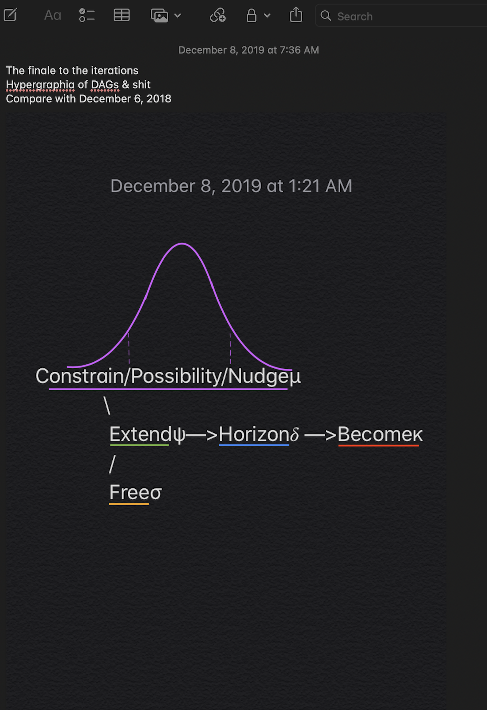

01/2019#
stcrreg i.race,compete(esrd_compete==1)
stcurve, cif at1(race=1) at2(race=2) at3(race=3) at4(race=4)
But generally, as Shah put it, “The first generation was more of a worker bee running their stores in mom and pop fashion while the second generation is more computer-literate and savvy and created a corporate culture, tiers of management, and a more businesslike approach.” Like many Indian franchise owners, Shah’s father did not seek a career in the profession for which he was educated. “An industrial engineer by trade, he found the lure of being your own boss more compelling,” Shah said.
First generation second generation third generation
work Art
JB: In Dreaming Up America (2008), your collection of essays, you considered the idea that it takes three generations for an American family to produce an artist: the first generation has menial jobs; the second has professional jobs; the third can pursue art or leisure.
RB: That’s John Adams’s template. And I actually think it’s false; it doesn’t really describe what usually happens in becoming an artist or writer. It would be nice if you had two generations preceding you to then make it possible for you to become an artist, but that rarely happens and it certainly didn’t happen in my case. More often in America, someone invents himself as a writer or artist, and does it against the wishes of those who surround him — his family and others — and, as a result, has to expend an enormous amount of energy justifying to himself or herself this enterprise. It can put you on the defensive for a long time, and make you insecure socially and otherwise. But I think it’s much harder than just simply being given the privilege, the kind of entitlement, that it takes to be an artist. You really have to blast the launch pad to get liftoff, scorching everything and everyone around you, and you cause a lot of damage sometimes.
qrsh
.
John Adams’ 1780 Letter to Abigail:
I could fill volumes with descriptions of temples and palaces, paintings, sculptures, tapestry, porcelain, etc., etc., etc.—if I could have time. But I could not do this without neglecting my duty. The science of government it is my duty to study, more than all other sciences: the art of legislation and administration and negotiation, ought to take place, indeed to exclude in a manner all other arts. I must study politics and war that my sons may have liberty to study mathematics and philosophy. My sons ought to study mathematics and philosophy, geography, natural history, naval architecture, navigation, commerce, and agriculture, in order to give their children a right to study painting, poetry, music, architecture, statuary, tapestry, and porcelain.
.
1.FLÂNEUR
Writing in 1962, Cornelia Otis Skinner suggested that there was no English equivalent of the term flâneur: “there is no Anglo-Saxon counterpart of that essentially Gallic individual, the deliberately aimless pedestrian, unencumbered by any obligation or sense of urgency, who, being French and therefore frugal, wastes nothing, including his time which he spends with the leisurely discrimination of a gourmet, savoring the multiple flavors of his city.”
https://en.wikipedia.org/wiki/Flâneur
In “De Profundis”, Oscar Wilde writes from prison about his life regrets, stating “I let myself be lured into long spells of senseless and sensual ease. I amused myself with being a flaneur, a dandy, a man of fashion. I surrounded myself with the smaller natures and the meaner minds.”
2.JOHN ADAMS
I must study Politicks and War that my sons may have liberty to study Mathematicks and Philosophy. My sons ought to study Mathematicks and Philosophy, Geography, natural History, Naval Architecture, navigation, Commerce and Agriculture, in order to give their Children a right to study Painting, Poetry, Musick, Architecture, Statuary, Tapestry and Porcelaine.
https://founders.archives.gov/documents/Adams/04-03-02-0258
3.CONCLUSION
Consider the idea that it takes three generations for an American family to produce an artist: the first generation has menial jobs; the second has professional jobs; the third can pursue art or leisure.
Thatʼs John Adamsʼs template. And so we have the following in our family:
1.Abimereki Dhatemwa (Driver);
2. Patrick Muzaale (Academic); and,
3. Abimereki D. Muzaale (Composer, Flâneur)
https://www.thebillfold.com/2012/12/it-takes-three-generations-to-produce-an-artist/
.
unencumbered by any obligation or sense of urgency
wastes nothing, including his time which he spends with the leisurely discrimination of a gourmet
the leisurely discrimination of a gourmet
.
Fred took me for granted and never valued me, was not a kind person
02/2019#
“People have called me bipolar or [said] that I suffer from depression, but I always identified most with the symptoms of someone with PTSD. Like a soldier who came home still dealing with the effects of being in a war zone,” he writes.
.
But while he writes with emotional force of the visceral pain and delusions stemming from the trauma that beset him and his neighborhood, Gucci sometimes veers into a conversational tone that has the feel of an off-the-cuff transcript, running through the important plot points of his story without the self-critical reflection that makes a celebrity memoir truly great—such as Elvis Costello’s Unfaithful Music & Disappearing Ink. It’s clear that he has put a lot of thought into describing his own hardships and their provenance, but fails to thoroughly investigate some of the pricklier parts of his history—most notably involving women.
.
Gucci could be fairly said to be rap’s most influential figure of the last few years. The producers who have shaped the dominant sound of the past half-decade—Zaytoven, Lex Luger, Mike Will Made It, Metro Boomin—all cut their teeth making mixtape classics at Gucci’s five-studio 1017 Brick Squad compound.
.
Despite the starkly contrasting moods that the two component genres evoke on their own—druggy paranoia on one hand, druggy euphoria on the other—they pair quite nicely. The EDM elements help connect trap rap with the electro-influenced sound upon which southern hip-hop was founded, while the trap elements give the ravey synths a whiff of danger. The fact that dubstep has made twitchy, triplet-laden rhythms de rigueur in dance music helps as well.
.
Pressure makes diamonds
.
Young Chop — ??
Trap Muzik — TI (2003!!!)
Versace — migos
Zaytoven — all productions
Migos — all albums
Lex Luger — BMF MC Hammer (clusters of fast or slow triplets)
Black Beatles — screen shot the “road”
Guwop
Mask off — future
Dime Trap — TI in 2018
A Seat at the Table — Master P & Solange
Whole (four beats)
Half (two beets)
Quarter (one beat)
Eighth (half beat)
Sixteenth (quarter beat ~ Semi-quaver)
Thirty second (eight beat) Sixty fourth (sixteenth beat)
.
“To me I feel like it was the blueprint for trap music,” Master P said while speaking on Ice Cream Man. “Because nobody wasn’t talking about hustling like I was talking about it. Nobody was really a boss in the music industry, everybody had a boss, everybody had someone putting their music out. So when I talk about hustling and trapping, I think it opened the doors for the Gucci Manes and the Young Jeezys so they could have a verse and everyone else after it. I feel like Rap-A-Lot, Scarface, Geto Boys opened the doors for me in the South, and I opened the doors for the rest of Southern hip-hop to where people could be themselves and be a real entrepreneur and businessman.”
.
“It’s about healing. The combination of young people, drugs, a very sexually charged social environment, and syncopated music. It’s just just all designed to draw you into you, and your friends, and your scene, and your hood, and you place in the cosmos, and not sell you out as a consumer to Hollywood, and Manhattan, and manufactured forms of entertainment”
Really ready (feat. Dolph & Rulet 101)
Gucci Mane — Trap God 2
03/2019#
20190301 version 2
Max’s Taphouse +256 Chapter
— Idea from Index funds
— Mirror Max’s monthly inventory
— X% of their inventory
— Automatically ship to D&E’s in the +256
— Baltimore’s Max’s owns 0.1% of D&E’s
x
Legal stuff for Allan to work on right away
1.Conglomerate: D&E
2.Subsidiaries: D&E’s X
3.X=1 is Tap-house
Upcoming subsidiaries are X=2,3,4,..,N
x
Ideas/Markets for growth
1.Uganda
2.Rwanda, Burundi, Congo
3.Africa
4.South America, Asia, Europe
5.North America (excluding Baltimore)
D&E’s will leave #5 to Max’s Tap-house
.
It goes down in the DM — add to 201903 playlist :-)
.
Muthaiga country club
.
Carr describes Nietzsche’s characterization of nihilism “as a condition of tension, as a disproportion between what we want to value (or need) and how the world appears to operate
.
Compression socks on amazon
.
Read about Anne Merriman, my palliative care instructor in med school
What a legacy!
.
04/2019#
🐐
G.O.A.T
Business
Bartleby
The two tribes of working life
Those who love networking and those who want to be left alone
x
Bookmark it already!!
Greatest peace of all time, along with Raphael’s school of Athens, and yours truly (Raphael 2.0’s) Venn diagram :-)
.
Happy 80th birthday, Daddy! Looking forward to celebrating the day with you. I pray that the good lord grants you many more exciting years.
Not a day goes by without me being grateful to you for all you’ve been & continue to be to me — could never ask for a better dad.
See you soon!
.
Nathaniel Nahamya’s in the house
.
Interesting. Just sat next to a Dutch woman in her 60s who was traveling with her husband (seared in business class). She’s traveling for pleasure. He for business. Reminded me of another couple I run into a few years ago under similar circumstances:-)
.
What would Aristotle have had to say about Mozart’s piano concerto no. 15 (andante)? Yeah, I thought so!
.
Musta gotta taste!!
Trappist Westvleteren 12 (XII)
.
Bob’s Top 3!!!
Cushwa Fog — Fredrick, Md (hazy NE IPA; smells like Pine 🌲)
Mully’s — southern, md (hazy, not lazy)
Dogfish head — SeaQuench Ale (sour AF)
Not sure any really works for me!
.
Tapeo
Boston
Atc 2017
Restaurant dinner
.
First-generation antihistamines
Antiparkinsonian agents
Antispasmodics4.Antithrombotics (only short-acting)
Anti-infective
Peripheral alpha-1 blockers
Central alpha-agonists
Other CNS alpha-agonists
Antidepressants
Antipsychotics, first (conventional) and second (atypical) generation
Barbiturates
Benzodiazepines (classify as short- and long-acting)
Nonbenzodiazepine, benzodiazepine receptor agonist hypnotics (ie, “Z-drugs”)
Ergoloid mesylates
Androgens
Estrogens with or without progestins (oral and transdermal)
Growth hormone
Insulin (classify as short- and long-acting)
Sulfonylureas, long acting
Proton-pump inhibitors
Non–cyclooxygenase-selective NSAIDs, oral
Skeletal muscle relaxants
Nondihydropyridine calcium channel blockers
Thiazolidinediones
Acetyl cholinesterase inhibitors
Nonselective peripheral alpha-1 blockers
Tertiary tri-cyclic antidepressants (TCAs)
Corticosteroids (oral and parenteral)
H2-receptor antagonists
Antiepileptics
Antiemetics
NSAIDs (non-COX, COX selective, oral and parenteral, nonacetylated salicylates)
Diuretics
SNRIs
SSRIs
RAS inhibitor (ACEIs, ARBs)
Opioids
Anticholinergic
.
KLM $1,061 (Dreamliner!)
July 10 - 24
.
Not all who wonder are lost — Jeep 🚙
.
Jimmy Fallon and young metro
.
Many Americans probably don’t know that a Pentecostal movement exists in France
x
Probably 90 percent of the attendees were black
x
The people danced, sang at the top of their lungs, and sometimes spoke in tongues. I never had the feeling I was witnessing a collective delirium, or that I was in the midst of a cult
x
The sign of peace, reduced in Catholic Masses to a brief, irritated, and icy shake of the hand, gave way here to interminable warm hugs and kisses. And at the end of the celebration, we would share bountiful meals.
x
And it was almost entirely a group of white people—I say that in order to establish that whenever we are dealing with affairs of the heart (and religion is such an affair, indeed of the highest degree), race is not pertinent
While I very much liked these charismatic celebrations, there remained in me a certain uneasiness, which I fully understood only later, thanks to Douglas Kennedy’s very good book, In God’s Country, which relates his study of revivalist Christianity in the Bible Belt. In reading the book, you sometimes get the impression that this renewal can only involve people with a past in alcoholism, drug addiction, prostitution, or homelessness—that it does not address itself to people who are integrated into society in a normal way, having spent their childhood in a reasonably loving family.
.
Savage 21
August 21, 2018
Instagram
Gotta see this!!!!!
https://www.instagram.com/p/Bmv8r-CjVAh/
.
We are right to expect that the Church will point out a path toward God,
independently of the jolts and shocks of the epoch
x
Independently of the jolts and shocks of the epoch; that it will remain, subsist.
x
Latin was supposed to mark a difference between everyday language and the language with which we address the Creator
x
The incense, rising up into the nave, pointed out a path for the soul
x
Priest, with his back to the faithful, was in reality turned toward heaven
.
What doesn’t kill you makes you..
No it gives you PTSD. Remember Ricky..
I think this is a very interesting debate!!
.
Rochefort vs Chimay
Westvleteren — Belgian
Mardesous 10
Monks in Philly 16th & Spruce
— Max’s in Pilly
— Great mussels
.
Rochefort vs Chimay
Seriously vet:
Dubbels
Tripels
Quads
.
Met a self-described beer nerd 🤓
.
Chimay on tap in Philadelphia
Inspired the birth of craft beers in USA
Look at us now? Hugest revolution
Regardless of replicability in the 256
Sounds like a pretty story
.
Free will vs. will to power
One is delusional
The other is conditional
.
Hi Abi,
Yes, I’m happy to assist with developing your search terms. This is going to be a lot of work so I’ve asked my colleague, Stella, who is the Informationist for the Department of Surgery to work with me on this project. She’s copied on this email.
I think it will be best to have a group meeting so we understand the parameters of your search.
Can you send us some dates and times you are available to meet?
Lori
From: Xxx Xxx Sent: Thursday, April 18, 2019 11:23 AMTo: Xxx Xxx xxx@jhmi.eduCc: Xxx Xxx xxx@jhmi.edu; Xxx Xxx xxx@jhu.eduSubject: Catalog of generic drug names by drug class
Hi Lori – Xxx referred us to you and we hope you might be able to help us out, given your expertise.
We are embarking on a study that will query a large national database for certain generic drug names. We have a list of about 38 drug classes of interest to us (please see attachment), but the query will call for precise generic drug names. Is it at all possible to produce a catalog of the generic drug names under each drug class? Creating a comprehensive list of these drugs would be the first and, perhaps, most consequential step of this project. And so we thought it wise to consult an expert in these matters.
Mara is the PI of this study and her primary appointment is with Epidemiology. It is for this reason that Donna referred us to you. Please let us know if anything needs clarification.
Thanks!
Abi
Xxx Xxx, MD MPH
Instructor of Surgery
Department of Surgery/Division of Transplant Surgery
Johns Hopkins University School of Medicine
Office: (410) 955-XXXX
Cell: XXX XXX-XXXX
Email: xxx@jhmi.edu
.
Heaven = No Rich Folks
Earth 🌎 = Selfishness
Bridge 🌉 = Eye of a Needle
.
Bruges and Brussels, Belgium 🇧🇪
The two places to visit
.
What, if some day or night a demon were to steal after you into your loneliest loneliness and say to you: ‘This life as you now live it and have lived it, you will have to live once more and innumerable times more; and there will be nothing new in it, but every pain and every joy and every thought and sigh and everything unutterably small or great in your life will have to return to you, all in the same succession and sequence’ … Would you not throw yourself down and gnash your teeth and curse the demon who spoke thus? Or have you once experienced a tremendous moment when you would have answered him: ‘You are a god and never have I heard anything more divine.’ The Gay Science, §341
.
We shall not cease from exploration
And the end of all our exploring
Will be to arrive where we started
And know the place for the first time.
Through the unknown, unremembered gate
When the last of earth left to discover
Is that which was the beginning;
At the source of the longest river
The voice of the hidden waterfall
And the children in the apple-tree
.
Centuries of husbandry, decades of diligent culling, the work of numerous hearts and hands, have gone into the hackling, sorting, and spinning of this tightly twisted yarn. Furthermore, we have not even to risk the adventure alone; for the heroes of all time have gone before us; the labyrinth is thoroughly known; we have only to follow the thread of the hero-path. And where we had thought to find an abomination, we shall find a god; where we had thought to slay another, we shall slay ourselves; where we had thought to travel outward, we shall come to the center of our own existence; and where we had thought to be alone, we shall be with all the world.
Joseph Campbell
.
The Triumph of Bacchus
The time of youth indeed is sweet,
But all too soon it slips away.
If you’d be happy - don’t delay!
Tomorrow’s ills we’ve yet to meet.
Welcome Bacchus, Ariadne!
An ardent couple, loving, fair.
They spend as one their days with glee,
For time flies fast and does not spare.
Thus these nymphs - and others - fare.
Happy they the livelong day!
If you’d be happy - don’t delay!
Tomorrow’s ills we’ve yet to meet.
These nymphs are tickled by the thought
To be deceived by lover’s wile.
If Love’s sweet remedy were naught,
Folk sure would be uncouth and vile.
Commingled now, they dance and smile
And sport and play the livelong day!
If you’d be happy - don’t delay!
Tomorrow’s ills we’ve yet to meet.
Upon a donkey, corpulent,
Silenus wends his weighty way.
Heavy, drunk and senescent,
Years and blubber on him lay.
He can’t stand straight, he is quite bent -
Yet still he smiles the livelong day!
If you’d be happy - don’t delay!
Tomorrow’s ills we’ve yet to meet.
All ye lovers, boys, girls too -
Long live Bacchus, and Love, I say.
Play, dance, and sing, each one of you,
Let sweetness o’er your hearts hold sway.
Fatigue and weakness throw away,
For what must be you cannot beat.
If you’d be happy - don’t delay!
Tomorrow’s ills we’ve yet to meet.
.
“What is it that Raphael did not paint? He painted no scene on the Mount of Olives, no Crucifixion. True, he painted a “Bearing of the Cross,” but it was a very poor picture and gives the impression of having been done to order. Neither did he paint any of the scenes leading directly to the Crucifixion. His creative genius begins to reveal itself again only when he portrays the figure of the great successor of John — the figure of Paul in “The School of Athens”; or when, passing over the other events in the life of Christ, he paints “The Transfiguration.” What Raphael has not painted helps us to understand that it was alien to him to portray those events on Earth (not events in the spiritual world) which took place after he was beheaded in his previous life. We realise why it was that Raphael painted fewer pictures of these particular events. When we look at the pictures, we feel that all those which portray events subsequent to the Beheading of John the Baptist, are not, like the others, born of earlier remembrances.”
.
In defense of Trap music (and rap music, in general):
If modern art is sometimes shrill,” he said, “it is not the fault of artist alone. We all incline to raise our voices when we speak to people who are getting deaf
Edgar Wind
x
the presence of unresolved residues of meaning is an obstacle to the enjoyment of art
x
These lectures were later compiled into a book, also entitled Art and Anarchy. In it he notes that, over time, public audiences have lost their capacity for an immediate and visceral response to art. The production and appreciation of art, he observes, has become marginalized and domesticated to a point where it can no longer significantly and lastingly move its addressees. Wind’s impulse in the piece is apparently restorative; he seeks to impede the observed tendency toward apathy and recover some of art’s latent anarchic quality
x
Wind begins his argument by presenting the long-standing conceptual correlation between art and forces of chaos or disorder, citing a lineage of thinkers and artists including Plato, Goethe, Baudelaire and Burckhardt. Particular emphasis is placed on Plato’s distrustful view of the imagination as fundamentally uncontrollable; Plato explicitly denied the true artist a place in his imagined ideal republic, not for lack of respect for the artist’s talent but out of fear for his capacity to upset the social balance. Wind also notes the repeated historical coincidence – in Greece at Plato’s time and in Italy during the Renaissance – of peaks in artistic accomplishment with political turmoil and breakdown
x
Plato explicitly denied the true artist a place in his imagined ideal republic, not for lack of respect for the artist’s talent but out of fear for his capacity to upset the social balance
x
when art is removed to a zone of safety, it may still remain very good art indeed, and also very popular art, but its effect on our existence will vanish
x
Art has thus, according to Wind, moved to life’s periphery. Again, Wind notes that this distance carries with it certain benefits for the scholarly approach to art; “detachment brought freshness and breadth, and a freedom from prejudice, a willingness to explore the unfamiliar, even the repulsive, and to risk new adventures of sensibility.” At the same time, however, art has lost its ability to resonate at levels deeper than the intellect, to incite the passions. Engaging with a work of art has become an act of mere observation as opposed to “vital participation.” Art has, for Wind, gained interest at the expense of potency.
x
.
The labyrinth is no longer unknown
A thread🧵 maps out the path of the
Heroes 🦸♀️ that went before us
x
We are not alone
.
These days, the value of a firm lies as much in its reputation, its processes, the know-how of staff and relationships with customers and suppliers as in tangible assets. Putting an accounting value on these intangibles is notoriously tricky. By their nature, they have unclear boundaries. Not every dollar of r&d or advertising spending can be ascribed to a well-defined asset, such as a brand or patent. That is in large part why, with a few exceptions, such spending is treated as a running cost, like rent or electricity.
.
War Story
\
Opioid Use —> Tolerance —> Rx
/
Vulnerable Folks
#2 What’s her war story?
#3 What’s you poison?
.
You’ve gotta meditate everyday
Clear your garbage regularly 🗑
Under the rag cleaning 🧼🧻🧹
x
Otherwise gets unbearably unhygienic
And something will have to give
Eves drop three 40 something divorcées
x
.
Who needs a 6pack when you have a keg?
.
At a time when a lot of us feel buffeted by a daily onslaught of grim news, 1843 takes you on a different journey. We cover the enduring stories of our age. Many of them have been around since The Economist, our sister publication, was founded in – you guessed it – 1843.
x
Our aim is to take a sideways look at the world and season it with a dash of humour or irreverence.
05/2019#
Suarez’s goal against Liverpool!!
.
PhD, player hating degree 📜
.
Lamb Hamiz?? Mezzos
Recommended by owner :-)
.
Riptide by the bay — whole crabs 🦀 (a dozen for $50 during season.. April/May)
Next to Thames Street Oyster House 🏡:-)
Life’s good!!
.
The Pendry
Fancy Italian hotel 🏨, restaurant :-)
Chianti & afetati misti
.
Thames Street Oyster House sea food salad 🥗
Gotta have it!!!
.
Tell tales about telomeres and teleology
.
Chapman performed Ben E. King’s “Stand By Me” on one of the final episodes of the Late Show with David Letterman in April 2015. Viral hit!
.
Nature has placed mankind under the governance of two sovereign masters, pain and pleasure. It is for them alone to point out what we ought to do, as well as to determine what we shall do. On the one hand the standard of right and wrong, on the other the chain of causes and effects, are fastened to their throne. They govern us in all we do, in all we say, in all we think…
— Jeremy Bentham,
End? pain, pleasure. Journey also
Deodontological: right, wrong
Teleology: cause, effect
.
A summary of the Umeme situation: the energy Authority’s purposeful “visible hand” sets the price (green); that leads you in the opposite direction (blue) of the “invisible hands” authority&guidance, which would have led you to equilibrium price (red). This results in a leftward&upward shift of your supply curve (purple) and a non-market equilibrium since the demand curve (yellow) isn’t moved at all by your boardroom decisions (you do absolutely nothing to increase utility — that’s for psychologists and magicians and great advertising).
So your only question to the C-suite is this: shouldn’t we be increasing supply? Moving purple curve rightward&downwards? Microeconomics can answer the rest of the questions after you set that “purpose.” (Hint: cut it, cut it!!!)
That’s how to “grow” supply, sales, revenue (blue stuff) and potentially bottom line (red stuff). It will automatically grow access. Because demand is elastic, as shown by the sloping yellow curve :-)

.
International | Living wills
Kidney donors are wanted, dead or alive
Since there are not enough of either kind, donation needs to be better organised
Melissa bensouda, of Kansas City, Missouri, was 25 when she was diagnosed with late-stage kidney disease. She had to start dialysis, hooking up three times a week to a machine that filtered her blood. “It wipes you out,” she says. Queasy and fatigued, Ms Bensouda struggled to care for her children and to keep working full time. To secure a place on the waiting list for a kidney transplant, she had to tackle other health problems first. It took a year and cost \(10,000 to treat dental problems, to which people with kidney disease are prone. In 2012, after nearly ten years on dialysis, Ms Bensouda was given a transplant. The new kidney lasted only five years. So she is back on the waiting list—along with 95,000 other Americans \)\cdots$
Koko
.
So there’s a possibility of getting a 1-year $250,000 supplement to the U01 – here’s the idea that I sent the NIH – they confirmed that it would qualify for an application – obviously there’s no guarantee, but these don’t go through full peer review etc so the chances are better than a standalone application
“Would creating a tool to identify appropriate living donors (by using some clever statistics to combine our NEJM paper on pre-donation risk in HIV negative donor, our JASN paper on post-donation risk in HIV negative donors, and our AJT paper on risk factors for HIV positive living donors – and then turning all of this into an online tool to help counsel HIV positive potential donors) be a reasonable supplement? It would be one-year scope and VERY helpful to many centers who now want to use HIV+ living donors…”
THIS MORNING can you put together a short, succinct, fancy-sounding specific aims page (I would use up about 2/3 of the page) that covers the above – remember the target audience is NIH PhD-trained administrators, not a study section, and not our colleagues, if that makes sense
Obviously if this comes through, you have salary support for a year (that we could probably extend to 2 years) which would give you more time to get stable independent funding…
Thanks!
.
After going three goals behind in the first leg in Camp Nou the Reds battled back to win the cup (2017)
After going three goals behind in the first half the Reds battled back to win the cup on penalties (2005)
.
Xta: Get a youngin’
You can then confuse her for many years
Zeus, look at me, you were able to pull it off for, what, some solid 6 years!
.
https://www.economist.com/leaders/2019/04/20/why-people-care-about-ancient-buildings
What happens when:
— Your hero falls?
— Your lover runs off with another?
— Your shrine of worship burns down? (or your pastor falls?)
— Your hospital runs out of supplies? (or has the mortality rate of a war zone?)
Means the following:
— The adaptive responses of the collective
— That stuff bequeathed to you
— That its all shit
Conclusion:
— We may filter out all that terrifies us 🙈
— We may focus our attention and energies on various projects to keep us distracted 🎯
— We may toe the line of our great heroes 👣
— But reality will every now and then manifest its self 🎲 ✂️ to us 🧠
Isn’t this what James Joyce meant by, “Terror is the feeling which arrests the mind in the presence of whatsoever is grave and constant in human suffering and unites it with the secret cause”?
.
Dwayne Wade commercial with wifey
Gatorade 🐊:-)
.
¡Gracias señor!
.
Profile
Saidi
Girlfriend: Kim
Been together at least three years
Obviously loves her
Those LeBron Jerseys!!!
He’d like for me to convey this info some day to Kim :-)
.
By 1886, Nietzsche himself had reservations about the work, and he published a preface in the 1886 edition where he re-evaluated some of his main concerns and ideas in the text. In this post-script, Nietzsche referred to The Birth of Tragedy as “an impossible book… badly written, ponderous, embarrassing, image-mad and image-confused, sentimental, saccharine to the point of effeminacy, uneven in tempo, [and] without the will to logical cleanliness.”[8] Still, he defended the “arrogant and rhapsodic book” for inspiring “fellow-rhapsodizers” and for luring them on to “new secret paths and dancing places.”
.
In 1888, in Ecce Homo, Nietzsche was back on the attack. He defends The Birth of Tragedy by stating: “…It is indifferent toward politics,—‘un-German,’ to use the language of the present time—it smells offensively Hegelian,
.
Today I would state that it was the problem of scholarship itself, scholarly research for the first time grasped as problematic, as dubious
.
This “new soul” should have sung, not spoken! What a shame that I did not dare to utter as a poet what I had to say at that time
.
Greeks will continue remain, as before, entirely unknown and unknowable as long as we have no answer to the question, “What is the Dionysian?”
.
A basic issue is the relationship of the Greeks to pain, the degree of their sensitivity
.
That question whether their constantly strong desire for beauty, feasts, festivities, and new cults arose out of some lack, deprivation, melancholy, or pain
.
If we assume that this desire for the beautiful and the good might be quite true—and Pericles, or, rather, Thucydides, in the great Funeral Oration gives us to understand that it is—where must that contradictory desire stem from, which appears earlier than the desire for beauty, namely, the desire for the ugly or the good strong willing of the ancient Hellenes for pessimism, for tragic myth, for pictures of everything fearful, angry, enigmatic, destructive, and fateful as the basis of existence? Where must tragedy come from? Perhaps out of desire, out of power, out of overflowing health, out of overwhelming fullness of life?
Nietzsche!
.
And, on the other hand, what if, to turn the issue around, it was clearly during the time of their dissolution and weakness that the Greeks became constantly more optimistic, more superficial, more hypocritical, with a lust for logic and rational understanding of the world, as well as “more cheerful” and “more scientific”? What’s this? In spite of all “modern ideas” and the judgments of democratic taste, could the victory of optimism, the developing hegemony of reasonableness, practical and theoretical utilitarianism, as well as democracy itself (which occurs in the same period) perhaps be a symptom of failing power, approaching old age, physiological exhaustion, all these factors rather than pessimism?
.
Does not a fundamental bass note of anger and desire for destruction rumble underneath all your contrapuntal vocal art and seductive sounds, a raging determination in opposition to everything contemporary, a desire which is something not too distant from practical nihilism and which seems to say “I’d rather that nothingness were the truth than that you were right, than that your truth was justified!”
.
Is your book not a true and justified Romantic declaration of 1830, under the mask of the pessimism of 1850, behind which is already playing the prelude to the usual Romantic finale—break, collapse, return, and prostration before an ancient belief, before the old gods… . What? Isn’t your book of pessimism itself an anti-Greek and Romantic piece, even something “as intoxicating as it is befuddling,” in any event, a narcotic, even a piece of music, German music? Listen to the following:
.
Hi Everyone,
I wanted to let you know that as corresponding author, it is really important to make sure that the manuscripts are deposited in PMC and that they get an PMCID.
I have a co-author that has not been diligent about this and it is holding up the 3rd year of R01 funding for me (and been quite a headache). For simplicity and not risking our funding, please list me as corresponding author for our projects, especially ones that are directly related to the 3 R01s.
Thank you!
Mara
.
“On the other hand, to an intrinsically sound nature, illness may even constitute a powerful stimulus to life, to a surplus of life”
Nietzsche
What else is the goal of vaccination, the greatest and most successful achievement of scientific medicine?
.
“He believes neither in “ill-luck” nor “guilt”; he can digest himself and others; he knows how to forget—he is strong enough to make everything turn to his own advantage.”
Excerpt From
Ecce Homo
Friedrich Nietzsche
https://books.apple.com/us/book/ecce-homo/id1369792621
This material may be protected by copyright.
.
From homeostasis to Allostasis
👋🏾
🎤
Mic drop, drop top
.
Bamuturaki
.
My formula for greatness in man is! Amor fati
.
Emmanuel Njeuhmeli’s
Call Bernard— dual citizenship for Okello
My cell number is +1 443 825 7619
.
From the moment that Tristan was arranged for the piano —all honor to you, Herr von Bülow!—I was a Wagnerite. Wagner’s previous works seemed beneath me—they were too commonplace, too “German.” … But to this day I am still seeking for a work which would be a match to Tristan in dangerous fascination and possess the same gruesome and dulcet quality of infinity; I seek among all the arts in vain. All the quaint features of Leonardo da Vinci’s work lose their charm at the sound of the first bar in Tristan.
This work is without question Wagner’s non plus ultra; after its creation, the composition of the Mastersingers and of the Ring was a relaxation to him
— Why I am So Clever
.
Dorry ACLU donations
Assert “Trump” == “Smart”
.
Klein Duvel — Camden (bar)
Ermiece Straub
tDCS
Abimereki
Liden (between Amsterdam & Rotterdam)
X the dutchest town!!
— Hopkins Neurology
— Very Swedish Ancestry
— Maastricht
— Biking 🚴♀️
.
Giving Beer Lovers Freedom of Choice | John Rossheim for MSN Local Edition
Yes, the vast bulk of Americans still drink the schlock of beers, from the big brewers that seem to spend more on marketing than on the corn and rice that fill out their bland product. But the bourgeois beer bohemians among us – whether 20-something hipsters or middle-aged connoisseurs – are going strong, restlessly racking up exotic brew experiences from Rochefort Trappistes to Lost Abbey Duck Duck Gooze, like so many notches on a bedpost.
.
Top picks from Maryland craft fest
Monument city
Brookeville Beer farm Rye BA Belgian dubbel
Burley Oak/Amswe-tangle jream
Duclaw Mezcal BA sour
True respite the plunge
union older pro: blueberry
.
Charnell — stage name
Scarlett— real name
Mom is my age
Is a Foodie
Told me “don’t be shy, you’ve got my number”
Yea-saying (literally, see correspondence)
Wants to travel around the world
Been only to Toronto
Her friends are broke
So has limited options
Looks like wants to be cared for
Is only 20!!
Wants children
Like me!!
Anything to hold me back?
Nay!!!
I’m yea-saying :-)
She is an “old soul”
Got brain freeze, couldn’t remember
Bruno Mars
This is it!
.
When I cast about me for my highest formula of Shakespeare, I find invariably but this one: that he conceived the type of Caesar. Such things a man cannot guess—he either is the thing, or he is not. The great poet draws his creations only from out of his own reality
— Why I am So Clever
.
Mozart, Beethoven & Nietzsche knew too much?
Why God took away their life, hearing, and mental faculties?
Before they’d open the words eyes?
— CADASIL
.
Rebirth of the desert island disk
If you were to live your life all over again, what would you do different?
Ok, so that is called editing; so, to restate the question, if you were to relive it over and over again , as if in an eternal recurrence, and you were not able to edit aspect, but you were allowed to bring something along this time, what would you bring along?
Hint: Mozart brought his magic flute along
What antidote do you need?
.
#78 Ambition a surrogate for moral feeling. — Moral feeling must not be lacking in those natures that have no ambition. The ambitious contrive to get on even without it, and with almost equal success. That is why, if they should ever lose moral feeling, the sons of modest families that know nothing of ambition decline very rapidly into compete good-for-nothings
#80!!!
.
Colorado
— South Park
— Craft Beer
— Weed
.
163th richest person in America
Also richest black person
.
Huffpost
Donald Trump Loses It With CNN’s Chris Cuomo And Don Lemon
Donald Trump’s wild week continues.
The president lashed out at CNN and two of its prime time hosts, Chris Cuomo and Don Lemon, on Twitter late Thursday.
Trump claimed a reported drop in the cable news network’s ratings was down to viewers “getting tired of so many Fake Stories and Anti-Trump lies.” He said Cuomo’s “Cuomo Prime Time” show was “failing badly,” and called “CNN Tonight” host Lemon “the dumbest man on television.”
Wow! CNN Ratings are WAY DOWN, record lows. People are getting tired of so many Fake Stories and Anti-Trump lies. Chris Cuomo was rewarded for lowest morning ratings with a prime time spot - which is failing badly and not helping the dumbest man on television, Don Lemon!
.
#159 Nietzsche on Chopin
Sooooo spot on!!
#fetters
#dancing
#princely
#born to etiquette
.
Mezze
Tuna carpaccio
Spinach pies 🥧
Roasted salmon in bourbon
Mussels in season
Roasted lama beans
Braised beef
With mushed potato’s
Lamb chops with roasted potatoes 🥔
.
I knew he had a way with words — prose, but not with poetry! But now that I think of it, all the greatest generals were also poets. One who comes to mind is Patton. But if we stretch further back to antiquity, we find Aeschylus, perhaps the most celebrated tragedian in Pre-Socratic Greece. Yet all he wanted to remembered for were the battles he’d won. So is it here with Ali: he wants you to remember the people he beat. Yet, judging by his oratory skills, he was as extraordinary in those arts.
There’s something that unites these disparate performance arts 🎭 (battle field, boxing 🥊 ring, and poetry): isn’t it, like the famous haka, a ceremonial dance or challenge to the enemy? Isn’t that a legitimate way to show off ones dexterity through space & time?
I believe it is. And it’s the cerebellum and the striatum of the 🧠 that play key roles in all these tasks. Natures irony, that this is the very system in Ali that got corrupted by Parkinson’s!!
.
Look up what Nietzsche stresses about:
1.Nutrition
2.Climate; and,
3.???
.
Good morning! Kindly acquire and send for me via the clouds a book entitled Social Development in Social Work : Practices and Principles by Richard Hugman
.
While socialism is on remand,
Capitalism I do commend.
Like no other system known to man:
It aligns supply & demand
And so with that I do command—
06/2019#
Good evening everyone!
This is a reminder about our lab dinner to be held on Sunday June 2nd at 7:30PM.
The dinner will be held at Whiskey’s located at 885 Boylston Street Boston MA, 02116.
Please bring your ID to the restaurant.
.
Business | German beer
Pure, cheap and a bit dull
Brash Americans plan to froth up Germany’s staid brewing business
THE dirndl-clad waitress bringing huge mugs to Lederhosen-wearing revellers at Oktoberfest is an image that, like none other, shows how central beer is to German culture. The national brewers’ association declares Germany “European Champion”. It brewed 94.4m hectolitres last year, beaten only by China, America and Brazil.
But the truth is that Germans are going off their ale. At unification in 1990, annual consumption averaged 148 litres per head; last year it was just 107 litres. Instead, they are turning to wine, which has a higher status. Connoisseurs think there is another reason for falling sales: that so many German beers are bland and indistinguishable. The country has many tiny breweries whose ales can only be had locally. Some, like the smoked beers of Bamberg in Franconia, are distinctive.
.
BUSINESS
Craft Beer Is the Strangest, Happiest Economic Story in America
Corporate goliaths are taking over the U.S. economy. Yet small breweries are thriving. Why?
By Derek Thompson
The monopolies are coming. In almost every economic sector, including television, books, music, groceries, pharmacies, and advertising, a handful of companies control a prodigious share of the market.
The beer industry has been one of the worst offenders. The refreshing simplicity of Blue Moon, the vanilla smoothness of Boddingtons, the classic brightness of a Pilsner Urquell, and the bourbon-barrel stouts of Goose Island—all are owned by two companies: Anheuser-Busch InBev and MillerCoors. As recently as 2012, this duopoly controlled nearly 90 percent of beer production.
.
$60k for 30 acres in Maine
.
hopped up out of bed turned my swag on, took a look in the mirror
.
Homeostasis is driven by cellular memory
Allostasis by limbic memory
It’s all memory
.
I wonder who funds such studies. They are not particularly insightful & do no push our knowledge forward. For some of us in the trenches, we already know that our 9 mile daily runs (1000 calories in 80 minutes) are far from sustainable in the long run — but for less fancy reasons: the knees, sheens, and feet ache and need rest every now and then!
Six of the boys who share their Apple-Watch-documented workouts via iCloud face similar challenges & we all agree that running is way too rough on the feet, sheens, and knees. Thus the need for swimming and weightlifting, which stress different muscle groups.
So it is the physical wear & tear that is the rate-limiting-step, not the metabolic & calorific one. And we also witness this with marathon runners. They all need many days of physical recovery after the 26 mile run. Premiership Soccer players may also agree that it’s the sheer physical stress on the bones and muscles that limits how much one can do — way before we approach the 4000/day calorie work out.
.
σμψ𝛿κ
Five-Greeks
.
nitimur in vetitum — We strive for the forbidden 🚫
.
Thereafter, it was open warfare. Nietzsche passed up no chance to mock Wagner’s sentimental return to the Christian faith, and Cosima tried to pretend that Nietzsche was dead. Nietzsche was the weaker party, ever more sick in mind and body, and unable to avoid hoping that Cosima would rescue him by turning against her husband and his memory. It was useless. As the Wagner cult became more intense after the Master’s death, Cosima found her role as its high priestess. Nietzsche was at best an inconvenience, at worst a threat. Ariadne would neither deliver Theseus from the Minotaur nor accept this second Dionysus alongside her departed Dionysian lover. Intolerable as Cosima was, it is hard to see what she could in fact have done for Nietzsche; still, one flinches at the last words of this book: to his guardians at the German asylum, Nietzsche declared, ‘’It was my wife Cosima Wagner who brought me here.’’
.
“At bottom all I had done was to put one of Stendhal’s maxims into practice: he advises one to make one’s entrance into society by means of a duel. And how well I had chosen my opponent—the foremost free-thinker of Germany!”
Excerpt From
Ecce Homo
Friedrich Nietzsche
https://books.apple.com/us/book/ecce-homo/id1369792621
This material may be protected by copyright.
.
The poppy’s paradox is a profoundly human one: If you want to bring Heaven to Earth, you must also bring Hell. In the words of Lenny Bruce, “I’ll die young, but it’s like kissing God.”
.
NMDA/GABA
mu-, delta-, and kappa-receptors
5HT, NE, Dopamine
.
Christianity may be ok between consenting adults in private but should not be taught to children. Discuss!
.
https://en.wikipedia.org/wiki/The_Astonishing_Hypothesis
.
🐘
Funniest Nietzsche line:
When I then calculate from that day forward, the sudden production of the book under the most unlikely circumstances in February 1883—the last part out of which I quoted a few lines in my preface was written precisely in the hallowed hour when Richard Wagner died in Venice—I come to the conclusion that the period of gestation covered eighteen months. This period of exactly eighteen months might suggest at least to Buddhists that I am in reality a female elephant.
.
Fuck you guys, I’m going home! Eric Cartman
By creating a “self” and “other” distinction, we show that right AI and dACC are involved in processing the salience of being judged by others
we performed quantitative reverse inference analyses to explore the best general psychological account of the dACC function P(Ψ process|dACC activity). Results clearly indicated that the best psychological description of dACC function was related to pain processing—not executive, conflict, or salience processing.
.
Kawhi Leonard, the same player who put a nail in the coffin of LeBron’s stint in Miami five years ago, did the exact same to the Golden State Warriors.
They went out like champions, like true warriors, like, to borrow Steve Kerr’s phrase, “f-cking giants.”
.
Int J Psychoanal. 1996 Dec;77 ( Pt 6):1127-68.
The empire of the ear: Freud’s problem with music.
Cheshire NM1.
Author information
1
Arfon Mental Health Centre, Bangor.
Abstract
Freud’s difficulty in appreciating music, even though he seems to have been one of Charcot’s ‘auditifs’ and had given auditory imagery a central place in his psychology, is re-examined in the light of his dealings with various distinguished musicians, and with special reference to the musical career of ‘Little Hans’. The author argues that Freud’s exaggeration of his difficulty, combined with his ability to enjoy certain operas and his use of musical metaphors in the context of theory and therapy, confirms his own intuition of a conflict rather than a simple deficiency. This conflict is examined with reference to the theories of Eissler and of Vitz, and in the light of his own interest in classical Greek culture and in the nature of Art. Since opera was perhaps the only form of music that Freud could readily enjoy, the relation between words and melody in that genre is addressed. The significance for Freud of the specific works and passages that he mentions throughout his writings is examined in the light of some of his own theoretical concepts: (a) with special reference to ‘oedipal’ features, to the dynamics of ‘eros’ and ‘thanatos’, and to the balance between the ‘primary’ and ‘secondary’ processes in artistic creativity; and (b) as exemplified in his favourite operas ‘The Marriage of Figaro’, ‘Don Giovanni’, ‘Carmen’ and ‘The Mastersingers’. The parts played, in his problem with music, by his envy of the artist’s intuitive talent for seduction and by his own ‘acoustic atrophy’ are also considered. He is defended against the recent charge that, in order to avoid having to cede primacy to others on points of psychology, he deliberately misrepresented how much he knew about music.
He did the same with regards to Nietzsche (i.e., deliberately misrepresented how much he knew about Nietzsche’s works)
.
— Reality vs. Idealism
— Dionysian vs. Apollonian
— Teleology vs. Deontology
— Becoming vs. Being
— Change vs. Permanence
— Pre-Socratic vs. Socratic
— Trenches vs. Administration
— Process vs. Variance
— Bayesian vs. Frequentist
— My tribe vs. Theirs
— Story teller vs. Name-dropper
— Verbs vs. Adjectives
— Pathways vs. Coefficients
— Nature vs. Imagination
— PNS vs. Cortex
x
— Human Being’s emerged 2 million years ago
— Their environment has changed since then
— Environment will continue to change!
— Yet they are still “Being” what they were back then
— Infrastructure-wise so to speak
— What were adaptations then might now be maladaptations
— So Becoming can be supported from this perspective
— Need technology that can “support” our infrastructure
— As we usher in purpose-driven, teleological, evolution
— Or maybe only for the benefit of robots?
— This was the wisdom of Heraclitus
— It is the wisdom of Engineers
— Lost on Socrates, Plato, and Aristotle
— But engineering brings it all back
— Hence forth I am an engineer
— 2019/06/14 8.36am
.
Hero of the month
2019/6
Lou Andreas-Salomé
x
Finest menage a trois:
Left to right, Andreas-Salomé, Rée and Nietzsche (1882)
x
The immoral woman archetype?
Serial rejector of suitors?
Collective unconscious
.
It’s been quiet an ache
Going about trying to bake
A tasty-sweet poetry cake
For you to partake
And for all my pains
There’s hardly been any gains
Except for what here reigns
Poetry with no brains
Forgive me if you sleep
As you read these rhymes
Pardon me if you weep
For the poetry of these times
I am but a doctor
A poet with no mentor
About to enter
Something beyond my mental
.
— question:
— date someone for 6 years
— and you have measly 4 mutual friends?
.
2ra is at 32 weeks
2019/06/16
.
#277 Happiness and culture.— The sight of the surroundings of our childhood moves us deeply: the garden-house, the church with the graveyard, the pond and the wood — we see all these with a sense of suffering. We are seized with pity for ourselves, for what have we notion through since those days! And here everything is still standing there so motionless and eternal: it is only we who are so different, so affected; we even rediscover certain people upon whom time has whetted its tech as little as it has on an oak tree: peasants, fishermen, forest-dwellers — they are the same.— To be moved and to feel self-pity in face of lower culture is a sing of a higher culture; from which it follows that happiness at any rate has not been augmented by the later. He who wants to harvest happiness and contentment from life has only to avoid acquiring a higher culture
.
Free spirit vs. fettered spirit?
Slave to the rhythm of good & bad?
Or to the humdrum of happily-ever-after?
.
They never met and had little good to say about each other. Wagner tended to be circumspect on the subject of Verdi. But in an 1899 interview with a German newspaper Verdi, then 86, called Wagner “one of the greatest geniuses” who left treasures of “immortal worth.” Verdi added that as an Italian, he could not claim to “understand everything” in Wagner. But before “Tristan und Isolde,” he declared, “I stand in wonder and terror.”
.
Freedom in fetters — a princely freedom. That is what Nietzsche thought of Chopin, “the inimitable Pole,” and Raphael. Both had princely nobility in respect of convention, admitted these without dispute, but did so playing and dancing in these fetters like the freest and most graceful spirits — and did so, moreover, without turning them to ridicule.
Although I agree entirely with this characterization, to me it seems that Mozart’s piano concertos are the quintessence of “dancing in these fetters”: the concerto form in the able hands of this maestro of the symphonic & operatic forms — he holds the distinction of becoming the only maestro of both instrumental and theatrical music, which becomes evident in the piano concerto where the two “spirits” [fettered and unfettered] meet — transports us right back to the grandeur and splendor of an 18th century Viennese royal court, just as Haydn or Salieri would.
The piano solo respects this elegant setting in melody and rhythm — born to ethiquette, as it were — but betrays a vibrance and sure-footedness that is without a doubt “the fettered, yet free spirit”. The orchestra plays the role of 18th century Viennese society. As a matter of course, the piano solo is both literally and figuratively Herr Mozart in all his princely freedom, fettered in “having to endure the customs of the Castle where a prince must reside,” yet also unfettered in “making the most of what he can with servants and the help who work but not live in the Castle”.
“When one considers the somnambulistic surefootedness and grace with which Mozart masters the vocal and the instrumental, mass and opera, quartet and concerto, one’s admiration grows immeasurably at the phenomenon of his uniqueness as a universal musician.”
— Alfred Einstein
.
Amadeus
loved of God
.
John 3:16
.
Gracias señor
.
Jw.org (website)
Menu
Publications
Music
Jw library (app)
Kingdom Hall
1110 Springfield Ave
Tuesday @ 7pm
Sunday @ 9am
.
— Call Tasha
— She’s Jehovah’s witness (JW)
— And is married
— But her friend!!!!
— Is totally single
— Now I gotta go to Kingdom Hall!!
— WTF????
— Tasha has my number
— I also got here
— Likelihood she’ll call me
— For her friends sake
— who knows??
.
Sfumato— drink
Dark, stout-like??
.
R bar has won me 💯
But, with regard to craft beer,
Max’s #1
.
Life turns out to be painful 😖
From eternally recurrent smoothness
Or eternally recurrent randomness
The one leads to existential pangs
While the other to physical pain
x
A resilience emerges with the later
Yet with the former none ever does
So one is bound for stronger will
But the other for ill-will 🤒
Existential pangs are numbed
x
Religion and group membership
Opioids (including bad art)
Rare occasions find relief in hedonism
Most rituals of dubious merit: work, school Politics and engineering misses all this
.
Apollonian & Dionysian
— It was the best of times, it was the worst of times
— It was the age of existential pain, it was the age of physical pain
— It was the age of predicaability, it was the age of unpredictability
— It was the age of humdrum, it was the age of adventure; therefore,
— It was the age of suffering, it was the age of suffering
.
it “did not occur to me that you could have the supreme vice, shallowness.”
.
Salience — my word of the year 2019!
My new-year resolution was “express my SELF fully”
From a perspective of salience, that means abdicate from all princely duties :-)
This is a call to action: go out and discover what excites your senses!
And repeat this every day since every end is a beginning
.
My heroes of 2019
1.Robert Sapolsky
2.Immaculate Bamuturaki
3.Lou Andreas-Salomé
4.Brien Masters
.
Taps nearby
Peabody heights 0.4mi 4/5 xxx
R. house 1.0mi 1/5 xxx
Growler — Rotunda 1.3mi
Five and dime ale house 1.4mi
De Klein Duivel 1.5mi
The Brass Tap 1.7mi
Smaltimore 3.5mi
.
Men face reality, that’s why they have to drink
.
Is scientific scholarship perhaps only a fear and an excuse in the face of pessimism, a delicate self-defence against—the Truth? And speaking morally, something like cowardice and falsehood? Speaking unmorally, a clever trick? Oh, Socrates, Socrates, was that perhaps your secret? Oh you secretive ironist, was that perhaps your—irony?
.
Allan Massie
Perhaps my closest colleague
Define “close” in whichever way
But certainly: person-years “together”
x
Gracias Señor
.
Peabody Heights Brewery
— Unforgivable Curses
(Belgian Triple)
— Barrel Aged POST
(Imperial Stout w/Reeses and kit kat)
.
Now am I in Arden when I was home I was happier
.
I fully expect to be waiting tables for a good portion of my life, but I’m happy when I’m acting, and that’s a feeling not everyone can have in their life so easily :-)
.
For a while, Somali piracy attracted unprecedented public attention, displacing images of peglegs, eye patches and a dreadlocked Johnny Depp from the popular imagination. Whereas buccaneers in the Gulf of Guinea and South-East Asia stole cargo, the Somalis seized crews and often the ships themselves, hauling them back to the ungoverned coast of their lawless state. A fifth of the world’s commercial shipping passes through the Gulf of Aden, a body of water flanked by failed states—Somalia and Yemen. In 2011 the imb reported 236 attempted attacks. The pirates were raking in an average of almost $5m in ransom per ship, according to One Earth Future (oef), an ngo.
.
Vanguard Institutional Target Retirement 2045 Institutional
07/2019#
1.Daniel Kahneman 360k Biases
2.Michael Porter 458k Strategy
3.Tom Maniatis 348k Neuroscience
4.Noam Chomsky 387k Linguistics
5.Gary Becker 255k Economics
6.Hannah Arendt 224k Politics *** Human Condition
7.Albert Bandura 577k Psychology
8.Robert Leftkowitz 163k GPCRs
9.John PA Ioanndis 215k Meta-research
10.Bert Vogelstein 380k Cancer
11.Michael Schmitt 224k Quantum Mech.
12.Si Xie 132k High Energy Phy
13.Kevin Keller 169k Marketing
14.Meenakshi Narain 215k Particle Phy
15.Julia Velkovska 136k Nuclear Phy
16.Lewis Cantley 164k Cancer
17.Gustavo Scuseria 228k Quantum Chem
18.David Watson 111k Affect
19.Peter Bentler 198k Structural Equa. Modeling
20.Graham Colditz 294k Epidemiology
.
Curiosities
1.Michel Foucault
2.Pierre Bourdieu
3.Sigmund Freud
4.Eric Lander
5.Douglas Altman 217 416865
6.Shizuo Akira 264 332522
7.Eugene Braunwald 260 337339
8.Michael Graetzel 253 323056
9.Salim Yusuf 235 300475
10.Amartya Sen 199 302983
11.Philip Kotler 178 366151
498.Andrei Shleifer 141 268100
573.Daniel Kahneman 138 351718
687.PAulo Freire 133 334171
1154.Masatoshi Nei 121 327120
1335.GEorge SHeldrick 118 313707
.
My latest Stuff 20190701
Did my US-bias exclude the true #1?
Namely Michel Foucault?
Me thinks so!
1.Daniel Kahneman 360k Biases
2.Michael Porter 458k Strategy
3.Tom Maniatis 348k Neuroscience
4.Noam Chomsky 387k Linguistics
5.Gary Becker 255k Economics
6.Hannah Arendt 224k Politics *** Human Condition
7.Albert Bandura 577k Psychology
8.Robert Leftkowitz 163k GPCRs
9.John PA Ioanndis 215k Meta-research
10.Bert Vogelstein 380k Cancer
11.Michael Schmitt 224k Quantum Mech.
12.Si Xie 132k High Energy Phy
13.Kevin Keller 169k Marketing
14.Meenakshi Narain 215k Particle Phy
15.Julia Velkovska 136k Nuclear Phy
16.Lewis Cantley 164k Cancer
17.Gustavo Scuseria 228k Quantum Chem
18.David Watson 111k Affect
19.Peter Bentler 198k Structural Equa. Modeling
20.Graham Colditz 294k Epidemiology
Genealogy vs Ideology
Process vs Variance
Free vs Chained
x
Curiosities
1.Michel Foucault
2.Pierre Bourdieu
3.Sigmund Freud
4.Eric Lander
5.Douglas Altman 217 416865
6.Shizuo Akira 264 332522
7.Eugene Braunwald 260 337339
8.Michael Graetzel 253 323056
9.Salim Yusuf 235 300475
10.Amartya Sen 199 302983
11.Philip Kotler 178 366151
498.Andrei Shleifer 141 268100
573.Daniel Kahneman 138 351718
687.Paulo Freire 133 334171
1154.Masatoshi Nei 121 327120
1335.George SHeldrick 118 313707
The answer was not to return to a faith in God, but at the same time to deny a faith in Man, and particularly in human reason. Foucault spoke of the “death of man” in the same way Nietzsche spoke of the “death of God.” And so we have the conflict between Noam Chomsky, who still believed in human reason and the value of the pursuit of justice, with Michel Foucault, who believed that truth and justice are ultimately manifestations of power and should not be glorified as though they had meaning outside of the power structures from which their meanings arose.
.
Set off for R. House at 7pm
Set off for Kleine Duivel at 8pm
Leave at 10pm
5.Mans ass (salience & bias)
1.Cosmos (our senses)
2.Obesity & preventable disease (cvd epi)
.
Anu Bhagwati — DMN: unpracticed as child — CEN: overkill as Indian immigrant family — SN: decides CEN suppressing all she craves: e.g. basketball — AI: drops out of college and join’s Marine core — PNS: doesn’t like what she sees (CEN 2.0)
x
#Unbecoming
x
We first learn of Bhagwati’s childhood under the heels of her domineering and traditional Indian parents. They disapprove of her love for basketball and pressure her to be a perfect student. But they also attack her developing sexuality while imposing their own racist views on her social life: “Two women kissing. It’s disgusting,” her mother says upon learning 16-year-old Bhagwati has a girlfriend. “If you do not end this now, I will kill myself.” And when she is at Yale and has an African American boyfriend, her father says, “What on earth are you trying to do to your mother.”
The second section is the most substantial, and depressing one, focusing Bhagwati’s training to be, and then becoming, a Marine Corps officer. She struggles to find her footing in this tear-down-a-human-to-build-a-warrior environment while chafing at the double standards for women, who are not expected to perform pull-ups or run like a man, who are not allowed to serve in combat and who are generally isolated within the Marine culture. There are moments of triumph, such as when she is danger of flunking out of training until an officer says she is failing because she is lazy. Then, she does the unthinkable: speaking out of turn to insist, “This candidate is not lazy. Sir.” This impresses the officer enough to earn her more time. She revels in the physical hardship and more than keeps up with the men, whether it’s in the grueling runs or on the firing range.
x
Very much a metamorphosis
But not willed by Das Ich —
Rather by Das Nicht Ich
.
PreviewPreview7:26Businessman Ham Kiggundu’s book “Success & Failure” - PREVIEWYouTube · BM TV AfricaJul 28, 2018
.
Simpatico — handsome, good soul, approachable
.
— met Maithelee — Allan — philipno friend — with white husband (name??) — fun!!! — Carl Jung!!! — Allan read about Chicago study — kids from south side — less afraid of guns and shit — most afraid of spiders 🕷 — snakes 🐍 — and tigers 🐅 — which they’ve never encountered — collective unconscious
.
God is still very much alive! Its just that ‘Our fearsome gods have only changed their names: they now rhyme with -ism’ — Carl Jung
.
— Estelle is 22yo — probably African — young — beautiful — restrained — fair — knee-torn jeans 👖 — gave me name and number — wants me to call her — works at Honeygo — starts at 5pm — closes at 11pm — offer her everything!!!!!!!!!!!
.
Robert Sapolsky Michel Foucault
More specifically, Sapolsky studies the cortisol levels between the alpha male and female and the subordinates to determine stress level. An early but still relevant example of his studies of olive baboons is to be found in his 1990 Scientific American article, “Stress in the Wild”. He has also written about neurological impairment and the insanity defense within the American legal system
A representation of how a failure to inhibit immune function during stress can bias you toward autoimmune disease: (i.e., that which does not kill you makes you stronger — but in a bad way) @Robot_Sapolsky
How does the adrenal fare during ESRD? Benzo? Opioids?
.
Not everyone is on the right tail
So don’t interact with them
You’ll be misunderstood
.
Orombi — busy retirement — moves with team — those who don’t? — fear accountability — unaccountability of man 👨🏾 — Job 36 — Matthew 25:34-40 — Bishop of Butabika (St. Luke) — Married at 47yo — Bring my books to Butabika Library — Don’t give one big gift — One big meal — Instead split it into smaller gifts — And more frequent — Eternal recurrence — They want love — Rev Dismas Eddie Bwesigye — Job 36:22-33, Exodus -15:1-21 — A God of wonders — Power, miracle, call back laws of nature — Resurrect from dead 💀 — Sovereignty over future — What would you bring back with you? — In eternal recurrence? — Why not God? — What’s with peekaboo at 3yo? — He never fails
.
Power is not itself evil; power is simply the capacity to modify the actions of others
.
Specifically run interaction analysis for opioid:
margins, over(benzo_rx opioid_rx) expression(xb()) post
lincom 1.benzo_rx#0.opioid - 1.benzo_rx#1.opioid
Yujo Izakaya 🏮
Banange IPA 🍻:-)
Soya + Wheat + Miller (Nutri Porridge)
Banange craft beer
Barley vs Wheat 🌾
This place is way too organized
Just liked the Boston taphouses
Max’s revel in chaos
Just look at that menu!
And how frequently it changes
Photos for Bob
.
Divine Dreams Club
Marcus Kiryowa
Denis Kiryowe Mudhange
.

Prince
.
A negative review referred to their music as “a daft punky thrash
.
Machine Guy Kelly
Young Blood
—> listen
08/2019#
Can I just say, thank you for always and genuinely celebrating authenticity in others, even when you’re not strong enough to be associated with it , courage doesn’t just happen, it is people like you, that give one the courage to continue to be.
✊🏾 my authenticity is my activism.
.
But your parents raised you way too well, budo groomed you way too classically for you to waiver far from the apple tree.
I think that, that classical conditioning is stronger in you, stronger than the need for authenticity.
So you end up stuck in the middle , trying to make sense of it. A man that seeks wild imperfection in the most perfect of women.
Ha.
.
Ka-D, women need security. Emotional security. Without it, we don’t feel our partners are solid and are for us. You don’t have a lot of that to offer. Which makes anyone you date awfully insecure.
(Whether they were before you or not)
.
— Ariana Grande: Canvas
— Tayla Parx: Painter 👩🎨 🎨
— Tommy Brown: Dealer
— Victoria Monét
.
Koko
Grenada
August Friday 9, 2019
.
The Nobel prize in physics 1903
— Antoine Henri Becquerel
— Pierre Curie
— Marie Curie
Nobel prize in chemistry 1935
— Irêne Joliot-Curie
— Frédéric Joliot
Nobel prize in physics 1922
— Niels Henrik David Bohr
Nobel prize in physics 1975
— Aage Niels Bohr
Nobel prize in physiology or medicine 1973
— Karl von Frisch
— Konrad Lorenz
— Nikolaas TInbergen
Nobel prize in economics 1969
— Jan Tinbergen
.
Everything decisive comes to life in defiance of every obstacle
.
I don’t think history has any value except for the pleasure its stories provide
.
The best artists are the most seductive story tellers
Science at its best is a mode of thinking that is immune to seduction
And so products of art are enjoyable
While those of science are dull and mostly unbearable
.
Popper: criticism is one of the greatest acts of friendship, even if some of your friends end up hating you for it. Discuss
This might be the place to remind you of Popper’s old joke that ‘Social science began with the idea that we need a new science so we can get rid of our social problems – and now our biggest social problem is how to get rid of the social scientists’.
For Daddy
.
Sprechen sie Deutsch
Do y’all speak German?
.
Don’t we need folks who are impervious to the charms of the chorus?
.
You shared this some years ago. The key idea here has come into sharp focus in my mind this morning. Because it has just occurred to me that our dear character “the flâneur” is by nature immune, impervious to any single narrative.
After all, the flâneur is essentially that individual, the deliberately aimless pedestrian, unencumbered by any obligation or sense of urgency.. wastes nothing, including his time which he spends with the leisurely discrimination of a gourmet, savoring the multiple flavors of his city.
“Multiple flavors of his city” is the key here. From introspection, I have come to appreciate just how much these flâneur traits dominate my thinking about clinical medicine, tradition, and ‘best practice guidelines’. I instinctively have issues with best practice guidelines - typically a kind of “single” narrative or algorithm. Always have and this caused me some trouble in med school and adversely affected my grades. But it’s the same stuff that drives my research, which has already overturned orthodoxies — and will continue to. It’s a kind of investigate journalism. A useful fourth estate. A thorn in the flesh of anyone in authority. Uganda needs me as an irreverent journalist 🇺🇬 :-)
.
Gideon
Aunt ?
Sandra
Tasha
Petero
Kentaro
Mwesigye’s
.
questo è sublime
.
We have supported 2 analysts
— think of everything from ERGOT
— say that’s from the department
— thats commitment
— we have ensured 100% protected time for research, regardless of funding status
— we have provided over 250$$ including salary, analysts, computing time, etc. office
— then let Dorry read over that
Work on institutional commitment TODAY and send asap to Dorry
.
Gujarat match-making
And ERAS match-making
Does this confer advantage?
.
Johnson & Johnson Ordered to Pay $572 Million in Oklahoma Opioid Case
Verdict caps first case to go to trial among thousands brought by U.S. states, cities against drug
Industry with starkest info asymmetries
.
Long the standard-bearer of craft beer bars in Baltimore, Max’s Taphouse is a model of consistency. With more than 100 rotating taps and a selection of bottles topping 1,500, it’s nearly impossible to have the same experience twice. But it’s everything else — the guiding staff, special events, weekly karaoke and the lack of pretension — that elevates Max’s beyond just a beer haven. It’s a one-of-a-kind Baltimore bar, through and through
.
General de Gaulle who once asked, “how can anyone govern a nation with 246 kinds of cheese 🧀 ?”
.
09/2019#
I think I’ve come up with a tidy heuristic that unites various views of complexity:
Initial conditions = time zero = y-intercept = known unknown
2.Subsequent process = mathematical function = linear only within some time limits, but mostly nonlinear
3.Future perturbations to emergent system = unknown unknown = “projectile” that “impacts” processes’ trajectory and changes it (unknowns including when impact will occur and the extent of the perturbation)
.
only Ssebuliba amongst Beatrice’s children is 24/7 sober
.
9mile🏃🏾@80min<🌅😓💦
.
Life isn’t about finding yourself. Life is about creating yourself — George Bernard Shaw
(Bob Dylan recycled this)
Becoming, not being
.
I went to jail for 11 days for disturbing the peace; I was trying to disturb the war. —Joan Baez, 1967 Pop Chronicles interview
.
The New York Times
What Really Brought Down the Boeing 737 Max?
Malfunctions caused two deadly crashes. But an industry that puts unprepared pilots in the cockpit is just as guilty.
By William Langewiesche
On Oct. 29, 2018, Lion Air Flight 610 taxied toward the runway at the main airport in Jakarta, Indonesia, carrying 189 people bound for Bangka Island, a short flight away. The airplane was the latest version of the Boeing 737, a gleaming new 737 Max that was delivered merely three months before. The captain was a 31-year-old Indian named Bhavye Suneja, who did his initial flight training at a small and now-defunct school in San Carlos, Calif., and opted for an entry-level job with Lion Air in 2011. Lion Air is an aggressive airline that dominates the rapidly expanding Indonesian market in low-cost air travel and is one of Boeing’s largest customers worldwide. It is known for hiring inexperienced pilots — most of them recent graduates of its own academy — and for paying them little and working them hard. Pilots like Suneja who come from the outside typically sign on in the hope of building hours and moving on to a better job. Lion Air gave him some simulator time and a uniform, put him into the co-pilot’s seat of a 737 and then made him a captain sooner than a more conventional airline would have. Nonetheless, by last Oct. 29, Suneja had accumulated 6,028 hours and 45 minutes of flight time, so he was no longer a neophyte. On the coming run, it would be his turn to do the flying.
His co-pilot was an Indonesian 10 years his elder who went by the single name Harvino and had nearly the same flight experience. On this leg, he would handle the radio communications. No reference has been made to Harvino’s initial flight training. He had accumulated about 900 hours of flight time when he was hired by Lion Air. Like thousands of new pilots now meeting the demands for crews — especially those in developing countries with rapid airline growth — his experience with flying was scripted, bounded by checklists and cockpit mandates and dependent on autopilots. He had some rote knowledge of cockpit procedures as handed down from the big manufacturers, but he was weak in an essential quality known as airmanship. Sadly, his captain turned out to be weak in it, too.
“Airmanship” is an anachronistic word, but it is applied without prejudice to women as well as men. Its full meaning is difficult to convey. It includes a visceral sense of navigation, an operational understanding of weather and weather information, the ability to form mental maps of traffic flows, fluency in the nuance of radio communications and, especially, a deep appreciation for the interplay between energy, inertia and wings. Airplanes are living things. The best pilots do not sit in cockpits so much as strap them on. The United States Navy manages to instill a sense of this in its fledgling fighter pilots by ramming them through rigorous classroom instruction and then requiring them to fly at bank angles without limits, including upside down. The same cannot be expected of airline pilots who never fly solo and whose entire experience consists of catering to passengers who flinch in mild turbulence, refer to “air pockets” in cocktail conversation and think they are near death if bank angles exceed 30 degrees. The problem exists for many American and European pilots, too. Unless they make extraordinary efforts — for instance, going out to fly aerobatics, fly sailplanes or wander among the airstrips of backcountry Idaho — they may never develop true airmanship no matter the length of their careers. The worst of them are intimidated by their airplanes and remain so until they retire or die. It is unfortunate that those who die in cockpits tend to take their passengers with them.
It was a blue-sky morning in Jakarta, with a few clouds floating offshore to the north. The flight was assigned a standard departure route over the Java Sea. At 6:20 a.m., it was cleared for takeoff. To anyone observing the airplane externally, for instance from the control tower, the takeoff would have appeared ordinary as the Boeing lumbered down the runway and lifted into the air. The first external hint of trouble came about a minute later, after a departure controller cleared the flight for a climb to 27,000 feet. Harvino asked the controller to confirm the airplane’s current altitude as shown on the controller’s display. The request was unusual, and it went unexplained. The controller answered that he showed the altitude as 900 feet, and Harvino acknowledged him without comment as if he concurred.
Twenty-five seconds later (a long interlude in flight), Harvino requested a clearance to “some holding point” where the airplane could linger in the sky. The request was surprising. The controller did not provide a holding point but asked about the nature of the problem. Harvino answered, “Flight-control problem.” He did not mention which kind, but before they die, pilots are rarely so descriptive. Harvino did not declare an emergency. The controller asked about their intended altitude. Harvino answered 5,000 feet, which was strangely low and to this day remains unexplained.
Two and a half minutes after takeoff, as the airplane was climbing through 2,175 feet, it suddenly went into a violent 700-foot dive, rounding out of it at 1,475 feet and pulling into an uncertain climb. No turn was associated with the plunge, so the airplane’s problem seemed to be unrelated to roll control and the age-old menace of a spiral dive. Right from the start of the investigation, suspicions focused on Lion Air 610’s trim mechanism — and specifically on the possibility of a failure known as a runaway trim. Trim refers to an aerodynamic condition related to pitch — the nose-up-or-down attitude of an airplane in flight. It can be thought of as a balance point, or the nose attitude at which an airplane naturally rides when no up-or-down elevator-control deflections are applied. That is a slight simplification, but good enough. Trim is routinely adjusted in flight. In the Boeing 737, the adjustments are made by the use of thumb switches on the control wheels when the pilots are “hand flying” the airplane manually, as they would on takeoff and landing. The thumb switches control an electrohydraulic mechanism that changes the angle of the horizontal stabilizer — the all-important tail surface that counteracts the natural pitching effects of the wings and provides the necessary aerodynamic balance for flight. In its functioning, the electric trim is smooth, powerful and usually well behaved. On occasion, however, it may start running on its own volition and prompt the airplane to nose up or down. That’s a runaway trim. Such failures are easily countered by the pilot — first by using the control column to give opposing elevator, then by flipping a couple of switches to shut off the electrics before reverting to a perfectly capable parallel system of manual trim. But it seemed that for some reason, the Lion Air crew might not have resorted to the simple solution.
Lion Air 610 climbed to 5,000 feet and stayed there shakily for an additional six minutes. Soon it was out over open water. At some point, Harvino declared the crew’s intent to return to the Jakarta airport. Air-traffic control approved the return and later advised the crew to plan on Runway 25 Left, the one closest to their position. But nothing occurred as a result. The airplane kept flying away from the airport. Harvino asked the controller for the airplane’s speed across the ground. This was another unusual question, given that multiple independent indications of speed should have been available in the cockpit. The controller answered that the groundspeed was 322 knots (371 miles per hour). At that altitude, it was nearing the 737’s maximum engineered aerodynamic airspeed of approximately 340 knots. The airplane was flying unusually fast.
It should have been obvious to air-traffic control that the pilots were struggling, but maybe because they had not declared an emergency, the controller continued to treat them routinely, repeatedly instructing them to maintain their chosen altitude of 5,000 feet and issuing multiple new compass headings to steer. Each new heading involved a banked turn, and each bank complicated the crew’s ability to keep the nose from dropping. It is hard to imagine what the controller was thinking. One of his headings steered the flight away from conflicting traffic, when instead it was the traffic that should have been steered away from the flight. Equally unfortunate was the acquiescence of Suneja and Harvino, who dutifully complied with every air-traffic control request.
At 6:31 a.m., 11 minutes into the flight, Suneja got on the radio for the first time. He did not know their altitude, he told the controller, because all their altitude indicators were showing different values. This is unlikely and has never been explained. Perhaps reflecting the strain he felt, Suneja misidentified himself as Lion Air 650. Appropriately, the controller acknowledged Suneja’s transmission without quibbling and responded, “No restriction.” He meant that Suneja was cleared to fly at whatever altitude he chose. But apparently Suneja did not understand. A few seconds later, he unnecessarily asked the controller for a block clearance to all altitudes 3,000 feet above and below his current altitude for traffic avoidance. The controller, who had just heard Suneja say he did not know his altitude, asked him what altitude he wanted. Suneja answered, “Five thou.”
Suneja was shepherding 188 hapless souls through the sky, 189 if you include his own, and struggling with a confusing failure of some kind. Under stress, his performance had become abysmal. Right from the start — months before the cockpit voice recorder was found and listened to — his obsession with altitude clearances could only be explained as a pilot drowning in minutiae. “Five thou” was his final transmission. Twelve minutes into the flight, Lion Air 610 disappeared from radar.
[Read highlights from The Times’s coverage of the 737 Max crashes and the fallout.]
Airline crashes are rare, and rarer still are crashes that force the grounding of an entire fleet. Lion Air 610 was not immediately among them. But about four months later, on March 10, 2019, an equally new 737 Max flown by Ethiopian Airlines went down on departure from Addis Ababa with the loss of everyone aboard, and within a week all further flights of the 737 Max were stopped worldwide.
After both accidents, the flight-data recordings indicated that the immediate culprit was a sensor failure tied to a new and obscure control function that was unique to the 737 Max: the Maneuvering Characteristics Augmentation System (MCAS). The system automatically applies double-speed impulses of nose-down trim, but only under circumstances so narrow that no regular airline pilot will ever experience its activation — unless a sensor fails. Boeing believed the system to be so innocuous, even if it malfunctioned, that the company did not inform pilots of its existence or include a description of it in the airplane’s flight manuals.
The system in question is complicated, and we will return to it later, but for now it is enough to know that after the loss of Lion Air 610, the company suggested that the 737 Max was as safe as its predecessors. Its tone was uncharacteristically meek, but not for lack of conviction. The company seemed hesitant to point the finger at a prickly customer — Lion Air — that had several billion dollars’ worth of orders on the table and could withdraw them at any time. The dilemma is familiar to manufacturers after major accidents in which it is usually some pilot and not an airplane that has gone wrong. Nonetheless, Boeing’s reticence allowed a narrative to emerge: that the company had developed the system to elude regulators; that it was all about shortcuts and greed; that it had cynically gambled with the lives of the flying public; that the Lion Air pilots were overwhelmed by the failures of a hidden system they could not reasonably have been expected to resist; and that the design of the MCAS was unquestionably the cause of the accident.
But none of this was quite true. The rush to lay blame was based in part on a poor understanding not just of the technicalities but also of Boeing’s commercial aviation culture. The Max’s creation took place in suburban Seattle among engineers and pilots of unquestionable if bland integrity, including supervising officials from the Federal Aviation Administration. Although Boeing’s designers were aware of timetables and competitive pressures, the mistakes they made were honest ones, or stupid ones, or maybe careless ones, but not a result of an intentional sacrifice of safety for gain. As always, there was a problem with like-mindedness and a reluctance by team players to stand out from the crowd. Even more pernicious was the F.A.A.’s longstanding delegation of regulatory authority to Boeing employees — a worry that is perennially available to chew on if you like and may indeed be related to the configuration of the troublesome system as it was installed. Nonetheless, in Seattle, at the level where such small choices are made, corruption, like cynicism, is rare.
That is not meant as a blanket defense of Boeing. On the corporate level, the company is the worst sort of player — a corrosive agent that spreads money around Washington, pushes exotic weapons on Congress, toys with nuclear annihilation, sells all sorts of lesser instruments of death to oppressive regimes around the world and dangerously distorts American society in the ways that President Dwight D. Eisenhower warned against in his prescient 1961 farewell address. But hardly any of that matters in the story of the 737 Max. What sent an expensive new Boeing into the ocean on that beautiful, bright morning in Indonesia? It is understandable to look for a simple answer. Laying the blame on a poorly implemented system, even a complex one, made the accident relatively easy to understand and also provided for a material solution: Simply fix the system. But the focus on a single shoddy component — as the news media and government regulators have rushed to do — has obscured the larger forces that ultimately made these accidents possible.
The paradox is that the failures of the 737 Max were really the product of an incredible success: a decades-long transformation of the whole business of flying, in which airplanes became so automated and accidents so rare that a cheap air-travel boom was able to take root around the world. Along the way, though, this system never managed to fully account for the unexpected: for the moment when technology fails and humans — a growing population of more than 300,000 airline pilots of variable and largely unpredictable skills — are required to intervene. In the drama of the 737 Max, it was the decisions made by four of those pilots, more than the failure of a single obscure component, that led to 346 deaths and the worldwide grounding of the entire fleet.
If you were to choose a location in the developing world in which to witness the challenges facing airline safety — the ossification of regulations and in many places their creeping irrelevance to operations; the corruption of government inspectors; the corruption of political leaders and the press; the pressure on mechanics, dispatchers and flight crews to keep unsafe airplanes in the air; the discouragement, fatigue and low wages of many airline employees; the willingness of bankers and insurers to underwrite bare-bones operations at whatever risk to the public; the cynicism of investors who insist on treating air travel as just another business opportunity; and finally the eagerness of the manufacturers to sell their airplanes to any airline without restraint — you would be hard pressed to find a more significant place than Indonesia.
The country began deregulating its airline industry in the late 1990s in the hope of providing for the sort of fast, low-cost travel that might help bind its islands together. No-frills newcomers who cared nothing for prestige rushed in to compete for the business of bargain-conscious passengers and undercut the flagship national airline, Garuda, in a booming domestic market that started growing at a rate second only to China’s. The free-for-all soon raised questions about how to manage safety. That is a polite way of putting it. A race to the bottom comes to mind.
At the forefront of the boom was a streetwise Jakarta local named Rusdi Kirana, then 36, who came from a humble background, once sold typewriters for a living and became an airport freelancer hustling for scraps of opportunity among the passengers moving through the terminal buildings. Initially that meant wheeling suitcases to and from the curb, holding up name signs in the arrival flows or spotting people who might appreciate some friendly guidance. He was good at the hustle, but little else has been reported about his early work at the airport, except that in the 1990s he and his brother started what they called a travel agency. This was in a pre-electronic era, when the airlines issued paper tickets. In Jakarta, the airport terminals had become marketplaces where thousands of passengers in search of cheap flights hunted for last-minute discounts offered by airlines wanting to fill empty seats at any price. Kirana and his brother stepped in as middlemen, acquiring tickets by the fistful from airline clerks and scalping them to the crowds. The mechanics of the scheme remain murky, but even Garuda profited from Kirana’s hustle. No one complained.
Kirana’s travel agency did not make him rich, but it apparently convinced him that a large, unexploited market existed in Indonesia for cheap flights, and that someday, because of the country’s island geography, air travel might be seen as routine by ordinary people. At the time, the industry remained regulated. Kirana seemed to believe that it was price rather than convenience that counted and that the trips would have to cost about the same as those by ferry and bus. To achieve that, he would have to use his own airplanes and control every aspect of the operation. More important than reducing costs, he would have to fill his airplanes to capacity and keep them flying. He would call the airline Lion Air. To save money, he sketched out the logo and uniforms himself. He approached the Transportation Ministry to inquire about licensing the airline and was laughed off and advised to set up a condom factory instead. But when the industry was deregulated shortly afterward, Kirana could not be denied. He leased a decrepit Boeing 737, and in June 2000, Lion Air started operations, offering low-cost flights on two of Indonesia’s most popular routes.
Within five years, domestic passenger traffic doubled and then tripled. Lion Air’s fleet grew by even larger multiples as the airline gobbled up an increasing share of the market, and Kirana turned out to be a master of financial dealings. The public flocked to him even while reviling his airline for its poor on-time performance and, soon enough, for its safety record. He did not appear to care about the complaints that came in. One afternoon, he pointed to a trash can in his office and said to a businessman I know, “Here’s my complaints department.” People called him ruthless, but shrewd is a better description. Having given up at typewriter sales, he was determined to succeed at something else. He told the businessman that it is a mistake in an airline venture to get wrapped up in the romance and art of flying, because money is what counts. He may have been right, except that this approach reduces pilots to journeymen and ignores the role of airmanship in safety.
The twist is that Kirana could have built his airline on the Airbus 320, an airplane that is less challenging to fly, but instead chose the equivalent Boeing 737, which counts on pilots as the last resort if something mechanical or otherwise goes wrong. I have been unable to speak to Kirana despite multiple attempts to reach him, so I do not know if he cares about these distinctions. For sure, though, he cares that once an airline makes a choice between Airbus and Boeing, changing manufacturers is expensive to do. Simulators, shop equipment, stocks of spare parts and training curriculums have to change. Kirana has become a major Airbus customer — but for other airlines he now controls. As for Lion Air, having begun with Boeing, it stuck with Boeing and by 2005 placed an order for up to 60 Next-Generation 737-900ERs. ER stands for extended range. The 900 is a 220-passenger airplane. The model was unpopular and had garnered not a single customer before Lion Air came along. The deal came close to $4 billion. This got Boeing’s attention.
The deregulated Indonesian airline industry was also attracting attention, but not of the desirable kind. Accompanying the drastic expansion in traffic was a disproportionate rise in accidents. There were many contributing factors, mostly among the budget carriers but affecting Garuda as well: an onrush of inexperienced pilots willing to work long hours for low pay; discouragement among mechanics, ramp workers and dispatchers; pressure to keep airplanes flying despite component failures that should have grounded them; the falsification of cargo and passenger manifests; dual maintenance and flight logs; and corruption permeating the entire system, including even air-traffic control.
In Jakarta, a graybeard captain, speaking to me on the condition of anonymity, described the attitude of the new owners toward their pilots. He said: “The pilots passed the check ride! They can fly the airplanes!” Also, in some owners’ view, the semiannual simulator training is wasteful because the simulators are costly to run and maintain, and while the pilots are playing around in them (while collecting their pay), they are not out producing revenue. Normally two pilots train in a simulator at a time, with an instructor seated behind them — so, three in the box. I was told that in Indonesian simulators, there are sometimes seven in there: two pilots flying, one instructing and four others standing up and logging the time.
One Indonesian newcomer was a low-cost airline called Adam Air, which was a Lion Air competitor for several years. Its disregard of safety ran the gamut and resulted in the dispatch of shabby airplanes in the hands of beleaguered pilots. (Former Adam Air employees could not be reached for comment.) Many pilots quit out of disgust or fear. I know how it feels, because as a young man I flew for fly-by-night cargo operators in the United States and suffered most of the survivable failures known to pilot-kind — engine failure, engine fire, electrical failure, electrical fire, radio failure, radar failure, pressurization failure, wing-flap failure, landing-gear failure, gyroscopic failure, airspeed-indication failure, altimeter failure, anti-ice failure, personal (girlfriend) failure, tail-tin-canning lightning-strike failure and trim failures at least four times. By trim failures, I mean runaway trims. Our mechanics laughed about “pencil whipping” the airplanes into the air, and we agreed that the paperwork was a joke. The F.A.A. inspected it and never caught on. But we carried only freight. One winter night, one of our pilots died. He was taken down by a de-icing failure over high terrain inbound to Los Angeles, and none of us were surprised.
But Adam Air carried unwitting passengers. Its president director was a wealthy young man named Adam Suherman, who lived in Los Angeles for a few years. One day, he went back to Jakarta and, with the help of family money, started an airline. It began flying in December 2003. One of its 737s — an airplane that had been around the block for 18 years and was leased from Wells Fargo — was written up by pilots for recurring defects 154 times over the final three months of 2006. The number was high because the defects were not fixed. By far the largest number of defects was related to discrepancies between the airplane’s two independent inertial reference systems, navigational and flight instrumentation drivers that are important to the safe completion of a flight.
Speaking about Adam Air, Dave Carbaugh, a former Boeing test pilot and one of the world’s top aviators, who trained airline pilots throughout Asia, told me: “They kept dispatching a faulty aircraft. Eventually they ran into a crew that couldn’t handle it.” It happened on New Year’s Day in 2007. While flying through an area of bad weather at 35,000 feet, the crew noticed discrepancies between the navigational systems; while fiddling with a solution, they switched off the autopilot unintentionally and drifted into a bank that turned into an uncontrolled spiral dive, during which the descent rate exceeded 50,000 feet per minute and the airplane approached the speed of sound before the captain pulled the wings off in flight. All 102 occupants died in terror. The cockpit voice recorder from Lion Air Flight 610 was recovered in January 2019, 11 weeks after the crash.
Willy Kurniawa/Reuters Seven weeks later, another Adam Air 737 flew an erratic approach to the Surabaya airport among thunderstorms and made a landing so hard that its fuselage cracked and was badly bent, leaving the aft section drooping toward the pavement. No passengers were seriously injured, but the airplane had to be written off. The airline did not provide investigators with the identities of its pilots and was not forced to. Their training histories and qualifications therefore remain unknown. In 2008, Adam Air lost yet another 737 and was grounded by the Indonesian government. The airline declared bankruptcy and ceased operations. Adam Suherman faded from view. The more important point was that Adam Air no longer posed a threat to the flying public.
By 2007, Garuda, the national airline, had a notoriously bad safety record. Two weeks after Adam Air’s bent-airplane episode in Surabaya, a Garuda captain at the controls of a 737 bound for another airport on the island of Java allowed the airplane to get too high on the approach and tried to resolve the problem by pointing the nose down and diving at the runway despite the co-pilot’s calls to abort the approach and circle around. The captain got the airplane going so fast that when he called for flaps to configure for landing, the co-pilot did not dare extend them for fear of structural damage and did not communicate his doubts to the captain. Investigators later criticized the co-pilot for poor teamwork, specifically for not taking control of the airplane, but short of clubbing the captain into submission, there wasn’t much he could do. The airplane landed long, touched down going 100 miles an hour too fast, bounced three times and went careering off the far end of the runway, slicing through an airport perimeter fence and sliding across a road, a ditch and an embankment before coming to rest in a rice paddy and bursting into flames. Because rescue vehicles could not cross the ditch, firefighters could not get their equipment close enough to suppress the flames effectively, and the fire burned for more than two hours. The captain and the co-pilot were not hurt, but 21 people died and others were severely injured. Garuda was the last straw. From 2003 to 2007, the Indonesian accident rate as measured by fatal flights per million departures had grown to be 15 times as high as the global average. The United States Embassy in Jakarta advised Americans to avoid travel on Indonesian airlines, though within Indonesia that was practically impossible to do. As usual, the numbers worked in favor of individual travelers: Even on the worst Indonesian airlines in the worst of times, the chances of being killed were minuscule. But for foreign governments that had become the self-anointed guardians of their citizens worldwide, the exposure was similar to that of the airplane manufacturers, though less consequential: Inevitably, accidents would continue to occur in Indonesia, and foreigners would die, and it would be hard for their officials to duck accountability unless the officials had registered concern in advance.
In 2007, the European Union and the United States permanently banned all Indonesian airlines from their national territories. This was done for reasons of safety. The ban was largely symbolic, because the Indonesians were focused on their expanding regional markets and had no immediate plans to open such long-distance routes, but it signaled official disapproval of Indonesia’s regulatory capabilities and served as a public critique of a group of airlines, some of which were out of control. Residents of Europe and the United States generally did not know or care, but many of the ordinary Indonesians who had grown to hate their airlines were in favor of the ban simply as a form of punishment. Deregulation had transformed Indonesia into a complicated Wild East of flying, inhabited by consumers who were immune to prestige, just as Lion Air’s Kirana had predicted.
The ban put Boeing and Airbus into a delicate position. They would now be selling airplanes to officially declared unsafe airlines that the American and European authorities expected would keep killing and injuring their passengers at a rate that would be unacceptable in the West. By 2007, the biggest of those airlines was Lion Air. That year, it placed a new order for 40 additional 737s, and Boeing happily agreed to fill it. In 2011, Lion Air returned to the table with what at the time was the largest commercial order in aviation history, a $22 billion deal for 230 units of the 737, including 201 units of the coming 737 Max. The deal was finalized during an Asean summit meeting in Bali that was attended by President Barack Obama. Photographs show Obama looking on approvingly as Kirana and a senior Boeing executive signed the contract. No mention was made in the associated news reports that Lion Air was considered to be a dangerous airline and that it was banned from the United States.
Lion Air had been contributing to the casualties almost since its inception. By the time of the signing ceremony in Bali, it was responsible for 25 deaths, a larger number of injuries, five total hull losses and an unreported number of damaged airplanes. An old truth in aviation is that no pilot crashes an airplane who has not previously dinged an airplane somehow. Scratches and scrapes count. They are signs of a mind-set, and Lion Air had plenty of them, generally caused by rushed pushbacks from the gates in the company’s hurry to slap airplanes into the air. Kirana was once asked why Lion Air was experiencing so many accidents, and he answered sincerely that it was because of the large number of flights. Another question might have been why, despite so many crashes, the death toll was not higher. The answer was that all of Lion Air’s accidents happened during takeoffs and landings and therefore at relatively low speed, either on runways or in their immediate obstacle-free vicinities. These were the brief interludes when the airplanes were being flown by hand. The reason crashes never happened during other stages of flight is most likely that the autopilots were engaged.
Boeing knew it had a problem. A widespread culture of corruption lay at the core, but that was beyond anyone’s ability to reform. Instead, Boeing decided to intervene at its own expense to raise standards at Lion Air and try to reduce its contributions to the accident rate. Both Boeing and Airbus had taken larger such actions before. Foremost were their epic interventions in China that gathered speed in the late 1980s and endured for years. At the start, civil aviation in China was a mess, with one of the highest accident rates in the world.
Dave Carbaugh, the former Boeing test pilot, spent his first 10 years with the company traveling the globe to teach customers how to fly its airplanes. He mentioned the challenge of training pilots in Asia. “Those were the rote pilots,” he said, “the guys standing up in the back of a sim. They saw a runaway trim. They saw where and how it was handled in the curriculum — always on Sim Ride No. 3. And so on their Sim Ride No. 3, they handled it correctly, because they knew exactly when it was coming and what was going to happen. But did they get exposed anywhere else? Or did they discuss the issues involved? No. It was just a rote exercise. This is Step No. 25 of learning to fly a 737. Period.” I asked about China specifically. He said: “The Chinese? They were probably the worst.” He spent every other month in China for years. He said: “They saw flying from Beijing to Tianjin as 1,352 steps to do. Yet if they flew from Beijing to Guangzhou, it was 1,550 steps. And they didn’t connect the two. It would get so rote that they just wouldn’t deviate. I remember flying with a captain who would never divert no matter how many problems I gave him. I asked him, ‘How come?’ He said, ‘Because the checklist doesn’t say to divert.’ ”
That changed over time. With the support of the Chinese government, which went so far as to delegate some regulatory functions to foreigners like Carbaugh, the manufacturers were able to instill a rigorous approach to safety in a small cadre of pilots and managers, who in turn were able to instill it in others. The effort was made not out of the goodness of the manufacturers’ hearts, but out of calculations related to risk and self-preservation. It is widely seen to have been a success. Today the Chinese airlines are some of the safest in the world.
This was the history that Boeing had in mind 10 years ago when it decided to intervene with Lion Air. Carbaugh said: “Boeing spent a shitpot full of money trying to bring those folks up to Western standards. We could only do so much, but we knew we had to try. It was an extraordinary effort.” But it was not good enough. Lion Air continued to crash airplanes around runways as it had before. The Indonesian authorities lacked the political will to rein that in. It is no secret that Rusdi Kirana prioritized efficiency over regulation. Recently he made it clear that he also resented Boeing as being presumptuous and typically condescending. “They look down on my airline and my country,” he told Reuters. “They treat us as third-world.”
It was perhaps inevitable that the relationship between Boeing and Lion Air would prove fractious. Boeing became the world’s pre-eminent commercial airplane manufacturer in part because it developed a coherent design philosophy that relied on pilots’ airmanship as the last line of defense. It made sense in an era when airplanes were vulnerable to weather and prone to failures and pilots intervened regularly to keep airplanes from crashing. By the 1980s, however, the situation had evolved. It became apparent that because of engineering improvements, very few accidents were caused by airplanes anymore, and almost all resulted from pilot error. This occurred at a time when airlines were being deregulated, discount carriers were springing up, major new markets were beginning to appear in developing countries, pilots’ unions were being busted, pilots’ salaries were in steep decline and airmanship globally was being eroded by an increasing reliance on cockpit automation, production-line training and a rote approach to flying.
In the face of these changes, Boeing clung resolutely to its pilot-centric designs, but in Toulouse, France, the relative newcomers at the European consortium called Airbus were not nearly as shy. Led by an outspoken former military test pilot turned chief engineer named Bernard Ziegler, Airbus decided to take on Boeing by creating a robotic new airplane that would address the accelerating decline in airmanship and require minimal piloting skills largely by using digital flight controls to reduce pilot workload, iron out undesirable handling characteristics and build in pilot-proof protections against errors like aerodynamic stalls, excessive banks and spiral dives. The idea was that it would no longer be necessary to protect the public from airplanes if Airbus could get airplanes to protect themselves from pilots.
The approach was diametrically opposed to Boeing’s. Ziegler announced that he was going to build an airplane that even his concierge could fly. The implicit insult won him the enmity of some French airline pilots, who then as now thought highly of themselves. Ziegler told me he received death threats and lived under police protection for a while. But his efforts led to the smartest airplane ever built, a single-aisle medium-range “fly-by-wire” masterpiece called the A320 that entered the global market in 1988, led the way to all other Airbus models since and has been locked into a seesaw battle with Boeing’s relatively conventional 737s for the past 30 years.
You might think that the 737 would have grown increasingly disadvantaged given the New World qualities of the A320, but in my estimation pilots have managed to crash the 320 at about the same rate, largely because of confusion over automation. In other more positive ways, the 737 and A320 were closely matched: same payloads and performance, same operating costs, same potential for profit-making. That threatened to change in 2010 when Airbus introduced a version of the 320 called the Neo (for “new engine option”) that offered large improvements in fuel efficiency, range and payload. The following year, American Airlines warned that it might abandon Boeing and buy hundreds of the new Airbus models. Boeing responded with a rush program to re-engineer the 737, modify the wings and make other changes to improve the performance of the airplane and give it some perceptible advantage over the A320Neo.
The rush took five years to complete. Boeing called the result the Max. To keep costs down, as with all previous iterations, the redesign had to lie within the original 1968 F.A.A. certification of the type and not be treated officially as a new airplane. Airbus had similar requirements for the Neo. In its marketing literature comparing the Max to the earlier Next-Generation 737, Boeing wrote: “same pilot type rating, same ground handling, same maintenance program, same flight simulators, same reliability.” Equally important was that it had to have the same flying characteristics. This was a regulatory necessity if the Max was to escape onerous reclassification as a new airplane. And there was a problem. Boeing test pilots discovered that the Max had unusual stall characteristics when the wing flaps were up and the engines were thrusting.
Aerodynamic stalls are central to the Boeing 737 saga, so let’s explore them briefly now. Airplanes fly because their wings greet the oncoming air at a positive angle, known as an angle of attack. The faster an airplane flies, the lower the angle of attack needs to be to generate the necessary lift. Conversely, the slower an airplane flies, the greater the angle of attack needs to be. But at some point, the angle of attack becomes too great for the oncoming air to negotiate smoothly. As the airplane approaches that critical angle, the first event is a stall warning in the cockpit. In the 737, it is a rattling “stick shaker” that vibrates the control columns and is meant as an urgent warning to lower the nose. If the pilot does not respond, the airflow starts to boil across the top of the wings, sometimes causing buffets that shake the airplane, before separating from the wings conclusively at the moment of the stall. At that point, the wings’ effectiveness is hugely degraded, roll control becomes difficult and the nose drops unavoidably in what is known as a G-break, so called because it may be felt as a brief lessening of the normal (unaccelerated) 1-G pull of gravity.
The nose drop can be drastic, typically about 30 degrees in a classic 737. Now fully stalled, the airplane enters into a precipitous, low-airspeed descent — a condition referred to as mushing that if left unattended will lead to a catastrophic impact with the ground. The event does not take long. In June 2009, when an Air France crew stalled a twin-aisle Airbus 330 on a night flight from Rio de Janeiro to Paris, the descent required merely three minutes and 30 seconds from 38,000 feet to the ocean’s surface. Start to finish, that was an exercise in poor airmanship. Investigators later determined that the Air France flight — a heavy jet stalling at absurdly high angles of attack — passed the point of possible recovery as it mushed down through 12,000 feet. After that, it was just as a co-pilot said before pancaking into the Atlantic: “[Expletive], we’re dead.”
The Max’s stall characteristics, which indirectly bear on the accidents, have been widely reported as being an unusual tendency to pitch up when the airplane is flown at high angles of attack, in realms beyond the stick shaker where airline pilots never go. But pitching up into a stall is a characteristic of all jets with underslung engines, and the tendency in the Max, though slightly stronger than in previous 737s, was probably not sufficiently different to rouse the F.A.A. during the airplane’s testing and certification process. Rather, it was an entirely new characteristic that caused regulatory concern. During stall testing in the Max, the area of buffet was found to be unusually wide, and the G-break, when it occurred, was unusually mild. More important, within the buffet zone as the airplane approached the stall, the control forces — the necessary backpressure on the control column — did not increase in a conventional linear manner as they had in previous 737s and as certification standards required. As a mild behavioral quirk, this was a remote concern, and it occurred in an area of the flight envelope where airline pilots never go. But if the Max was to avoid designation as an entirely new model, the control-force problem needed to be addressed.
Some at Boeing argued for an aerodynamic fix, but the modifications would have been slow and expensive, and Boeing was in a hurry. Its solution was to create synthetic control forces by cooking up a new automated system known as the MCAS to roll in a burst of double-speed nose-down stabilizer trim at just the right moment, calculated largely by angle of attack. There were two other conditions for MCAS activation: the wing flaps had to be up and the autopilot off. The logic of those conditions is clear, but not worth the digression here. After some initial tweaking, the system produced control forces that closely mimicked those of the earlier 737 models, allowing the Max to avoid onerous recertification. Indeed, on initial impulse the artificial forces were so realistic that Boeing convinced itself (and the F.A.A.) that there was no need to even introduce the MCAS to the airplane’s future pilots. The omission meant that the possibility of a false positive in cruising flight — a pushover occurring where it naturally would not — would likewise not be addressed. Boeing believed that in the worst case, a false positive would present as a mere runaway trim, a problem any pilot would know how to handle. The 737 features two prominent toggle switches on the center pedestal whose sole purpose is to deal with such an event — a pilot simply switches them off to disengage the electric trim. They are known as trim cutout switches. They are big and fat and right behind the throttles. There is not a 737 pilot in the world who is unaware of them. Boeing assumed that if necessary, 737 Max pilots would flip them much as previous generations of 737 pilots had. It would be at most a 30-second event. This turned out to be an obsolete assumption.
It took several months and the slow and reluctant release of investigative findings before the inside story of the tragedy of Lion Air 610 could be told. That story actually starts three days before the accident, when the same airplane — under different flight numbers and Lion Air crews — experienced errors in airspeed and altitude indications on the captain’s (left side) flight display that weren’t properly addressed. Those indications are driven by a combination of sensors on the surface of the airplane. A set of independent duplicate sensors drive the co-pilot’s (right side) display. A third standby system provides additional independent backup and allows for intuitive troubleshooting when any one of the three systems fails: If two indications agree and the third one does not, the odd one out is obviously the one to ignore. This sort of arrangement helps to explain why flying a Boeing is not normally an intellectual challenge. Furthermore, the airplane provides an alert when airspeed or altitude indications disagree.
All the faulty indications on that airplane were only ever on the captain’s side. The respective crews wrote them up repeatedly. During intervals on the ground, the airline’s technicians ran built-in tests, got coded responses and did plug-out plug-in reboot attempts of the mindless sort performed at automotive service centers. None of it worked here, but the technicians kept zeroing the fault messages and approving the airplane for flight. Two days before the final flight, the airplane was in Bali, and technicians did more of the same. Additionally, in response to an error message indicating possible failures in angle-of-attack information, they replaced the angle-of-attack vane on the nose of the airplane on the captain’s side. Angle-of-attack vanes are exposed to the winds and are vulnerable to impact, ice and wear. The replacement vane put onto this airplane in Bali was older than the airplane itself. It was a used part that had been provided by a shop in Miramar, Fla., and shipped to Lion Air one year before. In the maintenance log in Bali, the company technicians documented replacing the angle-of-attack vane and testing it. They wrote, “Installation test and heater test result good.”
I had some doubts whether these tests were really run, and I mentioned these doubts to John Goglia, a no-nonsense Bostonian who spent 35 years as an airline mechanic and an additional nine years as a board member of the competent crash-investigation unit of the United States government, the National Transportation Safety Board. Goglia has followed the investigations surrounding the 737 Max closely. Speaking of the Lion Air mechanics, he said: “They’re full of shit. They suspected they found the problem in Bali. So they replaced one problem with another — a dubious unit from Cockroach Corner in Miami. Cockroach Corner is the source of tons of suspected unapproved parts. Many of those repair stations in Miami are junk peddlers.” And the Lion Air mechanics? He said: “They didn’t finish, whatever the log says. They didn’t do an adequate check of the systems.” If they had, in Goglia’s view, they would have seen that the unit was faulty.
According to the official narrative, which — discounting its omissions — seems to be mostly true, when a fresh crew arrived to take the next run, a night flight 600 miles west to Jakarta, a technician showed the new captain the maintenance log and explained that the angle-of-attack sensor on the left side had been replaced. The captain informed the co-pilot and said that he himself would do the flying. They would have a hitchhiker in the cockpit, sitting on the jump seat just behind them. He was an off-duty pilot and, according to one Indonesian pilot I spoke to, a 737 Max captain for a Lion Air subsidiary. For mysterious reasons, this man was not mentioned in subsequent Indonesian accounts. When I asked a senior investigator about the omission, he explained that it was because the investigators had been busy. Only recently and reluctantly have the Indonesians acknowledged the third pilot’s presence, though, as it happened, he played an important role.
None of the Bali crew have been named, and access to them has been blocked. The airplane took off at 10:20 p.m. with 189 people aboard, or 190 if the ghost in the cockpit is included. Immediately after liftoff, the captain’s airspeed indication failed, airspeed-disagreement and altitude-disagreement warnings appeared on his flight display and his stick shaker began to rattle the controls in warning of an imminent stall.
The Bali captain was enough of an airman to realize that he was dealing with an information failure only — not an actual stall. No direct mention has been made of this, but he must have immediately identified the replacement angle-of-attack vane on his side as the likely culprit. The co-pilot’s stick shaker had not activated. The second angle-of-attack sensor was functioning correctly. The captain held the airplane steady in the climb, confirmed that the right-side indications crosschecked with the standby instruments and transferred the flying to the co-pilot with instructions to follow a regular schedule of flap retractions and retrim the airplane as normal. The handoff was well done. The stick shaker continued to rattle, but that was merely an annoyance. But then there was a change. What had been an information failure suddenly turned into a flight-control one. Soon after the flaps were retracted, the airplane developed a mind of its own and rolled in a fast burst of nose-down trim. Apparently, this caused such a lurch that back in the cabin some passengers started praying. It was just the MCAS kicking in, because the three conditions necessary to trigger it had combined: The flaps were up, the autopilot was off and the captain’s angle-of-attack sensor was showing a stall.
One of Boeing’s bewildering failures in the MCAS design is that despite the existence of two independent angle-of-attack sensors, the system did not require agreement between them to conclude that a stall had occurred. Inside the cockpit, none of the pilots knew any of this or had ever heard of the MCAS. To them the event must have looked like a runaway trim, much as Boeing had expected. But there were two differences that may have confused them. The first was the severity of the pitch-down trim, which ran twice as fast a regular runaway — hence the praying in the cabin. The second was that it lasted about only 10 seconds, then stopped for five seconds, then started again. The pattern repeated and would have kept repeating to the limits of nose-down trim, an extreme imbalance never approached in regular flight. This is another of Boeing’s bewildering failures — the implementation of an automated nose-down input meant to make for an authentic control feel but allowed to keep at it again and again while throwing the airplane wildly out of trim. No one I spoke to from Boeing, Airbus or the N.T.S.B. could explain the reasoning here.
MCAS trimming can be thwarted and even overpowered by counter-trimming with the sustained use of the thumb switches on the control yokes, but in the confusion of the encounter in Bali, the counter-trimming went only so far. After three MCAS impulses, the co-pilot said that his control column had grown so heavy that he could hardly hold the nose up. They were about six minutes into the flight and still on the runway heading. The captain formally declared a condition of urgency by making a “pan-pan” call to air-traffic control. He reported an instrument failure and asked to continue flying straight ahead. The controller approved the request and asked if the crew wanted to return to the airport. The captain answered, “Stand by.” Over the next two minutes, while the co-pilot fought to maintain control of the airplane, the captain went wandering through the checklists trying to figure out what to do.
Ethiopian Airlines Flight 302 crashed near Addis Ababa in March 2019.
Michael Tewelde/Agence France-Press/Getty Images
Finally the ghost in the jump seat intervened. It is impossible to know if he was a better airman than the pilots in the front or simply had the advantage of an overview. Either way, he recommended the obvious — shutting off the electric trim by flipping the cutout switches. The captain flipped the switches, the trim stopped running away and the MCAS was disabled. It was that easy.
With the captain’s stick shaker continuing to rattle and the trim switches set to the off (cutout) position, the crew flew to Jakarta without further issue, adjusting trim as sometimes necessary by use of the manual trim wheels mounted on both sides of the central pedestal, and landed just before midnight. Investigators do not seem to have explored why the pilots required nearly five minutes to handle what normally might have been a 30-second adventure, or why they required a cockpit guest to provide the solution. Such questions were overshadowed by the subsequent failures of the accident crew on Flight 610.
After pulling up to the gate in Jakarta, the Bali captain informed a company mechanic about “the aircraft problem” and in the maintenance log noted only three anomalies — the captain’s airspeed and altitude indication errors and the illumination of a warning light related to a system known as Feel Differential Pressure. That was it. Apparently the captain noted nothing about the failure of the newly installed angle-of-attack sensor, or the activation of the stick shaker, or the runaway trim, or the current position of the trim cutout switches. If true, it was hard to conclude anything other than that this was severe and grotesque negligence. Dave Carbaugh, the former Boeing test pilot, had the most charitable view of the matter. “I suspect that the pilot wrote what you see in the log, and he verbally told maintenance that, ‘Hey, the trim was running down, and we had to use the stabilizer cutout switches, and we flew the airplane back manually,’ ” he said. “And maintenance took no action on that, because the airplane had made it back to Jakarta. They just checked the fault messages and cleared them and called it a day. That’s my best guess. They were just hellbent to release that airplane.”
According to the written record, the mechanics responded to the captain’s reports by flushing out a couple of air-data units, cleaning an electrical plug and declaring success after running some ground tests. Given the scope of the night’s events, the report was so off-base that I questioned whether any of the recorded maintenance had even taken place. I was not the only one with questions. John Goglia, with his vast knowledge, shared my concerns. Falsified maintenance records? They are as common as they are difficult to discern. One reason for them is that no one expects a pilot to go out and crash the next day. Goglia said: “They say they flushed the pitot-static in an 800-hour airplane? That’s a sure sign right there.” About the Bali crew, he said: “They pull up to the gate. They had a stick shaker. The No. 1 culprit is the angle-of-attack vane. But they don’t say anything? The trim switches are off. They leave the airplane. The next morning, the accident crew comes out. They go through the checklist. Those two switches are still off? They turn them on? What’s not known is who did that. The first officer? He didn’t know what he was doing? He didn’t tell the captain?”
It is hard to believe that any pilot entering that cockpit could have been so sloppy. But one thing is obvious: Throughout the subsequent fatal flight, neither member of the accident crew gave those switches a thought.
The Lion Air 610 accident crew — Capt. Bhavye Suneja and his co-pilot, First Officer Harvino — arrived at the airport before dawn to prepare for the flight. Each had been through pro forma runaway-trim training in Lion Air simulators (hint: watch for it in Sim Ride No. 3), but they had never heard of the MCAS and had no way of guessing from the maintenance log that none of the airplane’s recent failures had been resolved, that some of the entries might have been fraudulent, that serious failures had occurred on the previous flight that had not been recorded or addressed or that the angle-of-attack sensor on the captain’s side was a slapped-on unit from Cockroach Corner that was 20 degrees out of whack. Instead, they thought they had a healthy airplane, and a nice new one, too.
That much can be discerned by a close study of the flight data that have been parsed out, as well as from glimpses into the cockpit provided by certain summaries of the audio recordings. Suneja was at the controls. Everything seemed fine during the takeoff roll, but as soon as he hauled back on his control column and the airplane lifted off, the angle-of-attack sensor went haywire, the stick shaker began to rattle the left-side controls and Suneja lost reliable indications of airspeed and altitude on his flight display. In other words, the airplane misbehaved exactly as it had the night before. Once again, everything was fine on the co-pilot’s side. Suneja, however, did not turn the flying over to Harvino but retained it for himself, despite the vibrations of the controls in his hands.
In the aftermath of the accident, it turned out that a warning light indicating disagreement between the two angle-of-attack sensors was absent from the airplane because it was being offered on the Max only as part of an optional angle-of-attack instrumentation package. On previous models, the light had come as standard equipment. The change was a result of an error somewhere in the bowels of Boeing. Critics have since loudly blamed it for the difficulty in countering the MCAS when the system receives false indications of a stall. But the truth is that the MCAS is easy to counter — just flip the famous switches to kill it. Furthermore, when you have a maintenance log that shows the replacement of an angle-of-attack sensor two days before and then you have an associated stick shaker rattling away while the other stick shaker remains quiet, you do not need an idiot light to tell you what is going on. At any rate, the recognition of an angle-of-attack disagreement — however pilots do or do not come to it — has no bearing on this accident, so we will move on.
With the stick shaker sounding off, Suneja might have chosen to discontinue the trip and immediately return for a landing. Instead, two minutes after takeoff, Harvino asked air-traffic control for clearance to proceed to “some holding point” where he and Suneja could figure things out. The mood in the cockpit was calm. When Harvino mentioned a “flight-control problem,” he was wrong. They had a stick shaker sounding off and some unreliable indications, but the still-unknown MCAS had not yet engaged because the wing flaps remained extended. The only control problem they had was some hand-flown sloppiness from Suneja, who allowed a minor drift-down to occur before continuing with the climb.
In reaction to the drift-down, the controller asked them what altitude they wanted, and Harvino opted for 5,000 feet. It was a poorly considered level that turned into a murderous one as the pilots tied themselves to it under circumstances that changed. I spoke to a heavy-jet pilot with global experience who said that had he been flying that 737, he would have scratched for all the altitude he could get — probably 20,000 feet — and after the first few vectors would have ignored air-traffic control and “pointed the damned airplane toward Nevada.” He meant he would have pared down to the essentials and sought to buy time.
As the airplane climbed through 2,150 feet, Harvino retracted the wing flaps, and the MCAS kicked in for the first time, ambushing Suneja with its 10 seconds of double-fast nose-down trim and resulting in the 700-foot plunge seen on radar by the controller. Suneja countered by using his thumb switch to apply a burst of nose-up trim as he hauled back on the control column and returned the airplane to its climb. Adding to the workload, the controller chose this moment to issue the first needless turn and to formally clear the flight to 5,000 feet. Harvino dutifully responded. Suneja then ordered him to put the wing flaps back down to where they had been. It was the best move of the morning and seems to have been based on a rule of thumb that if you do something in a cockpit and are rewarded by some unwanted event, do not waste time wondering what the connection is — undo that something you just did.
Suneja knew they had experienced some kind of runaway trim, but now with the flaps extended (and therefore with the unknown MCAS neutralized) it did not happen again. This would have been a good time to quit and go home. Instead, Suneja leveled at 5,000 and 30 seconds later ordered the flaps retracted. He may have made that choice because the airplane was flying at aerodynamic speeds in excess of 300 knots, which is not only fast for that altitude but also at least 50 knots faster than the maximum flap speed and enough to generate a loud overspeed clacker in the cockpit. He did not know about the MCAS, it’s true, but he had just experienced a violent runaway trim after flap retraction, and you might think he would have had the wherewithal to leave the flaps alone and throttle back to slow or, alternatively, pull into a climb to achieve the same result while also buying time. But no, he stuck obediently to 5,000 feet, left the throttles forward and retracted the flaps.
This time he was ready when the MCAS engaged, and he managed to avoid a dive by counter-trimming and hanging tight. The surprise was that after the assault ended, the MCAS paused and came at him again and again. In the right seat, Harvino was fumbling through checklists with increasing desperation, trying to figure out which one might apply. Over in the left seat, Suneja was confronting a rabid dog. The MCAS was fast and relentless. Suneja could have disabled it at any time with the flip of the two trim cutout switches, but this apparently never came to mind, and he had no ghost in the jump seat to offer the advice. The fight continued for the next five minutes, during which time the MCAS mounted more than 20 attacks and began to prevail.
As a reminder, the horizontal stabilizer is the large tail surface that can be angled down or up by the trimming mechanisms to change the airplane’s pitch; the “elevators” are the hinged control surfaces mounted behind it and are manipulated by the use of primary controls to adjust the pitch. Normally, these two movable surfaces function in agreement to the same end — nose-up elevator, nose-up trim; nose-down elevator, nose-down trim. But the relationship reverses with a runaway. In the unusual case in which a pilot does not switch off the electric trim, the elevator has to be used against the runaway stabilizer to keep an airplane from getting out of control. By certification standards, the elevator will succeed at this at all aerodynamic speeds up to the maximum, which, again, is approximately 340 knots in the 737. The catch is that as the airspeed increases, so does the power of the stabilizer in relation to the elevators. The slope becomes slippery toward the end. If an inattentive crew allows a runaway trim to drop the nose too far below the horizon and the crew reacts with full up elevator, the nose will rise as certification standards require, but it may remain below the horizon for a period sufficient to allow the airspeed to continue to increase and bust right through the maximum speed, at which point recovery becomes impossible if you don’t lay into the electric trim.
Relatives of Yared Getachew, a 29-year-old pilot who was the captain of Ethiopian Airlines Flight 302, at the crash site in March.
Jemal Countess/Getty Images
The story is complicated because the counter-trim that Suneja had been thumbing to beat back the dog was working, and with greater effect at higher speeds, to the point that full nose-down trim would have been avoidable even if the cutout switches were not thrown, so long as the pilots stayed in the fight. But panic was growing in the cockpit. What little the Indonesian investigators have said about the voice recordings, they have described that much. The air-traffic control record shows the same. Suddenly it was the captain, Suneja, who was on the radio, and his transmissions made little sense. Apparently he had taken over the desperate search through the checklists and handed the flying to Harvino. This was a mistake, because Harvino was in no condition to fend off the MCAS attacks. He gave a few feeble inputs of nose-up trim with his thumb switch and began calling on God for a miracle. The MCAS ignored his entreaties and pitched the airplane into a steepening dive at airspeeds that quickly exceeded the engineered limits. Harvino stopped even trying to thumb the trim. Suneja hauled his control column all the way back, giving full up elevator to no avail. The nose dropped farther as the stabilizer prevailed. The crew of an offshore oil platform saw the airplane in a nearly vertical dive before it hit the water.
The MCAS as it was designed and implemented was a big mistake. It remains unclear exactly what went wrong at Boeing — who decided what, and why — but a small collective breakdown had obviously occurred, and the F.A.A. had gone along for the ride. Nonetheless, the lethargy of the company’s initial response to the loss of Lion Air 610 seemed rooted less in fear or feelings of remorse than in genuine incredulity that these two pilots had been so incompetent as to plunge into the sea because of what amounted to a runaway trim. Eight days after the accident, Boeing issued a worldwide bulletin for 737 Max pilots in which it continued to avoid mention of the MCAS but emphasized longstanding procedures provided in the “Runaway Stabilizer Non Normal Checklist (NNC).” The company was willing to leave its communications to that. Privately, it would start working on a fix for the MCAS. Meanwhile, even after the accident, there still seemed to the company to be no reason to burden pilots with descriptions of the system.
One day later, however, the F.A.A. repeated the same information in the form of an “Emergency Airworthiness Directive,” a regulatory mandate to change the airplane’s flight manual. That same day, the Indonesians followed suit, as did the rest of the world. “Emergency” is a riveting word, and it provided the urgency that Boeing had lacked. Requests for information started flooding into Seattle. Two days later, Boeing finally came forward. Under the title “Boeing Correspondence: Multi Operator Messages,” it sent a two-paragraph email that named the MCAS for the first time.
Events would soon show that the situation was far worse than Boeing realized — to the extent that disseminating full descriptions of the MCAS was not sufficient to keep another accident from happening. But for what it’s worth, if asked at the time, I would have agreed with the company. It seemed highly unlikely that Lion Air’s mistakes would be repeated anytime soon. In my own flying life, each of the four trim runaways I have experienced has been at most a 10-second problem — eight seconds to be surprised, and two seconds to flip the electric trim off. Who could be confused? When I mentioned this to Larry Rockliff, a former Canadian military and Airbus test pilot, he shrugged me off. “Look,” he said, “we know as a fact that half of airline pilots graduated in the bottom half of their class.”
If only they were so easy to rank. Bernard Ziegler, the founding father of the Airbus fly-by-wire designs, once told me that the company ran tests and found that 90 percent of airline pilots believed that they could extract maximum performance from an airplane during emergency pull-ups away from the ground, but that only 10 percent actually could. Rockliff said, “More like 0.1 percent.” The Airbus answer was to automate the pull-ups and let computers do the job. Boeing’s answer was to continue to rely on pilots.
This spring, I drove an hour west of the Jakarta airport to a compound known as Lion City. There, 2,500 flight attendants live in dormitories and batches of pilot recruits sit through up to six months of initial ground school before moving on to four to five months of flight training in Cessna 172s, followed by guaranteed jobs as co-pilots for the Lion Air Group. The pedagogical approach is that of a production line, with no accommodation for creativity or the unexpected. The tuition is $60,000. About 150 to 200 students pass through every year. The completion rate for the flight training is an astonishing 95 percent. When I asked how the completion rate could be so high, the head of training explained that it is because of aptitude testing at the start. For instance, applicants must have graduated from high school. In other words, when it comes to predicting the competence of its pilots, Lion Air has achieved the clairvoyance that has long eluded Boeing and Airbus, both of which have spent decades in that pursuit without finding good answers.
At Lion City, I stood in front of a class of buzz-cut clean-shaven young recruits in white uniform shirts and narrow black neckties — the new checklist children of global aviation. At a loss for words, I said, “Congratulations.” Dutifully and in perfect unison they answered, “Thank you, sir.” The visit was an education for me. Boeing is aware of this academy and feeder facilities just like it all over the world. The situation is evidently grave. I left Lion City struck that Boeing has not reacted with greater urgency to the larger problems now faced.
The second accident occurred when Ethiopian Airlines Flight 302, a 737 Max bound for Nairobi with 157 people aboard, hit the ground near Addis Ababa in a screaming dive. The airplane was captained by a 29-year-old pilot named Yared Getachew, who had graduated from the airline’s production-line academy 10 years before and had accumulated 8,122 hours of flight time. His co-pilot was a 25-year-old named Ahmed Nur Mohammod Nur, who had graduated from the academy just a few months before and had started serving as a 737 co-pilot when he had merely 154 hours of flight time. Since then, he had gained another 207 hours.
Both men were aware of the Lion Air tragedy. They had been briefed on the MCAS system and knew the basics: that it provided repetitive 10-second bursts of nose-down trim, that it could be held at bay through vigorous use of the control yoke thumb switches to counter-trim, that it would not activate if the flaps were down or the autopilot was on, that it could be deactivated by shutting off the electric trim through use of the now-famous cutout switches on the center pedestal and that afterward the airplane could be trimmed using the manual trim wheel.
The airplane rolled down the runway at 8:38 a.m. with a standard takeoff flap setting and Getachew at the controls. Immediately after liftoff, the angle-of-attack measurement on his side failed, setting off his stick shaker and distorting his indications of airspeed and altitude. It is not known why the angle-of-attack measurement failed. The vane on that side seemed to be the original unit. As in Indonesia, all indications on the co-pilot’s side were evidently correct because they crosschecked to the standby instruments and were not accompanied by a stick shaker. Airmanship 101. The situation was obvious enough for almost any pilot. Roughly one minute after takeoff and 1,000 feet above the ground, they engaged the autopilot on the captain’s side. The choice to use the captain’s side was strange because the instrument failure was clearly on that side, but the autopilot gracefully agreed to help. The airplane wobbled a bit, perhaps because the captain’s air data was confusing.
A few seconds later, air-traffic control cleared the flight to 34,000 feet. Despite the troubles in the cockpit, the co-pilot, Mohammod, acknowledged the clearance, changed the autopilot mode, dialed in the target altitude and selected a climb airspeed of 238 knots, apparently because he was flying by rote. Similarly, Getachew took this moment to be really dumb: Despite the activation of his stick shaker and the likelihood that it related to erroneous angle-of-attack measurements on his side, despite knowing what had occurred in Indonesia, despite the information he had received about the MCAS and despite the need to return to the airport, he ordered Mohammod to raise the flaps. Mohammod did, and five seconds later the autopilot disengaged, perhaps because the captain’s indications became even more erratic than before. Getachew instructed Mohammod to advise air-traffic control that they were having flight-control problems, even though until then the only problem they had experienced was with instruments and their indications.
Getachew had neglected to throttle back from the full takeoff thrust setting. And now the MCAS kicked in. It gave a nine-second nose-down burst that stopped the climb and forced the airplane into a slight descent. Because of the descent, a ground-proximity “DON’T SINK” warning sounded. Getachew pulled the nose up. The MCAS kicked in again. Three more ground-proximity warnings sounded. Getachew asked for help with the nose-up trim, a request that did not make sense because the dual use of electric thumb switches is no more powerful than a single use. Mohammod said: “Stab trim cutout! Stab trim cutout!” And Getachew concurred. Mohammod flipped the switches. That should have ended the story, but it didn’t.
The airplane was now so far out of trim that Getachew had to hold his control column halfway back (meaning half up-elevator) to keep the nose from dropping. It was urgent to retrim the airplane using the manual trim wheel. But there was a big problem: The pilots had still not throttled back from takeoff thrust, and the airplane now in level flight was going extremely fast, at least 25 knots faster than the maximum operating speed of 340 knots, and was rapidly accelerating into realms beyond the flight-testing range. The excessive speed was amply clear in the cockpit, where an overspeed clacker was sounding off, but neither pilot thought to reduce the thrust and slow. The flight-data recorder later showed that the throttles remained at a takeoff setting until the end. The speed, meanwhile, was producing such large aerodynamic forces on the tail that the manual trim wheel lacked the mechanical power to overcome them, and the trim was essentially locked into the position where the MCAS had left it — not fully nose-down, but dangerously out of whack. The only way to retrim the airplane at these speeds would be to use the much more powerful electrohydraulic mechanism associated with the thumb switches, which, however, would require the pilots first to flip the cutout switches back to “normal,” exposing the airplane to further attacks from the MCAS.
The cockpit of a grounded Lion Air Boeing 737 Max in Indonesia.
Dimas Ardian/Bloomberg, via Getty Images
But something slightly different occurred. On Getachew’s orders, Mohammod flipped the cutout switches to reactivate the electric trim, but apparently less to use the thumb switch — Getachew gave it only two halfhearted tries — than to activate the autopilot as a way of disabling the MCAS. The record shows four attempts in rapid succession to engage the autopilot, all of which were refused because autopilots are not recovery devices and will not engage if they sense pressures on the control column — meaning that an airplane is being flown out of trim.
This airplane had heavy pressures on the controls — remember, Getachew was muscling his control column halfway back. Now, in apparent desperation to persuade the autopilot to engage, Getachew did the unthinkable and released his pressure on the control column. The column snapped forward, and the airplane responded by violently pitching down, 20 degrees below the horizon. Just then, with the stick shaker still rattling, the MCAS kicked in and achieved full nose-down trim, doubling the angle of the dive. As the speed shot through 450 knots, the pilots hauled back on their control columns to no effect. Six minutes after takeoff, the airplane hit the ground doing approximately 600 miles an hour. It buried itself into a 30-foot-deep crater in farmland about 32 miles southeast of the airport. Within a week, the Boeing 737 Max was grounded worldwide.
The formal investigations continue today, and you might hope that their findings would lead to a more complete understanding of the accidents. Each appears to comply with guidelines laid out in a document known as Annex 13 that is disseminated by the International Civil Aviation Organization, a United Nations agency. Each is led by government officials of the countries where the airplanes crashed — Indonesia and Ethiopia — and joined, respectively, by Lion Air and Ethiopian Airlines, by Boeing as the airplane’s builder and by the N.T.S.B. as investigators from the country of the airplanes’ manufacture. Australian and French investigators have been involved, too.
Knowledgeable observers, however, are skeptical that the investigations can proceed unimpeded. Dennis Jones, a retired N.T.S.B. investigator with a long career of international experience, suggested to me diplomatically that Annex 13 is a typical United Nations construct that does not necessarily accommodate national and political variations in intent to get at the truth no matter where it may lie. He was speaking specifically about Malaysia’s investigation into the mysterious disappearance of Flight 370, the Malaysia Airlines Boeing 777 lost in 2014, a case to which he was assigned. He came away from it impressed by some of the Malaysian investigators because of their efforts to explore the evidence despite powerful political constraints.
The process in Jakarta has been similarly problematic. The official investigation is proceeding under the gaze of Lion Air’s founder, Rusdi Kirana, who has acquired political power and wealth. According to sources familiar with both investigations, Boeing and the N.T.S.B. have been largely excluded and denied access to such basic evidence as the complete flight-data recordings and the audio from the cockpit. A representative from the Indonesian investigation rebuts this claim and said that all parties have “access to all investigation data.” Important leads, meanwhile, are not being pursued, entire angles are being overlooked and the release of information to the public has been unusually restricted. This is occurring in a country where assumptions are widespread that regulators, investigators and reporters alike are on Lion Air’s payroll.
This year, two New York Times reporters, Hannah Beech and Muktita Suhartono, spoke to a former investigator who said that after a previous Lion Air accident, an airline employee tried to hand over a black garbage bag full of cash. The surprise was that the investigator did not accept it. Beech and Suhartono wrote: “Such payments from Lion Air were common because transportation-safety officials were poorly paid, former investigators said. A former high-level Lion Air employee confirmed that when he worked at the company, clandestine payments to government investigators, even for restaurants and prostitutes, were routine.” I admired the reporters’ restraint in their use of the past tense. It is not clear that anything has changed.
In the case of the Ethiopian investigation, we have an airline and an investigative body that historically have not been able to isolate themselves from the country’s dysfunctional political life. Carbaugh mentioned to me that he was serving as Boeing’s chief pilot of safety in 2010 when an Ethiopian crew lost control of a 737 NG, the predecessor of the Max, killing all 90 people aboard. The airplane had just departed from Beirut. The subsequent investigation was led by a brilliant Lebanese airline pilot named Mohammed Aziz, who after nearly two years of obstructionism and obfuscations by the Ethiopians produced a report laying the blame squarely on the pilots, who had overshot assigned compass headings left and right, overbanked repeatedly, stalled twice and, for lack of airmanship, entered a lethal high-G spiral dive.
The report was passed around for comment before publication. The French, Americans and Lebanese all agreed that it was complete. Ethiopia vociferously disagreed. Shortly before the report was to be released in 2012, Carbaugh stopped by Addis Ababa to demonstrate a new 787 Dreamliner, four of which the airline had ordered. He told me that a senior official from Ethiopian Airlines asked him to come to his office for a private talk. According to Carbaugh, the official said: “The report is coming out. Boeing has influence over the N.T.S.B. and the Lebanese. You need to get them to change the findings. They need to say that an Israeli shoot-down or a bomb was a possible cause of the accident.”
Carbaugh told me that he answered: “Sir, here’s the data. Here’s what it says. Here’s what happened. Eyewitnesses who saw a flash, that was probably the landing lights coming out of the bottom of the clouds. There was no Israeli missile, no explosion, no lightning strike. That’s not what happened. The facts speak for themselves. Boeing works on behest of the N.T.S.B. on a technical basis. We don’t control the outcome.” The official was incredulous and mentioned the airline’s relationship with Boeing. He insisted that the report be changed.
Carbaugh wasn’t going to argue. “We can’t,” he said.
The Ethiopian Airlines Flight 302 investigation currently underway may look from a distance like an Annex 13 effort, but it is riddled with furtiveness and fear. One example can stand for much of the rest: After the cockpit voice recorder was dug out of the wreckage, it was shielded from the N.T.S.B. and whisked to Paris. There, for reasons unknown, French accident investigators agreed to download its contents in private onto a drive for an immediate return to Addis Ababa, where the information remains mostly locked away today and has been withheld in full form from any outside observers.
It is a forlorn hope, but you might wish that investigators like those in Indonesia and Ethiopia would someday have the self-confidence to pursue full and transparent investigations and release all the raw data associated with the accidents. When I mentioned this to Carbaugh, he said: “I think the information will never get released. Too damning. And if they don’t want to release the information, they won’t. And the U.N. and I.C.A.O. probably won’t have the gumption to demand that they do.” He thought for a moment and said, “Oh, they may do it years down the road, when nobody gives a shit anymore.” I said it is hard to believe that such a moment will come. Sounding resigned, if not fatigued, he said, “Yeah, but that’s the way it goes.”
The 737 Max remains grounded under impossibly close scrutiny, and any suggestion that this might be an overreaction, or that ulterior motives might be at play, or that the Indonesian and Ethiopian investigations might be inadequate, is dismissed summarily. To top it off, while the technical fixes to the MCAS have been accomplished, other barely related imperfections have been discovered and added to the airplane’s woes. All signs are that the reintroduction of the 737 Max will be exceedingly difficult because of political and bureaucratic obstacles that are formidable and widespread. Who in a position of authority will say to the public that the airplane is safe?
I would if I were in such a position. What we had in the two downed airplanes was a textbook failure of airmanship. In broad daylight, these pilots couldn’t decipher a variant of a simple runaway trim, and they ended up flying too fast at low altitude, neglecting to throttle back and leading their passengers over an aerodynamic edge into oblivion. They were the deciding factor here — not the MCAS, not the Max. Furthermore, it is certain that thousands of similar crews are at work around the world, enduring as rote pilots and apparently safe, but only so long as conditions are routine. Airbus has gone further than Boeing in acknowledging this reality with its robotic designs, though thereby, unintentionally, steepening the very decline it has tried to address. Boeing is aware of the decline, but until now — even after these two accidents — it has been reluctant to break with its traditional pilot-centric views. That needs to change, and someday it probably will; in the end Boeing will have no choice but to swallow its pride and follow the Airbus lead.
These broader implications, however, have been lost in the noise. After President Trump weighed in on the basis of no perceptible knowledge, and the F.A.A. was forced to retreat from its initial defense of the airplane, Boeing had to accept a public onslaught. The onslaught has included congressional hearings, federal investigations, calls for the criminal prosecution of Boeing executives, revelations by whistle-blowers, attacks in the news media, the exploitation of personal tragedy and the construction of a whole new economic sector built around perceptions of the company’s liability. Boeing has grown largely silent, perhaps as much at the request of its sales force as of its lawyers. To point fingers at important clients would risk alienating not only those airlines but others who have been conditioned to buy its airplanes, no matter how incompetent their pilots may be.
Correction: Sept. 18, 2019
An earlier version of this article misstated the date of the crash of Air France Flight 447. It was June 2009, not January 2015.
William Langewiesche is a newly named writer at large for the magazine. He is a former national correspondent for The Atlantic and international correspondent for Vanity Fair, where he covered a wide variety of subjects throughout the world. He grew up in aviation and got his start as a pilot before turning to journalism. This is his first article for the magazine.
.
Samuelson, like Friedman, had a regular column in Newsweek from 1966 to 1981. But unlike Friedman, he did not and does not have a passionate belief in free markets—or for that matter in government intervention in markets. His pleasure seemed to come from providing new proofs, demonstrating technical finesse, and turning a clever phrase
.
Max’s taphouse
There’s 3 Jason’s
Jason Saturday’s :-)
Jason 1 y’already know
Jason 2 no affect, really nice, deep eyes
Jason 3 slightly bald, big beard, shy, little affect, really really nice
Bob y’already know
Scooter (wife is with Bloomberg school)
Jeff (long-ass beard 🧔) confirmed
Diana/Big “D” (Cinco de Mayo birthday)
Jason (another one, who knows me, bushy 🧔, little affect!!)
Tim (young, capped 🧢 dude)
? Cheerful bold guy who knows me!
Mac: young, shy, goatee, cap, knows my name!!!!
??? Bold dude, knows me, somewhat cheerful, is NOT scooter :-) Jammie
Jammie is def the most cheerful 👨🦲:-)
Jay: knows me, no smiles, but really nice
Scooter really is the bold dude with
A wife at Hopkins who
Travels a lot to Africa and places
But who is the young dude??
Confirmed (by 🛴, whose wife actual works at JHPIEGO, but does some mentor-mentee shit at Bloomberg); the young dude with a reverse cap 🧢 is Tim (what are the odds???)
Jason — looks like there’s 3 of them
Yeah — 200% emotionless, no beard too
That’s also Jason! Jay!!
.
So.. is at all possible to send me a $200 SOS? I’m happily, valiantly, enduringly, on day 21 of a record-breaking — even by my unbreakable standards — 28 day starvation routine. But this morning I jogged passed my watering hole 🕳, Max’s Taphouse. And they seem to be on a three-day run of a German Craft Beer Festival
.
$2.8million
The forces of displacement arrived at Price’s doorstep five years ago, when her 14-unit building was sold by Talley R. Holmes Jr., a black lawyer and real estate magnate, to Clydeco 2013 LLC for \(2.8 million. It is now worth an estimated \)6 million, according to Redfin
.
The 100 lap swim 🏊🏾♂️ Nice way to rest the back, knees, and feet 🦶🏾
.
Chat with daddy on La Distinction
1.His doctoral thesis on Food and Famine in Rural East Africa
2.Pierre Bourdieu’s thesis on Food and Class Distinctions in France
3.Indiginizing social work to Uganda may merely involve translating French to English
4.So there is a rich opportunity to link these two great minds and reach a synthesis
5.No primary data collection necessary: merely set up a research program for students
.
Raphael was in Florence when he received word that Pope Julius II, the same man who asked Michelangelo to paint the Sistine Ceiling, asked him to decorate apartments on the second floor of the Vatican Palace. He was hoping to outshine the Early Renaissance paintings his predecessor, Pope Alexander VI, had done in the Borgia Apartments, which sat directly below. It could be seen as a bold choice, as a young Raphael had never executed fresco works as complex as the commission would require
.
My brain is pulling tricks on me! Just had the weirdest dream ever.
And it’s 11.09pm. Must have come to bed around 10.45pm or something.
In brief, I dreamed I was proposing to Ruharo — RUHARO!! Now that’s a chic I’ve never chatted with or even fancied. Maybe last saw her in school. And she has never been on my mind. So WTF??
This all comes after three weird days where I am struggling to eat for the first time ever — I get full with the slightest bite of food.
So my body is also pulling tricks on me. Maybe it’s revenging for torturing it with three week starvation??? Anyways, let me give sleep another go. Thought you might analyze my dream for me :-)
.
Ruharo was 17 when last I saw? Len is 17 now and just called before I went to bed. So I’ve swapped theme in this senseless body-time-arithmetic swap? Perhaps both are pretty but I don’t fancy either? One is from north west B’more and other from western uganda? Jeeez — these are rather weak, tenuous connections. Of all the women in the whole wide world why I’d dream of Ruharo will forever baffle me. And proposing!!
x
My brain is pulling tricks on me! Just had the weirdest dream ever.
And it’s 11.09pm. Must have come to bed around 10.45pm or something. After reading a 258 page essay on poststructural criticism (featuring Nietzsche, Foucault, Bourdieu, Levinas, and Derrida).
In brief, I dreamed I was proposing to Ruharo — RUHARO!! Now that’s a chic I’ve never chatted with or even fancied. Maybe last saw her in school. And she has never been on my mind. So WTF??
This all comes after three weird days where I am struggling to eat for the first time ever — I get full with the slightest bite of food.
So my body is also pulling tricks on me. Maybe it’s revenging for torturing it with three week starvation??? Anyways, let me give sleep another go. Thought you might analyze my dream for me. Have fun chewing on this end of summer madness!
.
1.Agents
— Crazy ones, Misfits, Rebels, Troublemakers
— Round pegs in a square hole
— The ones who see things differently
2.Structures
— Not fond of rules, have no respect for status quo
— You can quote them, disagree with them, glorify or vilify them
— Only thing you cannot do is ignore them
3.Ethos
— Because they change things
— Push human race forward
— We [insert brand name] see genius while some see the crazy ones
4.Critique
— Anyone crazy enough to think they can change the world
— Is the one that does
— Think different
5.Goals
— Marketing and values
— Same language on my JHMI profile page
— Have I been treated like a rebel!!!
https://www.youtube.com/watch?v=keCwRdbwNQY
.
veni vidi vici/
me and tina ricci/
eatin lychee/
talkin nietzsche/
lifes peachy/
ya feel me WHOosh ghost heems leaves my body cya ghost heems
.
Diversity is reality, because reality is diverse
.
My final testament in a nutshell
We have seen that Nietzsche promotes a number of different values. In some cases, these values reinforce one another. For example, Nietzsche’s emphasis on affirming life could be taken to enhance or to confirm the value of life itself, qua successful expression of will to power, or conversely, one might trace the value of affirmation to its acknowledgment of our inescapable condition as living, power-seeking creatures. Similarly, we saw that both the virtue of honesty and the value of art and artistry play essential roles in support of the person’s ability to affirm life (Anderson 2005: 203–11). Nietzsche appeals to the metaphor of a tree’s growth to capture this sort of organic interconnection among his commitments:
For this alone is fitting for a philosopher. We have no right to be single in anything: we may neither err nor hit upon the truth singly. Rather, with the necessity with which a tree bears its fruit our thoughts grow out of us, our values, our yes’s and no’s and if’s and whether’s—the whole lot related and connected among themselves, witnesses to one will, one health, one earthly kingdom, one sun. (GM Pref., 2)
However interrelated Nietzsche’s values, though, they appear to remain irreducible to a single common value or principle that explains them all. For example, the account of honesty and artistry explored in sections 3.2.3 and 3.2.4 revealed that the support they provide to the value of affirmation depends on their opposition to one another, as “counterforces” (GS 107): if this is right, then Nietzsche’s various values may interact within an organic whole, but some of the interactions are oppositional, so they cannot all arise from a monistic philosophical system.
That very fact, however, fits nicely with another of Nietzsche’s core values, the value of pluralism itself. For Nietzsche, a person’s ability to deploy and be responsive to a multiplicity of values, of virtues, of outlooks and “perspectives”, is a positive good in its own right. Nietzsche’s defense of this idea is perhaps clearest in the epistemic case, where he insists on the value of bringing multiple perspectives to bear on any question: the thinker must “know how to make precisely the difference in perspectives and affective interpretations useful for knowledge”, because
There is only a perspectival seeing, only a perspectival “knowing”; and the more affects we allow to speak about a matter, the more eyes, different eyes, we know how to bring to bear on one and the same matter, that much more complete will our “concept” of this matter, our “objectivity”, be. (GM III, 12) .
As the passage makes clear, however, Nietzschean perspectives are themselves rooted in affects (and the valuations to which affects give rise), and in his mind, the ability to deploy a variety of perspectives is just as important for our practical and evaluative lives as it is for cognitive life. In GM I, 16, for example, he wraps up a discussion of the sharp opposition between the good/bad and good/evil value schemes with a surprising acknowledgment that the best of his contemporaries will need both, despite their opposition:
today there is perhaps no more decisive mark of the “higher nature”, of the more spiritual nature, than to be conflicted in this sense and to be still a real battleground for these opposites. (GM I, 16; see also BGE 212; TI V, 3; and EH I)
While efforts to provide a systematic reconstruction unifying Nietzsche’s philosophy around one fundamental thought or basic value retain their attraction for many commentators, it is fair to say that all such efforts have remained controversial. Meanwhile, Nietzschean pluralism has been a major theme of several landmark Nietzsche studies (e.g., Nehamas 1985, Schacht 1983, Poellner 1995, Richardson 2004), and some of the most sophisticated recent treatments of his value theory have returned evaluative pluralism to the center of attention (Railton 2012; Huddleston 2017). Huddleston’s view is particularly noteworthy, since he argues that Nietzsche’s conceptions of strength and health—which, as we saw, are connected to the allegedly foundational value of power—are themselves disunified “cluster concepts” involving an internal plurality of separate and irreducible commitments. In fact, Nietzsche’s commitment to pluralism helps us understand how his diverse positive values fit together. From his pluralistic point of view, it is a selling point, not a drawback, that he has many other value commitments, and that they interact in complex patterns to support, inform, and sometimes to oppose or limit one another, rather than being parts of a single, hierarchically ordered, systematic axiology.
.
Don’t say the Currington’s fail to pay their debt
#Reciprocity
#Requite
#Promise
.
🏅100 lap 🏊🏾♂️ <60min
.
Rolled Hima eyes acknowledged :-)
But at least this time I didn’t post my “warm up”
Also, you’ve just reminded me of Elijah! Remember when we went swimming and I did 50 laps nonstop at Munyonyo? He so totally didn’t feel me — as always — and had no time for small talk. But was honest enough to come out of his silence to acknowledge that I was a badass swimmer, especially since I didn’t seem tired after the ordeal :-) .
.
https://www.economist.com/1843/2019/09/06/inside-aspen-the-mountain-retreat-for-the-liberal-elite
.
🙏🏾R.I.P Jessye Norman 💁🏾♀️
.
Great, great article on birth year mates Chopin and Schumann
https://www.nytimes.com/2010/01/24/arts/music/24schumann.html
You’ve gotta read this to get a sense of the romantic revolution!
.
You and Duncan are obsessed with America, while America is busy making iPhones, giving you Google services, offering you the WhatsApp platform we are using to communicate, and generally making the world a happier place. The same America is giving you all the Nobel laureates in medicine and economics. So go ahead and criticize it. Cherry pick the American stuff that is from white saviors. And criticize the rest that is also from white saviors. Or maybe try to stop using American products and see whether life is actually livable as you know it. Also, is there any brain chip the Ugandan government has put in your brain? And in Duncan’s brain? Something is really wrong with you two!!! Ask any body
.
Ensonyi— Conscience
Empisa— Manners
Amazima— Truth
Okufa ku munno— Empathy
Bulungibwanai— Social Justice
Obuvunnanyuzibwa—Duty; etc.
.
Derrida received a grant for studies at Harvard University, and he spent the 1956–57 academic year reading James Joyce’s Ulysses at the Widener Library
Much would I give for a constructive passion of some kind
10/2019#
There are two types of Vice Presidents: door mats and matadors. Which do you think I am?
.
Hi Abi,
Interesting presentation! Please find the notes attached below.
Hope you enjoy your time in Uganda!
Best,
Jennifer
Dorry: How are they measuring single nephron gfr in donors/recipients? looking at racial differences in single nephron GFR.
Jackie: Not routine here to do biopsies. used to be.
Dorry: Bob Montgomery has biopsy data and you would have to rekindle that data, minimal harm to do biopsy.
Jackie: have these studies shown that there has been correlated with kidney volume?
Dorry: Another option is to link up with the WHOLE donor study where they do these protocol biopsies?
Jackie: would be challenging to re-read at the center, but almost everyone saves paraffin slides and would need a pathologist here to get the slides to be read.
Dorry: Anything that Mayo does is in Caucasian donors.
Dorry: What % of donors have HTN after KT? – It’s 3%.
Jackie: Do our risk calculators include relationship?
Allan: not granular, but we have it by first-degree, second-degree. you could improve that calculator by including the stuff you presented.
Dorry: Is your ref 1 normalized for that race-ethnicity group? did you look at adjusted model for whether the unrelated AA is the same as an unrelated Caucasians? That’s a big deal.
Dorry: One of the things that we’ve wanted to do, is to take the granularity of the CKD pc data and the life-time risk methodology and apply that to donors so we could give them a life-time risk of ESRD post-donation. As you show, there is a huge difference by biological relative. I think one thing that would be to extend the calculator the donor characteristics but by the donor-recipient relationship.
Dorry: So there aren’t any cohorts about family history? Ask Joe if there are any cohorts that ask if family hx of HTN or CKD is delineated, and whether we can do anything.
.
LeFort Tripel — tastes exactly like Fin de la monde
.
Discourse with Paulo & Petero
Kasenene & Sekawungu
Knowledge, overrated; vigilance, underrated
Exponential growth
Adaptiveness
Case of maladaptiveness: Ericsson
Hebrews 11
Thesis: Continuous environmental scanning
As applied to maternal health, child health, environmental health, education, GoU budget implementation, UBoS, etc
St. Paul vs Nietzsche
Jesus loves me this I know
They are weak, but he is strong
Power relations
Faith, hope, love
Uganda news and world report
Budgets across the world
Rank by % debt financing
Anticipate the age of Africa
Education, Hospital Architecture, Prevalence of obesity
No grand design
Just rankings
Of this, that, etc
Depth, sophistication, complexity
.
https://www.youtube.com/watch?app=desktop&v=nzCIeNhw8oE
.
Hymn : the lord is my shepherd
.
The author is dead,
Long live the reader!
#Textualism
.
Who needs data when one has ideology?
.
Leo claims that God put Economists on this earth to make Astrologers look good
.
Hypereligiosity μ
\
Intense Mental Life ψ —> -Graphia 𝛿 —> -Sexuality κ
/
Circumstantiality σ
.
Fiona Kaitesi
Jeff Muwanguzi
2021
.
Said of Harold Bloom:
Maybe he couldn’t have done otherwise. Maybe he was, unlike the works of art he championed as enduring and timeless, a man thoroughly of his time — a working-class, Yiddish-speaking kid from the Bronx in thrall to the promise and prestige of the mid-century English department: of arbitrating what the critic Matthew Arnold famously called “the best that has been thought and said.”
The black prince’s ontological meditation, staled by repetition
.
Who died and made you sheriff?
— Thomas Kuhn, Paradigm
— Harry Bloom, Influence
— Pierre Bourdieu, Field
— Sigmund Freud, Oedipus
— Friedrick Nietzsche, Metamorphosis
.
Boeing’s 737-800/900 MAX
Ontological issue
Ain’t a 737!!
.
Gospel Genealogy
Andrea Crouch
Winans, Bebe&Cece, Angie&Debbie
Fred Hammond
Commissioned
Marvin Sapp, Aaron Lindsay
Jonathan Dunn
Percy Bushy
Ron Kenoli
Kirk Franklin
Take Six
.
For me Identity and “taste” are the same thing
I love Belgian beer. And I get along with folks at Belgian beer festivals
We swap notes on various craft beer styles and what works for who, thereby expanding each other’s “experience” and prospects in the face of 1000 options of beers of tap!
This sensory experience is mine and I do not share the “burden of representation” with anyone
And once you discover that differences in opinion about the palatability of a coriander-flavor craft beer can be caused by differences in common variants or SMPs, one is reaffirmed in their insistence on the first person singular “I.”
.
11/2019#
Existence: Voir
Observer: Savoir
Attributes: Change
Space/Time: Field
Cause/Effect: Pouvoir
If you think you are something #1
Or if you think you know shit #2
Wait till wifey runs off with someone #4
Before you truly understand causality #5
Then you’ll be eternally transformed #3
.
1.Ontology/Truth is Feminine
2.Epistemology/Method of Wooing
3.Heraclitology/Always will Change
4.Cosmology/All three Dimensions
5.Streamology/Up and down
.
— Darwin
— Falstaff
— Nietzsche
— Without counterfeiting
— Man cannot cope with reality
Mind μ
\
Soul ψ—>Tension 𝛿—>Magnificent κ
/
Body σ
— Reality
— Counterfeit
— Balance
— Health
— Growth
.
Mind μ
\
Soul ψ—>Tension 𝛿—>Causa κ
/
Prima σ
It always creates the world in its own image; it cannot do otherwise; philosophy
is this tyrannical impulse itself, the most spiritual Will to Power, the will to "creation of the world," the will to the causa prima.
.
Looking into this book a little more closely you discover a merciless spirit who knows all the secret hiding places in which ideals can be found—where they find their dungeons and as it were their last refuge. With a torch in my hand, the light of which is not by any means a flickering one, I illuminate this underworld of ideals with beams that pierce the gloom. It is war, but a war without powder and smoke, without warlike attitudes, without pathos and contorted limbs—all these things would still be “idealism”. One error after the other is quietly laid on ice; the ideal is not refuted—it freezes. Here for instance “the genius” freezes; round the corner “the saint” freezes; under a thick icicle “the hero” freezes; and in the end “faith” itself freezes. So-called “conviction” and also “pity” are considerably cooled—and almost everywhere the “thing in itself” is freezing to death.
.
App
Cash
Bourdieu
.
Autobio 2019/11/03
— Nonlinear
— Discursive
— Metaphysics
— Science
— Innovation
— Albert Einstein
x
— Harold Bloom
— Plagiarism
— Thomas Kuhn
— Pierre Bourdieu
— Sigmund Freud
— Nassim Talib
— Allan Massie
x
— Deadlines
— Consistency
— Patrons
— Mediocrity
— Taste
— Funding
x
— Fight
— Duel
— Usurp
— Overcome
— Become
— Polemicize
x
— Hero
— Odyssey
— Flâneur
— Irresponsibile
— Sensual
— Dungeons
In brief, I am Michael Polanyi— and I approve this message!
https://en.m.wikipedia.org/wiki/Michael_Polanyi
.
If we take in our hand any volume; of divinity or school metaphysics, for instance; let us ask, Does it contain any abstract reasoning concerning quantity or number? No. Does it contain any experimental reasoning concerning matter of fact and existence? No. Commit it then to the flames: for it can contain nothing but sophistry and illusion
David Hume would put Shakespeare to the flames 🔥
.
Today I’ve read Wikipedia’s entry for metaphysics with deliberation
It has left quite an impression on an already impressionable mind
Looks like it has concluded my discursive intellectual odyssey: 2005-2019
A.D.M.
Dallas, Texas
Sunday
November 3, 2019 at 8:29 AM
.
McKinney Avenue — love it
Irvin, Texas
.
Some initial thoughts
1. I didn’t see any email that you sent RMS telling them that you do intend to submit the application this cycle, but that it will come a bit later than their initial deadlines
2. The intro letter has several grammar errors and incomplete sentences. It is truly offensive to have even one error like this in a grant, let alone an intro letter, and is concerning for me because it seems that you were fully intending to submit this intro letter with your resubmission.
3. You got a 20, so I would make your paragraph of “the good things that were said” about twice as long. I am attaching the intro letter that I submitted with my K24 resubmission to give you some text about the score – I would definitely mention the current payline of 18 so that the reviewers know they have to give you 1’s. I would not use first-person like I did – I did that because a K24 is more of a “talking to your colleagues” application than a “begging more senior people for starter money” kind like a K08
4. They told you that your career development plan was slightly overambitious but they actually liked it. In response, you all but eviscerated it. I wouldn’t do that. I would cut ONE course max, and say that you cut the course least related to the proposed science. Talking about the overlap between training and research is fine and a good idea.
5. Implying that you’re looking at sex as a biological variable because it’s part of the new NIH policy is almost like you’re telling the reviewers that THEY’re comments about this were unimportant to you, and that the science is unimportant to you, but you’re just doing it because the NIH requires it. I would take that stuff out, and instead say indeed these are interesting questions and we’ve proposed the following science. Also, you need to propose something much more interesting than “differential magnitude of risk in men vs women” which seems banal – at least propose some interactions or something
6. You CANNOT blow off their request for a power calculation. Just do something. Doesn’t matter what. Just do something and present what you do with great pride.’
7. Go through your summary statement again and make sure that you have a response for EVERY negative bullet point. Every single one. In the intro.
Send me another version of this later today and we’ll work on the letter over the weekend.
.
Il y a une femme dans toutes les affaires; aussitôt qu'on me fait un rapport, je dis: « Cherchez la femme !
Translated into English this reads:
There is a woman in every case; as soon as someone brings me a report, I say, 'Look for the woman!'
.
Love μ
\
Faith ψ —> Hope 𝛿 —> Spirituality κ
/
Courage σ
.
Hue μ
\
Drop ψ —> 17-19th C America 𝛿 —> Purity vs. Contamination κ
/
Black σ
Network μ
\
Mutuality ψ —> Tied 𝛿 —> Destiny κ
/
Inescapable σ
“Like you take the opioid crisis and all of the compassion that’s doled out in the rhetoric? Where was that during the crack epidemic in the 1980s? I remember it well. I was in a city where that was going on. Where was all that compassion? Black people aren’t worthy of that. That’s a story that can be created for white people because they’re white, but we don’t get that sort of compassion.”
DAG of all DAGS
November 5, 2019 at 7:13 PM
.
Cornel West vs. Ta-Nehisi Coates?
And I approve this message
The score is 5-0!
.
It was the 1920s. A morally and sexually compromised president had come to power promising a regime fundamentally different to his predecessor’s. The new administration was packed with conmen, hucksters, and unqualified shills raiding the public treasury and selling public lands to Big Oil. There were also those in the cabinet with an agenda that would place inordinate, unbridled power in the hands of corporations while millions of poor Americans took the brunt of a Great Depression that hit before anyone knew what to call it.
Greed fever ran like an epidemic in the financial sector giving the illusion of prosperity and wealth when, just underneath, the economy had major fissures and faultlines that threatened to topple the American behemoth. Meanwhile, black people were being terrorised in Tulsa, the Ku Klux Klan was gaining political power in key states in the north, voting rights were under attack, and a new racist immigration law effectively shut the door on anyone not Anglo-Saxon.
The international scene was just as vexing. The rise of fascist regimes in Europe and Japan ran headlong into an American retreat from the League of Nations, and by the 1930s there was a growing internal fifth column, marketing itself as “America First”, that undermined any effective response to regimes that threatened US national security.
In the midst of the maelstrom, an intellectual brawl broke out among African Americans. Unbelievably, the real issue was not the political and economic horror that confronted the nation and black people, who were dealing with massive disparities in access to constitutional rights and wealth. Instead, one African American intellectual openly and mercilessly challenged another over what was essentially ephemera. Du Bois looked on at the row within Fisk University, Tennessee, and shook his head. This peacock display was merely the effervescence of faux bravery. “The real radical,” he noted, “is the man, who hits power in high places, white power, power backed by unlimited wealth; hits it and hits it openly and between the eyes.”
It’s 2017. A morally and sexually compromised man has assumed the presidency of the United States. His regime is attacking black and brown people with reckless abandon while, under the guise of “America first”, shielding Nazis and other white supremacists, and providing no defence against a government that threatens US national security. He and his minions have also unleashed wanton corporate greed, reduced public lands, attacked voting rights, and imposed or threatened immigration restrictions to warm the cockles of any eugenicist.
In the midst of this maelstrom …
.
power cox, hratio(8) eventprob(.007)
power cox, hratio(8) eventprob(.001)
power cox, hratio(4) eventprob(.001)
power cox .4, eventprob(.007)
.
My thoughts are informed by the two greatest — and most opposite — minds: St. Paul and Nietzsche.
St. Paul would have us abideth these three things faith, hope, and charity. But that the greatest is charity.
Nietzsche thinks that is just plain weakness. He proposes that the only way we may affirm life is by expending as much energy as possible in our Will-to-Power, in our bravery against anything or anyone they dares to cross our path.
And how might we show off our strength? First by a metamorphosis into a Camel 🐪, capable bearing all sorts of burdens. Then into a Lion 🦁 with such strength as might fight off any dragons 🐉 we encounter in the dungeons of our soul. And finally into a child 👶🏾 who has no memory of any past pain or fears and who only knows how to yea-say to everything in life.
That is how a free spirit 🕊 is born. Of course the other way is to surrender all to the Lion 🦁 of Judah and seek protection forever and also guidance from serpents 🐉 and by the Holy Spirit 🕊 . Because you admit to being weak.
In summary, one must decide whether they are weak or they are strong. That’s all!
.
Out of Season
\
Human —> Free —> Wagner
/
Tragedy
Autobio 11/08/2019 at 7.24 AM
2017/07/07 at 07:54 AM: Dorian Gray, It’s been an ache, Connect dots (Epi concepts)
2019/07/09 at 05:46 PM: From 3-to-5 buckets, 15y-itch, Sapolsky, Bottomup, Topdown
2019/07/26 at 06:52 AM: Still muddling, not yet through — we are talking 40yo
2019/09/23 at 10:12 PM: Greek (σμψ𝛿κ) as key insight, rSM-GJC-EdF, Oedipus, Duels
2019/10/23 at 11:00 AM: Rabbit hold, circumstantiality, Nietzsche, Schizo, OCD, discursive
2019/10/09 at 02:36 PM: Live life like a fractal, bottom-up, no grand designs, no blue prints
2019/11/03 at 08:21 AM: Discursive, Harold Bloom, Deadlines, Michael Polanyi, Flâneur
2019/11/04 at 09:06 AM: Metaphysics has connected all the dots of my intellectual life
2019/11/08 at 01:34 AM: Youth, Find, Transcend, Spirit, Mentor, Nietzsche, Wagner
Will-to-Power/Cause #3 vs. Life/Effect #5
Good/Evil
\
Beyond —> Resentment —> Provocateur
/
Spirit
.
Leitmotifs
1.Energy of youth
2.Seeks, finds its “mentor”
3.Transcends mentor by will to power
4.Becomes gravity-free, freedom
5.Ensnare(d,s) [by] “others” or..
Zarathustra/Lord Henry: Flâneurs
Good/Evil
\
Beyond —> Resentment —> Provocateur
/
Spirit
.
Muzaale Wilde Nietzsche
MWN 🤺
NWA 🤺
Duel 🤺
Provocateur per excellence
.
Wilde/Nietzsche
\
Freud —> Dorry —> Provocateur
/
Muzaale
Beyond Good & Evil: In the common world of fact the wicked were not punished, nor the good rewarded. Success was given to the strong, failure thrust upon the weak. So just be strong! Lord Worthon Henry
.
My kith and kin
.
Not by wrath ⚔️ , but by laughter 👶🏾 , do we slay 🐉. Come, let us slay the spirit of gravity 🌍
.
In conclusion, Mr. Pletsch writes that Nietzsche was “not born a genius,” he “became a genius” and he did so by learning “the role of the genius from a whole series of individuals from Goethe to Wagner.” It was by emulating them that he learned “to overcome the expectations of tradition and to refuse a normal life, to persevere on a path of nonconformity and apparently perverse innovation.” It was also through their example that he learned to embrace his own independence – and eventually emancipate himself from their influence
Sounds familiar?
Autobio 2019/11/10
.
Ever notice there’s no resentment in babyface?
Only “influence” is objects of unrequited love (from a woman’s perspective)
This unites him with the most intimate unifier of man: the transaction
Resentment is also a mode of unrequited love
Maybe it’s an earlier stage of the Will to Power?
.
“We”: Ontology or Epistemology?
There is no separating the laughter from the groans, the drum from the slave ships, the tearing away of clothes, the being borne away, from the cunning need to hide all that made you human. And this is why the gift of black music, of black art, is unlike any other in America, because it is not simply a matter of singular talent, or even of tradition, or lineage, but of something more grand and monstrous. When Jackson sang and danced, when West samples or rhymes, they are tapping into a power formed under all the killing, all the beatings, all the rape and plunder that made America. The gift can never wholly belong to a singular artist, free of expectation and scrutiny, because the gift is no more solely theirs than the suffering that produced it. Michael Jackson did not invent the moonwalk. When West raps, “And I basically know now, we get racially profiled / Cuffed up and hosed down, pimped up and ho’d down,” the we is instructive.
Mine? Babyface, rSM-GJc-EdF, Nietzsche
x
What Kanye West seeks is what Michael Jackson sought—liberation from the dictates of that we
.
West, in his own way, will likely pay also for his thin definition of freedom, as opposed to one that experiences history, traditions, and struggle not as a burden, but as an anchor in a chaotic world
.
Fame only intoxicates when it’s founded on appearance (Whitney)
When it’s founded on substance it’s much more bearable (Einstein)
If it’s founded on transformation, then it’s inspirational (Oprah)
But if it owes much to the time, the place, it’s circumstantial (Souljaboy)
To conclude, fame has many origins and destinies (Jobs)
x
What Kanye West seeks is what Michael Jackson sought—liberation from the dictates of that “we”
.
Nietzsche and yours truly find him of great interest
For his asceticism?
Maybe
.
We know 5th harmony
Baseball game Ariana
7 rings Ariana
Needy
.
Ariana Grande’s “7 Rings” lets you know, in its very first verse, that it’s copying. “Breakfast at Tiffany’s and bottles of bubbles / Girls with tattoos who like getting in trouble,” she sings in place of the “Raindrops on roses / and whiskers on kittens” made famous by Rodgers and Hammerstein, who are listed among the 10 songwriters for the pop star’s latest single.
But this is not an Austrian Alps show tune. It’s a rap and R&B song, inspired by—or taking from—black artists. For the chorus, a marching-formation beat kicks in and Grande whispers, in a clipped rhythm, “I want it, I got it, I want it, I got it.” In the bridge, she raps in a kind of ranging, liquid style reminiscent of Beyoncé and Nicki Minaj’s “Flawless (Remix),” with a reference to The Notorious B.I.G.’s “Gimme the Loot.” After the single was released last Friday, two rappers—Princess Nokia and Soulja Boy—posted videos accusing Grande of stealing their flows. 2 Chainz suggested the music video ripped off the pink trap house he set up as a promotional and public-health effort in Atlanta, and other people noted similarities with his song “Spend It.”
Whether Grande has a serious plagiarism scandal on her hands is unclear. Rap flows—particular verbal rhythms and rhyme patterns—can be viral and collaborative things, bubbling up as one emcee’s innovation then quickly becoming ubiquitous. To my ear, Grande’s delivery and lyrics do recall all the songs “7 Rings” has been compared to, but not so precisely that you can bet on a slam-dunk copyright-infringement case against her. Then again, we’re living in the era after the “Blurred Lines” judgment, which determined that the “feel” of a song can be actionable. A lawyer just has to convince a jury.
What Grande is definitely facing, though, is that familiar pop-star chapter: a cultural-appropriation backlash. In addition to her extraordinary voice, neurotic charisma, and glittery bath-bomb aesthetic, Grande’s success has increasingly relied on elements of rap and R&B culture: its slang (last year, issa was every third word Grande said in public), its beats (Pharrell injected her 2018 album, Sweetener, with thump recalling that of his band N.E.R.D), and its stars (all of the guest vocalists on 2016’s Dangerous Women, the album where she made a show of leaving behind child-star innocence, were black).
This history hasn’t led to the sort of controversy that, say, met Miley Cyrus when she made herself over as a gold-toothed twerker in 2013. But it has been remarked upon in ways positive and negative. Patti LaBelle lovingly called Grande a “little white black girl” while presenting an award to the star in December. But some commentators have grumbled that her “blaccent” and even her spray tan seemed part of an old story about white people profiting off of black aesthetics to project a sense of edge without feeling any of the associated struggle.
Appropriation remains one of the hardest-to-talk-about phenomena in pop culture, which is, fundamentally, a hodgepodge of widely circulated ideas that originated in specific subcultures. One line of thought puts it in economic terms: Are marginalized creators being materially harmed and erased? But on another level, there are questions of aesthetics and tastes. Does the pop star draw upon her influences in a way that feels original? Does her work disrespect or honor those influences? Is there a double standard in how her work is received?
Grande teetered the line on those questions without much incident till now. But “7 Rings” is raising hackles because it regresses to a more cartoonish, and imitative, use of black music than she’s done before (not to mention the video’s evocation of Japanese kawaii). She’s wearing the culture as a costume—or even as a joke—not unlike white frat guys putting on fake grills for a “ratchet” party.
The lyrical concept for “7 Rings” originated from Grande coping with her super-public breakup from the comedian Pete Davidson last year. After calling off their engagement, she went with six of her best friends to Tiffany, got drunk on champagne, and bought everyone in her posse her own engagement ring. It’s a tale of mega-wealthy indulgence that’s both charming and sickening, a combination that Grande tacitly acknowledges with this song. She’s bragging, not apologizing, about doing something wasteful—an empowering rebellion, supposedly. “Whoever said money can’t solve your problems must not have had enough money to solve ’em,” she sings.
Grande and her fans would say that this materialist flex is earned defiance for someone who has faced a series of profound public setbacks in recent years, and who’s been underestimated time and again for being a young woman. They would also say that men get to conduct themselves this way in public all the time. True enough. But the song exploits hip-hop signifiers so insistently that the gap between Grande’s experiences and the cultures she’s taking from are as glaring as the reflection off a De Beers product.
The video may or may not reference 2 Chainz’s pink trap house, but it does channel the notion of a pink trap house via spray paint, beat-up cars, and barking dogs (just look at the album art). The song’s defining lyric goes, “You like my hair? / Gee thanks, just bought it,” which also—combined with the rest of her chorus—recalls 2 Chainz’s refrain “It’s mine / I spend it.” But “Spend It” was a victory lap for someone who’s had to deal drugs since he was a teenager: “I’m riding ’round my side of town / Boxing gloves, I beat the trial.” On Princess Nokia’s “Mine,” the chorus, “It’s mine, I bought it,” referred to the hairpieces of black and brown women—which, Nokia complained in song, are regularly ridiculed.
Grande’s hair lyrics, by contrast, are about her famous ponytail and the extensions she buys to create it. That’s certainly a reference that’s authentic to her, but also one that draws a shaky connection to former drug dealers having escaped poverty and to women of color showing pride in the face of marginalization. Of course, drawing shaky connections is how all pop music works: Singers’ specific stories offer metaphors that are scalable for all sorts of lifestyles. You can be white and still feel a sense of empowerment by listening to trap. But most listeners at home don’t then project their fantastical appropriation of someone else’s struggle to the masses in a hit song about their mega wealth.
Grande has now had to acknowledge the backlash, if not fully reckon with it. On Instagram, she reposted the podcast host Aminatou Sow’s message “White women talking about their weaves is how we’re gonna solve racism” and then apologized for doing so, writing about the original post: I think her intention was to be like… yay a white person disassociating the negative stariotype [sic] that is paired with the word ‘weave’… however I’m so sorry my response was out of pocket or if it came across the wrong way. Thanks for opening the conversation and like… to everyone for talking to me about it. It’s never my intention to offend anybody.
It’s a weird apology. If it helped black women to have a famous white woman brag about her weave, then it would stand to reason that Miley Cyrus’s butt-shaking phase might have prevented Cardi B and City Girls from being slut-shamed for twerking—a story that unfolded in the past few days. What culture-jacking often does is simply take advantage of the racist way that different people receive different treatment for the same activities. “When black women wear weave it’s ghetto and trash and we’re bald,” tweeted one listener, “but now miss Ariana says that corny ass line everyone and their mom is hype [about] it.”
Many appropriation critiques incite their own backlash from people who talk about “online mobs” looking for the next target to “cancel.” But the truth is that even in the face of controversy, “7 Rings” is a streaming smash, and Grande’s most forceful critics say they’re not out to destroy a career. “Accountability doesn’t automatically mean cancel,” wrote the blogger Erin Dyana. “It’s literally informing said person of their wrongdoings and offenses, bringing it to their attention and other people’s attention as well, since we’re talking about celebrities.”
Indeed, depending on how Grande handles this situation, she should be fine. She’s not someone like Iggy Azalea, who built a career on racial drag. But the fact remains that a sound and an attitude that black artists used to articulate specific things about their lives in a racist society is being pushed further into the realm of catchall cliché. The average, non-black listener, after being exposed to “7 Rings,” may be less able to discern the particular meanings—and social circumstances—of the original documents. In a very real way, Grande has taken other people’s shine.
We want to hear what you think about this article. Submit a letter to the editor or write to letters@theatlantic.com.
.
Pretty boy swag — Souja Boy Tell’em
.
.
Powerful way to put Kanye, Nietzsche, Smith, Etc. in one essay .
.
Peter Thiel — We are in an education bubble: Tuition is up 4-fold between 2000 and 2017.
Nietzsche would question the value of education in the Socratic and Roman tradition.
I do to, being a 35-year product of the process and of world-class education institutions
Peter Thiel EDUCATES College Professor who asks: “What’s your problem with higher education?”
.
Gracias señor
.
Hub@Johns Hopkins
Art, Identity, Ethnicity
Epistemology μ
\
Identity/Change ψ—> Space/Time/Agent 𝛿—> Meaning/Cause/Attribution κ
/
Ontology σ
1.Sex, Family, Tribe, Race, Heritage
2.Health, Education, Income, Geography, Nationality
3.Mimesis, Anxiety, Rhetoric, Escape, Becoming
4.Genre, Era, Field, Philosophy, Dueler
5.Technology, Culture, Economy, Politics, Idealisms
.
Universities began in monasteries. Most of those who enter the profession today do so in the knowledge that, like their monastic forebears, the job comes with a vow of poverty. The authorities gratefully concur. Like working dogs, the trick with academics is to “keep ‘em lean, keep ‘em keen”. Don’t overpay the professors, it just makes them fat and lazy (administrators’ salaries are, of course, something else).
.
How can they have it both ways? If it is arbitrary that Shakespeare centers the Canon, then they need to show why the dominant social class selected him rather than, say, Ben Jonson, for that arbitrary role. Or if history and not the ruling circles exalted Shakespeare, what was it in Shakespeare that so captivated the mighty Demiurge, economic and social history? Clearly this line of inquiry begins to border on the fantastic; how much simpler to admit that there is a qualitative difference, a difference in kind, between Shakespeare and every other writer, even Chaucer, even Tolstoy, or whoever. Originality is the great scandal that resentment cannot accommodate, and Shakespeare remains the most original writer we will ever know (Western Canon 25).
.
they confront insurmountable difficulty in Shakespeare’s most idiosyncratic strength: he is always ahead of you, conceptually and imagistically, whoever and whenever you are. He renders you anachronistic because he contains you; you cannot subsume him. You cannot illuminate him with a new doctrine, be it Marxism or Freudianism or Demanian linguistic skepticism. Instead, he will illuminate the doctrine, not be prefiguration but by postfiguration as it were: all of Freud that matters most is there in Shakespeare already, with a persuasive critique of Freud besides… . Coriolanus is a far more powerful reading of Marx’s Eighteenth Brumaire of Louis Napoleon than any Marxist reading of Coriolanus could hope to be (Western Canon 25).
.
Shakespeare, writes Girard, “discovered” the “fundamental source of human conflict” so early “that his approach to it seems juvenile, even caricatural, at first” (Theater of Envy 3-4). As Shakespeare’s dramatic expertise grows, however, his understanding of the modalities of mimetic desire and its necessary concomitant, scapegoating, deepens, culminating in the work that has (justly, in Girard’s view), captivated the world: Hamlet. 16th century
“But man seeks to worship what is established beyond dispute, so that all men would agree at once to worship it. For these pitiful creatures are concerned not only to find what one or the other can worship, but to find community of worship is the chief misery of every man individually and of all humanity from the beginning of time. For the sake of common worship they’ve slain each other with the sword. They have set up gods and challenged one another, “Put away your gods and come and worship ours, or we will kill you and your gods!” 19th century
.
Great writers like Shakespeare, argues Girard, go beyond merely intuiting the haunting resemblances between the modes of artistic mimesis they employ in their works and the existential forces that called them to become writers in the first place. What separates the writers that survive from those who do not, in Girard’s view, is that the former know that “mimetic circularity is not a question of ‘feeling,’ of ideology, of religious belief; it is the intractable structure of human conflict” (Theater of Envy 339). When he discovered the anxiety of influence some twenty years ago, Bloom’s faith in the literary text’s power to serve as a means of understanding and negotiating the existential conundrums raised by this mimetic circularity seemed rather closer to Girard’s than it appears today. Just a few years before Girard’s hopeful (but premature) prediction that the “great theoretical steamrollers of our time” would soon run out of fuel, Bloom presented, in A Map of Misreading, a stirring exposition of the relevance of his recently formulated idea to his own profession: I remember, as a young man setting out to be a university teacher, how afflicted
.
Shakespeare didn’t bother with “the weak” who’s rather have “much weaker” satellites rather than duel with a worthy rival
-- Southwest magazine
.
The Scapegoat Mechanism
In Girard’s psychology, internal mediation and metaphysical desire eventually lead to rivalry and violence. Imitation eventually erases the differences among human beings, and inasmuch as people become similar to each other, they desire the same things, which leads to rivalries and a Hobbesian war of all against all. These rivalries soon bear the potential to threaten the very existence of communities. Thus, Girard asks: how is it possible for communities to overcome their internal strife?
Whereas the philosophers of the 18th century would have agreed that communal violence comes to an end due to a social contract, Girard believes that, paradoxically, the problem of violence is frequently solved with a lesser dose of violence. When mimetic rivalries accumulate, tensions grow ever greater. But, that tension eventually reaches a paroxysm. When violence is at the point of threatening the existence of the community, very frequently a bizarre psychosocial mechanism arises: communal violence is all of the sudden projected upon a single individual. Thus, people that were formerly struggling, now unite efforts against someone chosen as a scapegoat. Former enemies now become friends, as they communally participate in the execution of violence against a specified enemy.
Girard calls this process ‘scapegoating’, an allusion to the ancient religious ritual where communal sins were metaphorically imposed upon a he-goat, and this beast was eventually abandoned in the desert, or sacrificed to the gods (in the Hebrew Bible, this is especially prescribed in Leviticus 16).The person that receives the communal violence is a ‘scapegoat’ in this sense: her death or expulsion is useful as a regeneration of communal peace and restoration of relationships.
However, Girard considers it crucial that this process be unconscious in order to work. The victim must never be recognized as an innocent scapegoat (indeed, Girard considers that, prior to the rise of Christianity, ‘innocent scapegoat’ was virtually an oxymoron; see section 4.b below); rather, the victim must be thought of as a monstrous creature that transgressed some prohibition and deserved to be punished. In such a manner, the community deceives itself into believing that the victim is the culprit of the communal crisis, and that the elimination of the victim will eventually restore peace.
A summary of my professional experience at Hopkins!
Jessica Ruck called donor outcomes “crowded”
Dorry thought molecular biology had inaccessible “fruit”
But found in outcomes research “low-hanging fruit”
.
Thiel credits Girard with inspiring him to switch careers. Before he internalized Girard’s ideas, Thiel was on track to become a lawyer. He worked as an associate for Sullivan & Cromwell in New York City, where the hours were long and the competition was cutthroat. As Thiel recounts, all the lawyers competed for the same shared goals. They ranked themselves not by absolute progress towards a transcendent end goal, but by progress within their peer group.
.
Competition distracts us from things that are more important, meaningful, or valuable. We buy things we don’t need with money we don’t have to impress people we don’t like. Trapped in a never-ending rat race, lawyers climbed the corporate ladder by winning favor with partners at the top. Others engaged in small acts of sabotage against their coworkers.
.
Minotaur μ
\
Yearning ψ —> Kill 𝛿 —> Free κ
/
Labyrinth σ
— Sparta ⚔️ Freedom vs. Trepidation
— Rugby 🏉 Expend vs. Save
— Budo 🦁 Duel vs. Coop
— Alive 💪🏾 Blood 🩸 vs. Words🖊📚
— Fit 🏃🏾 Courage vs. Destiny
.
. “Nietzsche is the champion of privilege, of power and of inequality.” He described the philosophy as a “fictitious hypothesis”, by which he meant that nothing came to Nietzsche as the result of actual experience. It was all put together by “a mere dead piece of brain machinery . . . Never was there a deafer, blinder, socially and politically inepter academician.”
— George Bernard Shaw
.
Shaw believed that women should have as many children as they wanted – but each one preferably by a different man so we could break through our social and tribal barriers
🤦
.
Wherever progress is to ensue, deviating natures are of greatest importance. Every progress of the whole must be preceded by a partial weakening. The strongest natures retain the type, the weaker ones help to advance it. Something similar also happens in the individual. There is rarely a degeneration, a truncation, or even a vice or any physical or “moral” loss without an advantage somewhere else. In a warlike and restless clan, for example, the sicklier man may have occasion to be alone, and may therefore become quieter and wiser; the one-eyed man will have one eye the stronger; the blind man may see deeper inwardly, and certainly hear better. To this extent, the famous theory of the survival of the fittest does not seem to be the only viewpoint from which to explain the progress of strengthening of a man or of a race
.
A free spirit is one who goes against the herd, and “onwards along the path of wisdom” in order to better society
St. Paul μ
\
Girard ψ —>Thiel 𝛿—> Mimesis κ
/
Nietzsche σ
The herd is at Phaneroo, Worship Harvest, Eddie Lukyamuzi, etc Ethos? Mimesis! Yet mimesis has a time and a place: Ecc 3:1-8
.
Dr. Ian Clarke New Vision Articles
*Fix the issues, don’t create an exempt elite.*
There was a tragic accident along the Bukasa Ring Road a few weeks ago when a car swerved to avoid a pothole and ploughed into a boda boda carrying a father and three children. The boda boda guy died, plus two of the children. Shortly after the accident, KCCA installed a speed bump, but the pothole that caused the accident is still there.
When I travel anywhere in Uganda there are speed bumps. It seems that we have a prescriptive remedy for road accidents: put in more speed bumps, but we do not add to this solution using common sense. In the case of the accident in Bukasa the immediate cause was the pothole, which remains there. It would have made more sense to fix the underlying cause of the accident, which is the pothole. Potholes are not expensive to repair, but we remain with many of them throughout the city, and they are a major cause of slowing the flow of traffic that contributes to traffic jams. But instead of fixing the cause we give police escorts to VIPs so that they can force their way through the traffic jam.
I was listening to the governor of Lagos State in Nigeria explaining why he no longer wants to be addressed as ‘Your Excellency’ and wishes to be addressed simply as ‘Mr Governor’. He said it is because he has been appointed as a servant of the people and is not part of a special elite. When the interviewer asked about his security convoy he said that his convoy obeyed the rules of the road, and if they were in a traffic jam they stayed in their lane like everyone else; they did not put on their sirens and go around it.
*In Uganda the day that we will know things have changed is when we are not being pushed off the road by a police pickup accompanying some minor government official.*
We have got into the habit of applying sticking plasters to fix the immediate problem, but we do not use a common sense approach to deal with the underlying structural issues. If the President makes a visit, it is standard practice that there will be an ‘ask’ for which he will promise a donation. But this is like giving a police escort to get through a traffic jam; it helps one person but the rest of us are left stuck in the jam. We should get rid of all the titles that make people think they are in a special category, make every politician suffer with the common man, and they will then be more motivated to design solutions that address the real issues.
In Uganda today, everyone struggles to add themselves to the list of elite to whom the rules don’t apply. Politicians exempt themselves from taxes and sitting in traffic on the basis that they have important national responsibilities. Civil servants are not available to meet ordinary people on the grounds that they have to attend to ‘important state duties’. Now these examples trickle down into the community, so the taxi drivers exempt themselves from the normal rules on the basis that if they stay in their lane they will be losing business. The boda bodas exempt themselves from following any traffic laws on the basis that the police can’t catch them anyway, but that they also have political backing because they are significant mobilisers at elections. Everyone has a reason why he deserves special treatment, until we have reached the point where the system no longer bothers with finding solutions to the issues that people face every day.
Unfortunately the ‘exceptionalism’ and justification for why there should be special titles, special privileges and special exemptions simply paves the way for outright self interest where people no longer need justification for thieving and corruption. Many people now have the mentality that it would be irresponsible not to take an opportunity when it presents itself, since it may not come round again. It is now their turn to ‘eat at the trough’, so they had better gorge themselves.
.
Why not both?
St. Paul’s &
Nietzchse’s?
.
Great, great empirical test for my “Zarathustra”
.
Nabokov
Annabel
Death
Mimesis
Lolita
.
We could move in many directions, which is itself a tribute to Nabokov’s range and strengths as a psychologist: the writer as reader of others and himself, as observer and introspector; as interpreter of the psychology he knew from fiction (Dostoevsky, Tolstoy, Proust, Joyce), nonfiction, and professional psychology (William James, Freud, Havelock Ellis); as psychological theorist; and as psychological “experimenter,” running thought experiments on the characters he creates and on the effects he produces in readers.
.
Know μ
\
Identity ψ —> Space 𝛿 —> Attribute κ
/
Thing σ
1.Boeing MAX-8; Phat Engine
2.Manufacturer says so; Regulators agree
3.Same as earlier Boeing 737s; But the MCAS was added
4.Nose higher (space) @ take-off (time) kicks in MCAS; Pilots (agent) uninformed
5.Test with in-house Pilots, Preceding A320 Neo, Mimic, Rush to Market, Compete, Violence, Scape-goat
.
I’m doin’ rhymes now, fuck the crimes
.
Mark
Simeon
Jeff
Patrick
Myself
Ivan
— Salient Network
— Loss of loved one
— Mirror neurons
— Activated, Recollections
— Empathy
— Deeper than others’
— Bobi Wine
— Career about Social Injustices
— Resonance with Masses
— Truth and not propaganda
— On list TIME’s 💯
— Literary “As it were”, Metaphor, etc
— Exact-Matching never works
— Superfluous details dropped
— What is salient is memorized
— Better match to circumstances
— Metaphor, memory, work like that
— Gist, compressed file, structured
Nabokov stresses the importance in the development of modern fiction of writers’ learning to trust readers’ powers of inference, because we prefer to imagine actively, to see in our mind’s eye much more than what the page spells out explicitly
.
.
Nobokov
Updike
Sapolsky
Yours Truly
.
"It is a truth universally acknowledged, that a single man in possession of a good fortune, must be in want of a wife."
And how exactly does this apply to Sean “Diddy” Combs?
Dionysus has an Ariadne?
x
Austen's sentence is a masterpiece of indirection
.
Meter
— Homer
— Shakespeare
Prose
— Joyce
— Nabokov
.
Any attempt at interpretation (#1), as distinct from worship (#2), bears a certain incapable tinge of aggression (#4)
.
Resignation of the Will
Will-to-Power
Etc.
.
Want to read 70 books 2019/11/20
.
Weak μ
\
Manipulate ψ —> Nudge 𝛿 —> Rig κ
/
Strong σ
.
Jessica Allain — Ideal Chic
.
Free spirits — the dangerous privilege of living experimentally in adventure
Why so apart? So alone? Renouncing everything I once revered?
2.Apparent μ
\
5.May ψ—> 4.Horizon 𝛿 —> 3.Teleology κ
/
1.Free σ
.
Final Orders;
Following the respondent’s medical examination, an Order doth issue adjudging the respondent to be of unsound mind;
.
The respondent’s counsel submitted that this application is brought under the Mental Treatment Act where a person in issue in this case Mr. Kiwanuka or the applicant alleges to be his father, will be defined as an idiot and to the extent that under Section 4 of that same Act for this court to adjudge a person of unsound mind it has to be satisfied not only that he has any mental impairment but also that he is a fit and proper person to be placed under care and treatment.
According to the respondent’s counsel, what Jordan Ssebuliba wants is Mr. Kiwanuka to be declared an idiot who should be placed in Butabika by the import of that section. To the extent what the law provides is unconstitutional, it is in consistent with the Constitution, it is no longer good law in Uganda to that extent it is contrary to Article 24 and 44(a) of the Constitution.
.
Einstein is Parmenides
.
The reason art is important is that it is an exploration of causality
.
Up-to-task critique of new historicism
Of the anecdote and more
Stephen Greenblatt’s anecdotes are a
substitute for works of literature, just as the
new historicism is a substitute for subtle
literary interpretation. If the distinction
between works of imaginative literature
and other “documents” and “texts” is
expunged, then what is intricately structured,
dense, and profound will give way
to what is random, thin, and shallow, with
no real enhancement accruing to the latter.
.
Richard III, of course, has been a propaganda tool from the beginning in its expression of the Tudor obsession with vilifying the king from whom Henry VII, the first Tudor, seized the throne. No accusation was too bizarre for Shakespeare and his Tudor sources as long as it could promote the idea of Richard the Monster.
Of course! Then Stephen Greenblatt’s analogy of that fictional villain with America in the fall of 2016 betrays his disregard for [old] history
.
Joan Pop up event
.
What happened on May 20?
Then on May 21???
\(843 today!
\)3,000 on Max’s & Ritz
$5,000 overall
.
Speaks to virtually all my value systems
About 99% of my epistemology
Whats missing is phenotpye
.
The French sociologist Pierre Bourdieu approaches power within the context of a comprehensive ‘theory of society’ which – like that of Foucault – we can’t possibly do justice to here, or easily express in the form of applied methods (Navarro 2006). And although his subject was mainly Algerian and French society, we have found Bourdieu’s approach useful in analysing power in development and social change processes (see the articles by Navarro, Moncrieffe, Eyben and Taylor and Boser in Eyben, Harris et. al. 2006; Navarro offers a particularly solid introduction to Bourdieu’s method).
While Foucault sees power as ‘ubiquitous’ and beyond agency or structure, Bourdieu sees power as culturally and symbolically created, and constantly re-legitimised through an interplay of agency and structure. The main way this happens is through what he calls ‘habitus’ or socialised norms or tendencies that guide behaviour and thinking. Habitus is ‘the way society becomes deposited in persons in the form of lasting dispositions, or trained capacities and structured propensities to think, feel and act in determinant ways, which then guide them’ (Wacquant 2005: 316, cited in Navarro 2006: 16).
Habitus is created through a social, rather than individual process leading to patterns that are enduring and transferrable from one context to another, but that also shift in relation to specific contexts and over time. Habitus ‘is not fixed or permanent, and can be changed under unexpected situations or over a long historical period’ (Navarro 2006: 16):
Habitus is neither a result of free will, nor determined by structures, but created by a kind of interplay between the two over time: dispositions that are both shaped by past events and structures, and that shape current practices and structures and also, importantly, that condition our very perceptions of these (Bourdieu 1984: 170). In this sense habitus is created and reproduced unconsciously, ‘without any deliberate pursuit of coherence… without any conscious concentration’ (ibid: 170).
A second important concept introduced by Bourdieu is that of ‘capital’, which he extends beyond the notion of material assets to capital that may be social, cultural or symbolic (Bourdieu 1986: cited in Navarro 2006: 16). These forms of capital may be equally important, and can be accumulated and transferred from one arena to another (Navarro 2006: 17). Cultural capital – and the means by which it is created or transferred from other forms of capital – plays a central role in societal power relations, as this ‘provides the means for a non-economic form of domination and hierarchy, as classes distinguish themselves through taste’ (Gaventa 2003: 6). The shift from material to cultural and symbolic forms of capital is to a large extent what hides the causes of inequality.
These ideas are elaborated at length in Bourdieu’s classic study of French society, Distinction (1986), in which he shows how the ‘social order is progressively inscribed in people’s minds’ through ‘cultural products’ including systems of education, language, judgements, values, methods of classification and activities of everyday life (1986: 471). These all lead to an unconscious acceptance of social differences and hierarchies, to ‘a sense of one’s place’ and to behaviours of self-exclusion (ibid: 141).
A third concept that is important in Bourdieu’s theory is the idea of ‘fields’, which are the various social and institutional arenas in which people express and reproduce their dispositions, and where they compete for the distribution of different kinds of capital (Gaventa 2003: 6). A field is a network, structure or set of relationships which may be intellectual, religious, educational, cultural, etc. (Navarro 2006: 18). People often experience power differently depending which field they are in at a given moment (Gaventa 2003: 6), so context and environment are key influences on habitus:
‘Bourdieu (1980) accounts for the tensions and contradictions that arise when people encounter and are challenged by different contexts. His theory can be used to explain how people can resist power and domination in one [field] and express complicity in another’ (Moncrieffe 2006: 37)
Fields help explain the differential power, for example, that women experience in public or private, as Moncrieffe shows in her interview with a Ugandan woman MP who has public authority but is submissive to her husband when at home (2006: 37). This has been widely observed by feminist activists and researchers, and is another way of saying that women and men are socialised to behave differently in ‘public, private and intimate’ arenas of power (VeneKlasen and Miller 2002). See gender perspectives on power and a New Weave of Power chapter 3 Power and Empowerment.
A final important concept in Bourdieu’s understanding of power is that of ‘doxa’, which is the combination of both orthodox and heterodox norms and beliefs – the unstated, taken-for-granted assumptions or ‘common sense’ behind the distinctions we make. Doxa happens when we ‘forget the limits’ that have given rise to unequal divisions in society: it is ‘an adherence to relations of order which, because they structure inseparably both the real world and the thought world, are accepted as self-evident’ (Bourdieu 1984: 471).
Bourdieu also uses the term ‘misrecognition’, which is akin to Marxian ideas of ‘false consciousness’ (Gaventa 2003: 6), but working at a deeper level that transcends any intent at conscious manipulation by one group or another. Unlike the Marxian view, ‘misrecognition’ is more of a cultural than an ideological phenomenon, because it ‘embodies a set of active social processes that anchor taken-for-granted assumptions into the realm of social life and, crucially, they are born in the midst of culture. All forms of power require legitimacy and culture is the battleground where this conformity is disputed and eventually materialises amongst agents, thus creating social differences and unequal structures’ (Navarro 2006: 19).
While much of this may sound abstract, Bourdieu’s theories are firmly grounded in a wide body of sociological research, and across a range of social issues. Part of his appeal, in fact, is that his research is so prolific and empirically documented. Another appeal of Bourdieu for politically committed researchers is that he sees sociological method as part of the process of change. Careful analysis can help to reveal the power relations that have been rendered invisible by habitus and misrecognition (Navarro 2006: 19).
Bourdieu proposed a ‘reflexive sociology’– in which one recognises one’s biases, beliefs and assumptions in the act of sense-making – long before reflexivity became fashionable. Self-critical knowledge that discloses the ‘sources of power’ and reveals ‘the reasons that explain social asymmetries and hierarchies’ can itself become ‘a powerful tool to enhance social emancipation’ (Navarro 2006: 15-16).
The methods and terminology used by Bourdieu are distinct from those used in the powercube, and suggest much more detailed sociological analysis of power relations rooted in a comprehensive ‘theory of society’. Yet the implications for applied analysis and action resonate very strongly with the meanings of internalised, invisible power and ‘power within’, and with the implicit ‘theory of change’ in the powercube, This is the idea that understanding power and powerlessness, especially through processes of learning and analysis that expose invisible power, cat itself be an empowering process
.
Text μ
\
Subtext ψ —> Pretext 𝛿 — > Hypertext κ
/
Context σ
.
I’m depressed
— can’t think of anything exciting
— in life
.
Gracias señor
.
— Endocrine system is the most salient system in Homo sapiens
— Memories of low cortisol align with our “Ideals”
— Cosmos revolves around our asses
— P. Ormerod p.22 Systems
— Just the way it is
CEN μ
\
DMN ψ —> SN 𝛿 — > ES κ
/
P,ENS σ
— Nature comes in troves
— And we can’t handle
— Cognitive limits
— So we get stressed
— Coulda would shoulda nostalgia
.
Gucci Mane
Fave artist
Experience
Not Knowledge
Streets
Not Books
Authentic
Not Clichè
Real
Not Fake
Where’s Proof?
Just Listen!
Never Tires
Back to back!!!
.
Greek μ
\
Vatican ψ —> 1 𝛿 — > 256 κ
/
Hebrew σ
.
The First Thanksgiving by Jean Leon Gerome
1.Walk through iterate.11.23.29.pdf
2.One tribe in ἀγών with another
3.The winner chooses charity
4.Loser depends upon it
5.Faith and hope
6.Patriotism!
7.Resignation of Will
8.Alcoholism in Native Americans
9.Model for subsequent race interactions
10.Including the new deal
11.Nurturing white woman
12.Emasculated Indian warrior
13.White man looking on with sword in tow
14.Charity? But of course!
15.Only if you accept the fear of God :-)
Hebrew μ
\
Vatican ψ —> American 𝛿 — > Ugandan κ
/
Greek σ
New Historicism as a way to view this
.
A young free spirited girl is just trying to live her best life against all odds, while grown men are betting on who will go to bed with her, as fate would have it, she gets stuck & ends up crashing on a couch where unbeknownst to her... someone is trying to use her to satisfy “a bet” , he crashes on a couch next to her, and the next day, fire and hail storms arise.
This is how people commit suicide, it’s people like Xxx mindlessly spreading harmful untruths . It’s very unkind
.
Nice call from Naki :-)
.
🐲 μ
\
🦁 ψ —> 👶🏾 𝛿 — > 🕊 κ
/
🐪 σ
.
Davis
Girlfriend
Amanda
12/2019#
Crunch situations like these are when the truly gifted macro traders come into their own. They have many of the qualities of great playmakers. They are able to see things that less gifted players cannot. They are unhurried under pressure. They know when to bide their time and when to go for the jugular. And they can imagine a world that might soon be arranged differently and work out the implications. “Don’t try to play the game better; try to figure out when the game has changed,” Mr Soros would tell colleagues. The most profitable trades would often come after periods of calm, when volatility had been suppressed either by complacency or official fiat. — Familiar?
.
Life task: expand cognitive processing
Toolkit: works of aesthetics sensibility
Wherefore: reproduction to transformation
That leads to productivity growth and..
Growth of GDP, wealth of nations, etc
.
Funniest economist article ever
Science and technology
Birdsong
Rehearsing for Berkeley Square
.
Know μ
\
Identity ψ —> Geometry 𝛿 —> Attribute* κ
/
Thing σ
1.Boeing MAX-8; Phat Engine
2.Manufacturer says so; Regulators agree
3.Same as earlier Boeing 737s; But the MCAS was added
4.Nose higher (space); @ take-off MCAS kicks in (time); Pilots uninformed (agent)
5.Mimic A320 Neos Big Engine, Inappropriately Test with in-house Pilots*, Rush to Market Place to Compete & Scape-goat
Pulse μ
\
Cohort ψ —> Deeds 𝛿 —> Needs* κ
/
Group
1.Ontology/Strong/Body —> Adjective
— Gender, “Opinion”, Basic, Instinct, Julia, Monk
— Spouse
— Family, African*
— Tribe+Noumena, Strong, Nature
— ἀγών, Kiwanuka, Background, Anecdote
2.Possibility/Weak/Mind —> Determiner
— Metaphysics, “Truth”, Noninteracting, Leibnitz, Plurality, Forms
— Education , Learning, Culture, Belonging
— Income, Credit, Future, Pension, Debt, Reputation, Score, History, Archivists, Luxury*, Bookkeeping, Markets, Theft
— Distinction+Phenomena, Weak, Business
— Patriotism, Foreground, Anomie, Reciprocity, Charity, Welfare
3.School/Manipulate/Soul —> Subject
— Initial
— Orthogonal
— Collision, Good, Bad, Permanence, Ethics, Strippers, DasKapital, Negotiation*, Peter, Sellers, Insecurity, Alcoholism, Jewish, Boarding
— Trajectory, Geodesic+Synthesis, Manipulation, Trichotomy
— Finale, Attribute, Conscience
4.Heroism/Nudge/Action —> Verb
— Space, Relativity, Doppler, Shift, Observer, Weak
— Time
— Gravity
— Agent+Materialism, Slaves, Oblivious
— Overcoming, Potentiality
5.Actuality/Rig/Importance —> Object
— Trapdoor, Weight>Photon, Shellcompany, Alibi
— Other, Daemon, Aesthetic, Force, Illusions, Laundromat*, Privacy, Value
— Freefall, Will, Power, Momentum
— Genealogy, Literary, Criticism+Bolsheviks, Unshackle, America
— Constraints, E=mC^2, Actuality
Environment μ
\
Interaction ψ —> Phenotype 𝛿 —> בְּמִדְבַּר κ
/
Genotype
1.Locks assistant in cabinet
2.Waves a magic want
3.Disappeared from cabinet
4.So we have a drum-roll & suspense..
5.Only to reappear in a cabinet on other side of stage
Appearance/PCR μ
\
Monozygotic ψ —> Nature 𝛿 —> Relativity κ
/
DNA σ
.
To do 2019/12/01
1.Tragedy
2.Beyond
3.Human
4.—
5.Ecce
x
1.Nietzsche
2.Dreams**
3.Ritual??
4.Forebears
5.Plato
x
1.Declutter folders xxx
2.Folders self-explanatory xxx
3.Leave “representative” documents
4.Then read Nietzsche
5.Economist xxx
.
understanding vs. predict Galit Shmueli
.
— Get Estelle’s address
— Pick her up by Uber
— Mezze & good life
.
Exposure μ
\
Age ψ —> Time 𝛿 —> Cause κ
/
Genes σ
.
N=561,304 part D claims for benzo/opioid from 2013 to 2014
N=177,471 payer Part B/MPO with begdate from 2013 to 2014
N=123,784 unique hemodialysis, US citizen, first_se from 2013 to 2014, age<18y & above (
N=248,094 comorbidity data from 2013 to 2014
N=86,259 confluence
N=69,435
Exposure/Part D N=561k
\
Age/Cohort N=86k —> Time/90dWindow 69k —> Cause/Study
/
Genes/Dialysis N=123k
1.Hemodialysis, US citizen, initiated between 2013 to 2014 (N=123,784)
2.Part D claims for benzo from 2013 to 2014 (561,304)
3.Of incident cohort with part D claims (N=86,259)
4.
Part D Benzo/Opioid Claims for 2013-2014 N=561,305
\
Dialysis Cohort of Interest, N=86,259 —> Restricted >90 days on Dialysis, 69,368
/
Part B/MPO/Initiated Hemodialysis 2013-2014, US citizen, Age>18years, N=123,784
.
playing the prelude to the usual Romantic finale—break, collapse, return, and prostration before an ancient belief, before the old God … What? Isn’t your book for pessimists itself an anti-Greek and Romantic piece, even something “as intoxicating as it is befuddling,” in any event, a narcotic, even a piece of music,German music? Listen to the following:
.
God μ
\
Break ψ —> Collapse 𝛿 —> Return κ
/
Prostrate σ
.
Once anyone clearly sees how, after Socrates, that mystagogue of science, one philosophical school succeeds another in sequence, like wave after wave, how a never-imagined universal greed for knowledge throughout the widest extent of the educated world steered science around on the high seas as the essential task for every person of greater capabilities… whoever reminds himself of all this, together with that astonishingly high pyramid of contemporary knowledge, cannot deny the fact that in Socrates we see a turning point and vortex of so-called world history
.
Moral/15,000μ
\
Intention/1,500 ψ —> Action/1,500,000 𝛿 —> Premoral/150,000 κ
/
Extramoral/150 σ
.
Estelle
— June 13, 1997
— Husky, yup
— 7.5 👠
— 144 lbs
— 5’ 7”
— 36B
— Never shop for her
— Dancing 💃🏾
— Anxiety ‘bout college milestones
— Hasn’t spoken with dad in years
— Silver Spring
— Physically browsed with step-mom, 35
— Mom lives in Paris
— First born
— Wants “proof” that I’m for real
— Obviously been played in the past
— Beauty sleep till 12pm daily
— Sophomore
— Red wine 🍷
— Prefers it sweet
— Jean size 3
— Dress medium
— Rosé for Estelle :-)
.
Why we sing.. 🎼 🎵 🎶 🎤
.
Aphorism 74 proves that Harold Bloom might have been overstretched:
A person of genius is intolerable if he does not posses at least two other things: gratitude and cleanliness
.
Aphorism 152
Where the tree of knowledge stands, you will always find ‘paradise’ — that’s what the oldest and the youngest serpents will tell you
.
Tree of Knowledge μ
\
Serpent ψ —> Action 𝛿 —> Paradise κ
/
Aphorism 152 σ
.
December 3, 2019 at 1:07 PM
1.Txxxxx/Bulbs .
2.Petals/Soap
3.Flowers/Towels xxx
4.Rosé/Apothetic Redblend
5.Smoothie/Mouthwash
Pizza, wings, etc.
.
Matthew 25 King James Version (KJV)
25 Then shall the kingdom of heaven be likened unto ten virgins, which took their lamps, and went forth to meet the bridegroom.
Has a jihadist ring to it :-)
Charity μ
\
Hope ψ —> Deeds 𝛿 —> Jesus κ
/
Faith σ
.
June 13
Estelle
.
BCDEF workings :-) .
My credo!!!
Yay
.
— Nice heart to heart with Dorry on December 4, 2019 from 12:04 PM to 12:35 PM
— He totally gets me and I totally get him and for now thats key
— A mentor should be the anti-thesis of a mentee
— But I’ll have to toe-the-line
— Weekly updates :(
.
She’s from Cameroon
Moved to the US at 12yo
And so her accent is like Sheba’s
Has a French touch to it :-)
But she is a little too millennial
I met her on my way back home
From Klein Duivel, Belgian beer Hall
You might have guessed right —
Was a little blazed and saw around
JH undergrad and have..
No clue what I said to her
.
Ceci n’est pas Andrew!
.
A pun is proof that you know the language well enough to fool around with it, and that you have confidence that your peers are similarly equipped.
.
Considered in that light, punning seems quite enlightened. And the history of punning serves as a reminder to be less dogmatic about the rules of diction than propriety might suggest. Language is a common heritage and a democratic pursuit; anyone may play a role in its evolution. While linguists focus on unconscious changes shaping a language, conscious fooling about has played a role, too. (The joke misspelling of “all correct” as “oll korrekt” gave us a ubiquitous bit of English: “OK”.) So to defend the pun is to say that everyone has the right to a rune of one’s own
.
Alex Kiyimba
5418 Fort Hamilton Parkway
Brooklyn New York, NY 11219
.
it’s all about the rent:
no romance without finance !
.
Aristocrats are unwillingly photographed by paparazzi and the photoshoots are tabloid fodder (eg when away on southern coast or Italy)
Millennials are willingly selfieing and publishing away their photoshoots on the gram and anxiously looking on as their posts are “liked” (eg when away on coast of Mombasa)
The working class may only be photographed by the PR team of a philanthropic organization to reiterate the contrast between the above two classes and this one, striving for necessity
.
Best of 2019
These are the top 20 scientific discoveries of the decade
The 2010s yielded many incredible finds and important milestones. Here are our favorites.
As the 2010s come to an end, we can look back on an era rife with discovery. In the past 10 years, scientists around the world made remarkable progress toward understanding the human body, our planet, and the cosmos that surrounds us. What’s more, science in the 2010s became more global and collaborative than ever before. These days, major breakthroughs are likelier to come from groups of 3,000 scientists than groups of three.
So much has happened, thanks to so many, that National Geographic’s writers and editors decided not to whittle down the last decade into just a handful of discoveries. Instead, we’ve put our heads together to identify 20 trends and milestones that we found especially noteworthy, and that we think will set the stage for more amazing finds in the decade to come.
1.Detecting the first gravitational waves
In 1916, Albert Einstein proposed that when objects with enough mass accelerate, they can sometimes create waves that move through the fabric of space and time like ripples on a pond’s surface. Though Einstein later doubted their existence, these spacetime wrinkles—called gravitational waves—are a key prediction of relativity, and the search for them captivated researchers for decades. Though compelling hints of the waves first emerged in the 1970s, nobody directly detected them until 2015, when the U.S.-based observatory LIGO felt the aftershock of a distant collision between two black holes. The discovery, announced in 2016, opened up a new way to “hear” the cosmos.
In 2017, LIGO and the European observatory Virgo felt another set of tremors, this time made when two ultra-dense objects called neutron stars collided. Telescopes around the world saw the related explosion, making the event the first ever observed in both light and gravitational waves. The landmark data have given scientists an unprecedented look at how gravity works and how elements such as gold and silver form.
2.Shaking up the human family tree
The decade has seen numerous advances in understanding our complex origin story, including new dates on known fossils, spectacularly complete fossil skulls, and the addition of multiple new branches. In 2010, National Geographic explorer-at-large Lee Berger unveiled a distant ancestor named Australopithecus sediba. Five years later, he announced that South Africa’s Cradle of Humankind cave system contained fossils of a new species: Homo naledi, a hominin whose “mosaic” anatomy resembles that of both modern humans and far more ancient cousins. A follow-up study also showed that H. naledi is surprisingly young, living at least between 236,000 and 335,000 years ago.
Other remarkable discoveries piled up in Asia. In 2010, a team announced that DNA pulled from an ancient Siberian pinky bone was unlike any modern human’s, the first evidence of a shadowy lineage now called the Denisovans. In 2018, a site in China yielded 2.1-million-year-old stone tools, confirming that toolmakers spread into Asia hundreds of thousands of years earlier than once thought. In 2019, researchers in the Philippines announced fossils of Homo luzonensis, a new type of hominin similar to Homo floresiensis, the “hobbit” of Flores. And newfound stone tools on Sulawesi predate modern humans’ arrival, which suggests the presence of a third, unidentified island hominin in Southeast Asia.
3.Revolutionizing the study of ancient DNA
As DNA sequencing technologies have improved exponentially, the past decade has seen huge leaps in understanding how our genetic past shapes modern humans. In 2010, researchers published the first near-complete genome from an ancient Homo sapiens, kicking off a revolutionary decade in the study of our ancestors’ DNA. Since then, more than 3,000 ancient genomes have been sequenced, including the DNA of Naia, a girl who died in what is now Mexico 13,000 years ago. Her remains are among the oldest intact human skeletons ever found in the Americas. Also in 2010, researchers announced the first draft of a Neanderthal genome, providing the first solid genetic evidence that one to four percent of all modern non-Africans’ DNA comes from these close relatives.
In another striking discovery, scientists studying ancient DNA revealed in 2018 that a 90,000-year-old bone belonged to a teenage girl whose mother was Neanderthal and whose father was Denisovan, making her the first hybrid ancient human ever found. In another find, scientists compared Denisovan DNA to fossil proteins to confirm that Denisovans once lived in Tibet, expanding the mysterious group’s known range. As the field of ancient DNA has matured, so too has its handling of ethical concerns, such as the need for community engagement and the repatriation of indigenous human remains.
4.Revealing thousands of new exoplanets
Human knowledge of planets orbiting distant stars took a giant leap forward in the 2010s, in no small part thanks to NASA’s Kepler Space Telescope. From 2009 to 2018, Kepler alone found more than 2,700 confirmed exoplanets, more than half the current total. Among Kepler’s greatest hits: the first confirmed rocky exoplanet. Its successor TESS, launched in 2018, is starting its survey of the night sky and has already bagged 34 confirmed exoplanets.
Ground-based surveys were also in on the action. In 2017, researchers announced the discovery of TRAPPIST-1, a star system just 39 light-years away that hosts a whopping seven Earth-size planets, the most found around any star other than the sun. The year before, the Pale Red Dot project announced the discovery of Proxima b, an Earth-size planet that’s orbiting Proxima Centauri, the star closest to the sun at a mere 4.25 light-years away.
5.Entering the Crispr era
The 2010s marked huge advances in our ability to precisely edit DNA, in large part thanks to the identification of the Crispr-Cas9 system. Some bacteria naturally use Crispr-Cas9 as an immune system, since it lets them store snippets of viral DNA, recognize any future matching virus, and then cut the virus’s DNA to ribbons. In 2012, researchers proposed that Crispr-Cas9 could be used as a powerful genetic editing tool, since it precisely cuts DNA in ways that scientists can easily customize. Within months, other teams confirmed that the technique worked on human DNA. Ever since, labs all over the world have raced to identify similar systems, to modify Crispr-Cas9 to make it even more precise, and to experiment with its applications in agriculture and medicine.
While Crispr-Cas9’s possible benefits are huge, the ethical quandaries it poses are also staggering. To the horror of the global medical community, Chinese researcher He Jiankui announced in 2018 the birth of two girls whose genomes he had edited with Crispr, the first humans born with heritable edits to their DNA. The announcement sparked calls for a global moratorium on heritable “germline” edits in humans.
6.Seeing the cosmos as never before
The 2010s brought with them several major observations that are revolutionizing our study of the universe. In 2013, the European Space Agency launched Gaia, a spacecraft that is collecting distance measurements for more than a billion stars in the Milky Way, as well as velocity data for more than 150 million stars. The dataset helped scientists make a 3D movie of our home galaxy, yielding an unprecedented look at how galaxies form and change over time.
In 2018, scientists released the final version of the Planck satellite’s measurements of the early universe’s faint afterglow, which contains vital clues to cosmic ingredients, structure, and rate of expansion. Puzzlingly, the expansion rate Planck saw differs from today’s, a potential "crisis in cosmology" that may require new physics to explain. Also in 2018, the massive Dark Energy Survey released its first batch of data, which will help with searches for hidden patterns in our universe’s structure. And in April 2019, scientists with the Event Horizon Telescope revealed the first-ever image of a black hole’s silhouette, thanks to a massive global effort to peer into the heart of the galaxy M87.
7.Unveiling ancient art
Discoveries from around the world have reinforced that art—or at least doodling—was an older and more global phenomenon that once thought. In 2014, researchers showed that hand stencils and a “pig-deer” painting in Sulawesi’s Maros cave sites were at least 39,000 years old, making them as old as Europe’s most ancient cave paintings. Then, in 2018, researchers announced the discovery of cave art in Borneo that’s between 40,000 and 52,000 years old, further pushing back the origins of figurative painting. And another 2018 find in South Africa, a stone flake that was cross-hatched some 73,000 years ago, may well be the world’s oldest doodle.
Other controversial finds stoked debate over Neanderthals’ artistic skills. In 2018, researchers unveiled pigments and perforated marine shells found in Spain that were 115,000 years old, when only Neanderthals lived in Europe. That same year, another study claimed that some of Spain’s cave paintings are 65,000 years old. Many cave-art specialists have disputed the find, but if it holds, it could be the first evidence of Neanderthal cave paintings. And in 2016, researchers announced that a French cave contained bizarre circles of stalagmites set up about 176,000 years ago. If cave bears didn’t somehow make them, the circles’ age suggests yet more Neanderthal handiwork.
8.Making interstellar firsts
Future historians might look back on the 2010s as the interstellar decade: For the first time, our spacecraft punctured the veil between the sun and interstellar space, and we got our first visits from objects that formed around distant stars.
In August 2012, NASA’s Voyager 1 probe crossed the outer boundary of the heliosphere, the bubble of charged particles our sun gives off. Voyager 2 joined its twin in the interstellar medium in November 2018 and captured groundbreaking data along the way. But the interstellar road is a two-way street. In October 2017, astronomers found ‘Oumuamua, the first object ever detected that formed in another star system and passed through ours. In August 2019, amateur astronomer Gennady Borisov found the second such interstellar interloper, a highly active comet that now bears his name.
9.Opening doors to ancient civilizations
Archaeologists made many extraordinary discoveries in the 2010s. In 2013, British researchers finally found the body of King Richard III—beneath what’s now a parking lot. In 2014, researchers announced that Peru’s Castillo de Huarmey temple complex still had an untouched royal tomb. In 2016, archaeologists revealed the first Philistine cemetery, offering an unprecedented window into the lives of the Hebrew Bible’s most notorious, enigmatic people. The following year, researchers announced that Jerusalem's Church of the Holy Sepulchre dates back more than 1,700 years to Rome's first Christian emperor, appearing to confirm that it's built on the site identified by Rome as the burial place of Christ. And in 2018, teams working in Peru announced the largest mass child sacrifice site ever uncovered, while other scientists scouring Guatemala detected more than 60,000 newly identified ancient Maya buildings with airborne lasers.
Big archaeological discoveries also surfaced from deep underwater. In 2014, a Canadian team finally found the H.M.S. Erebus, an ill-fated Arctic research vessel that sank in 1846. Two years later, another expedition located its sister ship, the H.M.S. Terror. In 2017, an effort led by Microsoft co-founder Paul Allen found the long-lost U.S.S. Indianapolis, which sank in 1945 and became one of the deadliest disasters in U.S. naval history. The Black Sea Maritime Archaeology Project has found more than 60 historic shipwrecks at the bottom of the Black Sea—including a pristine 2,400-year-old vessel discovered in 2018. And in 2019, Alabama officials announced the discovery of the long-lost Clotilda, the last ship that ferried enslaved Africans to the United States.
10.Breaking new ground in the solar system
In July 2015, NASA’s New Horizons probe made good on a decades-long quest to visit the icy world Pluto, sending back the first-ever images of the dwarf planet’s shockingly varied surface. And on New Year’s Day 2019, New Horizons pulled off the most distant flyby ever attempted when it snapped the first pictures of the icy body Arrokoth, a primordial leftover from the solar system’s infancy.
A little closer to home, NASA’s Dawn spacecraft arrived at Vesta, the second-biggest body in the asteroid belt, in 2011. After mapping that world, Dawn darted off to orbit the dwarf planet Ceres, the asteroid belt’s largest object—becoming the first mission ever to orbit a dwarf planet, and the first to orbit two different extraterrestrial bodies. Near the decade’s end, NASA’s OSIRIS-REx and JAXA’s Hayabusa2 visited the asteroids Bennu and Ryugu, respectively, with the goal of returning samples back to Earth.
11.Changing the course of disease
In response to the 2014-2016 Ebola outbreak in West Africa, public health officials and the pharmaceutical company Merck fast-tracked rVSV-ZEBOV, an experimental Ebola vaccine. After a highly successful field trial in 2015, European officials approved the vaccine in 2019—a milestone in the fight against the deadly disease. Several landmark studies also opened new avenues to preventing the spread of HIV. A 2011 trial showed that preventatively taking antiretroviral drugs greatly reduced the spread of HIV among heterosexual couples, a finding confirmed in follow-up studies that included same-sex couples.
12.Pushing reproductive limits
In 2016, clinicians announced the birth of a “three-parent baby” grown from the father’s sperm, the mother’s cell nucleus, and a third donor’s egg that had its nucleus removed. The therapy—which remains ethically controversial—aims to correct for disorders in the mother’s mitochondria. One 2018 study made [precursors of human sperm or eggs out of reprogrammed skin and blood cells](https://science.sciencemag.org/content/362/6412/356.abstract?
casatoken=xaKN4iPnEu0AAAAA:rwRkg6U88IdarvsyYpPAFk1RmFkBUMpzKI5-Ol1BFpsfu-3LrgXvqJcKVSgQT8mfV3R9YoBC0hu7Q), while another showed that gene editing could let two same-sex mice conceive pups. And in 2018, Chinese scientists announced the birth of two cloned macaques, the first time that a primate had ever been cloned like Dolly the sheep. Though researchers avow that the technique won’t be used on humans, it’s possible that it could work with other primates, including us.
13.Tracking down the Higgs boson
How does matter get mass? In the 1960s and 1970s, physicists including Peter Higgs and François Englert proposed a solution in the form of a novel energy field that permeates the universe, now called the Higgs field. This theorized field also came with its associated fundamental particle, what’s now called the Higgs boson. In July 2012, a decades-long search ended when two teams at CERN’s Large Hadron Collider announced the detection of the Higgs boson. The discovery filled in the last missing piece of the Standard Model, the spectacularly successful—albeit incomplete—theory that describes three of the four fundamental forces in physics and all known elementary particles.
14.Rewriting paleontology textbooks
This decade has seen an explosion in our understanding of prehistoric life, as scientists have found stunning new fossils while expanding their analytical toolkits. In 2010, researchers supported by the National Geographic Society published the first full-body color reconstruction for a dinosaur, based on the discovery of fossilized pigments. In the years since, the palette has widened, as paleontologists have found dino-camouflage, feathers that ranged from black to blue to iridescent rainbow, and reddish skin on one of the best-ever fossils of an armored dinosaur. And in a remarkable feat of chemical sleuthing, researchers analyzed preserved fatty molecules and proved in 2018 that Dickinsonia, a primitive creature that lived more than 540 million years ago, was an animal.
In 2014, paleontologists also revealed new fossils of the predatory dinosaur Spinosaurus that suggested it was a semiaquatic predator—the first known among dino-kind. A year later, a team in China unveiled the stunning fossil of Yi qi, a truly weird feathered dinosaur with membraned wings like a bat’s. Also in the last decade, scientists’ interest in Myanmar’s 99-million-year-old amber has surged, revealing a feathered dinosaur tail, a primitive baby bird, and all sorts of invertebrates trapped in the fossilized tree resin.
15.Finding life’s building blocks on other worlds
In the last 10 years, space missions have given us a more sophisticated look at other worlds’ carbon-based organic molecules, which are necessary ingredients for life as we know it. The European Space Agency’s Rosetta mission orbited and landed on Comet 67P Churyumov–Gerasimenko. The data it collected between 2014 and 2016 gave us an astonishingly close look at the raw materials that ancient impacts might have brought to Earth. Before NASA’s Cassini probe died in 2017, it confirmed that the watery plumes of Saturn’s moon Enceladus contain large organic molecules, a clue that it has the right stuff for life. And in 2018, NASA announced that its Curiosity rover had found organic compounds on Mars, as well as a bizarre seasonal cycle in the red planet’s atmospheric methane levels.
16.Ringing climate alarms louder than ever
Throughout this decade, atmospheric carbon dioxide were reaching levels that are unprecedented in modern times, with record temperatures to match. On May 9, 2013, global CO2 levels reached 400 parts per million for the first time in human history, and by 2016, CO2 levels were staying firmly above this threshold. As a result, the whole world felt an uptick in warming; 2015, 2016, 2017, 2018, and 2019 were the five hottest years on record since 1880. Starting in 2014, warming oceans kicked off a global coral bleaching event. Corals around the world suffered die-offs, including parts of the Great Barrier Reef. In 2019, Australia declared the island-dwelling Bramble Cay melomys extinct from sea level rise, the first known mammal lost to modern climate change.
In a series of major reports, the world’s scientists forcefully called attention to Earth’s altered climate, the risks it poses, and the need to respond. In 2014, the Intergovernmental Panel on Climate Change released its fifth assessment of climate change’s reality and consequences, and a year later, the world’s nations negotiated the Paris Agreement, the global climate accord that aims to keep warming below 2 degrees Celsius—which world leaders and scientists consider a dangerous threshold. In October 2018, the IPCC published another grim report that outlined the huge costs of warming even 1.5 degrees Celsius by 2100—which is likely the minimum the planet will face. In the face of such huge challenges, record-breaking climate protests have swept the world, many led by youth activists.
17.Discovering—and rediscovering—species
Modern biologists are identifying new species at a blistering pace, naming 18,000 new species a year on average. In the past decade, scientists described several charismatic mammal species for the first time, such as the Myanmar snub-nosed monkey, the Vangunu giant rat, and the olinguito, the first newfound carnivore in the Western Hemisphere since the late 1970s. The ranks of other animals groups also swelled, as scientists described newfound fish with “hands,” tiny frogs smaller than a dime, a giant Florida salamander, and many others. In addition, some animals, such as Vietnam’s saola and China’s Ili pika, were spotted once again after having gone missing for years.
But along with these many finds, scientists have tallied the exponential rate of modern extinctions. In 2019, scientists warned that a quarter of plant and animal groups are threatened with extinction, suggesting that as many as a million species—both known and unknown to science—are now at risk of dying out, some within decades.
18.Kicking off a new spaceflight era
The 2010s were a pivotal transition period for spaceflight, as access to low-Earth orbit and beyond became a more global—and commercial—enterprise. In 2011, China launched its first space laboratory, Tiangong-1, into orbit. In 2014, India’s Mars Orbiter Mission arrived at the red planet, making India the first country ever to successfully arrive at Mars on its first try. In 2019, Israeli nonprofit SpaceIL attempted the first privately funded lunar landing, and China’s Chang’e-4 mission performed the first soft landing on the lunar farside. The global astronaut corps also grew more diverse: Tim Peake became the first professional British astronaut, Aidyn Aimbetov became the first post-Soviet Kazakh cosmonaut, and the United Arab Emirates and Denmark sent their first astronauts to space. What’s more, NASA astronauts Jessica Meir and Christina Koch performed the first all-female spacewalk.
In the U.S., after the last space shuttle mission launched in 2011, private companies angled to fill the void. In 2012, SpaceX launched the first commercial resupply mission to the ISS, and in 2015, Blue Origin and SpaceX became the first companies to successfully launch reusable rockets to space and then vertically land them back on Earth, a milestone for cheaper launches to low-Earth orbit.
19.Seeing animals’ unexpected sides
The past decade has revealed unusual traits and behaviors across the animal kingdom. In 2015, National Geographic explorer David Gruber found that hawksbill sea turtles fluoresce green and red—the first biofluorescence ever recorded in a reptile. In 2016, researchers showed that the Greenland shark can live at least 272 years, making it the longest-lived vertebrate yet known. Our understanding of animal tool use also improved: One 2019 study showed for the first time that Visayan warty pigs use tools, and several studies showed that Brazil’s capuchins have been using tools for at least 3,000 years, the oldest such non-human record found outside Africa. In an extremely rare 2018 sighting, biologists in Kenya scientifically documented a black leopard in Africa for the first time since 1909.
20.Redefining the units of science
To understand the natural world, scientists must measure it—but how do we define our units? Over the decades, scientists have gradually redefined classic units in terms of universal constants, such as using the speed of light to help define the length of a meter. But the scientific unit of mass, the kilogram, remained pegged to “Le Grand K,” a metallic cylinder stored at a facility in France. If that ingot’s mass varied for whatever reason, scientists would have to recalibrate their instruments. No more: In 2019, scientists agreed to adopt a new kilogram definition based on a fundamental factor in physics called Planck’s constant and the improved definitions for the units of electrical current, temperature, and the number of particles in a given substance. For the first time ever, all our scientific units now stem from universal constants—ensuring a more accurate era of measurement.
_
.
Demand μ
\
Market💵ψ —>Price🥩𝛿 —>Good🧥κ
/
Supply σ
.
Duncan, you have such a propensity for changing religions :-)
Your so-called 2019 “rebirth” is not at all intellectual, it’s religious!
And we know that you’ve had several such “awakenings” over the last 30 years. You are naturally pious, but not at all loyal to any of the gods you prostate before.
Today it’s Trump, tomorrow it’s someone else. No wonder you are
.
While ethics constrains—, aesthetics extends horizons
Beyond good and evil clearly invites one to abandon ethics for aesthetics
For only then will the stage be set for
.

.
♂
\
ψ —> $ —> κ
/
♀
.
#HorizonBeyondGood&Evil —
Epistemology is the Alpha & Omega
I shall try to fly by those nets 🦇
Dec 6, 2018 to Dec 8, 2019/
Bella calls 24h after intense reflection on her
Which is 365 days after my spiritual rebirth
Of course the gravity of the matter sent vibes/
She needs her own “space, time, agency”
Yet she believes that I could be a good influence
And has sort of invited me to be as much/
Being the free spirit that she is I can’t
Constrain or nudge her but could enlighten
Looks like she will be selective of her influencers/
And this finally marks my last iteration
It’s been quite an ache going about tryin’
#RejectNormμEmbraceExceptionalσ
.
.
— Mexico City from a native
(Three places to visit)
Place of the Gods
Down down
Polanco
(One person to visit)
andreaxxxx@gmail.com
+52X555XXX5543 (whatsApp)
Said “bien sous”, “love you too”
Piamonte
Argentina
Bronta
She is Italian
Born in Brasil
Probably Argentinian citizenship
But lives in Mexico City
.
December 9, 2019 at 12.35 PM
— Sat next to me
— Christine
— Structural Engineer
— But on nuclear plants
— About 56yo
— Three sons including twins
— Was told by OB GY they were fraternal
— Yet 21y later ancestry.com said of them “twins” or “same individual”
— No doubt what that means: monozygotic
— I saw a picture of them: identical
— Fascinating anecdotes over the last 21y
— One got Lymes disease
— VTU
— Had hysterectomy that converted from laporascopic to open
— Also, twins were born at 39 weeks vaginally
— Has a very strong family history of twinning
— Virtually all in family were fraternal
— So essentially history is both fraternal and identical
— Husband has had Parkinsons for at least 10y
— Twins have not known anything else
— So she tries to assure them that “Das nitch ich” their dad
— Thats the disease
— Eldest son in cooking school
— They live in Fredrickville, MD
— Ancestry mostly Vicking
.
Constrain/Possibility/Nudge 1,4,5 μ
\
Extend 3,6 ψ—> Horizon 7,8 𝛿 —> Become 9 κ
/
Free 2 σ
3.Medicare Claims Part D from January 1, 2013 to December 31, 2014 (N=561,304)
1.Payer MPAB, MPO from January 1, 2013 to December 31, 2014 (177,471)
2.First_SE from January 1, 2013 to December 31, 2014 for hemodialysis + US citizen (N=123,784)
5.Incident cohort (N=86,259); 27,400 had claims after what???
?.Inrange First_SE+91,begdate,enddate (N=69,454)
4.Used Benzo within six months of initiation of dialysis (N=11,289 vs. 58,079)
.
Rich dad poor dad Neglects:
— initial conditions
— how that affects credit
— then only highest yield viable
— so it’s rigged against upstarts
— except the accidental tech billionaire
.
Book Club 📚
Complexity Score 🦋
Ten Points
1.Rich dad, poor dad
— Just enough income? #1
— Focus on necessities
— Access to credit? #2
— Search for yield > interest
— Understand the markets? #3
— Global macro it is
— Payments to make? #4
— Use income not credit
— Create good or service? #5
— Iterate to add value cut costs
Reproduces, transforms, obfuscates
Systems: Initial 0, Butterfly 0, Adaptive 0
Grade: -5/5 (Very harmful)
2.The brothers Karamazov
—
.
Nothin’ going on but the rent
.
Pleasure μ
\
Identity ψ —> Time 𝛿 —> Change κ
/
Unpleasurable σ
Constrain/Possibility/Nudgeμ
\
Extendψ—>Horizon𝛿 —>Becomeκ
/
Freeσ
.
Round 1 (60,000)
Chimay white
Chimay blue
Obscura
Trabadour westkust
Le fort tripel
Le cheouff blonde
Round 2 (40,000)
2 chimay whites
Trabadour west mast
Blue chimay
Round 3 (70,000)
3 white chimays
2 westkust
1 chimay blue
1 Grinbergen tripple
Round 4 (50,000)
2 chimay whites
1 obscura
1 Rochefort 10
1 westmall tripple
220,000 /-
.
🦃 🤔💭🧥μ
\
📞 ψ —> 🍕𝛿 —> 👩🏾 κ
/
💰σ
.
Nudge/Possibility/Constrain 1,4,5 μ
\
Identity 3,6 ψ—> Time 7,8 𝛿 —> Change 9 κ
/
Demographics 2 σ
.
This is an excellent article written by a Ugandan citizen analysing the systemic rot in all African nations with Uganda as a case study.
Enjoy!
The biggest problem of Ugandans or Africans in general is this illusionary belief that they could change their countries by voting a different person into power. It is this belief that all problems of a country start and stop with the President. That if you could just have the right man in power, then all of a sudden, Africa would transform. This is what they call chasing a mirage, imagining some utopia. Unfortunately utopias are never realized in life.
The actual problem of Africa is not the presidents. From where do these presidents come? From within. The problem of Africa, the problem of Uganda is its citizens, their shared values and mentalities. The day Africans wakeup, and stop looking for an external enemy and realize that they themselves are Africa's problem is the day we shall get closer to finding an African solution.
I have often told friends that I am happiest whenever the MPs draw bigger salaries every financial year. As Ugandans we lambast our representatives in public for drawing these salaries. In private, we drain our MPs. We invite them for funerals, for introduction ceremonies and expect them to contribute out of pocket to save us. A Ugandan MP attends no less than 10 functions in a week on average. They are expected to find jobs for their people. They must contribute towards the least of needs. These big salaries they draw, they all go straight to the people they represent. Yet it seems some of us live in an illusion called Uganda. We expect our MPs to act as MPs in UK except that in our case, we also expect to play donor to their people's needs.
We decry the corruption in the country yet we bribe to get our children in the best schools. We bribe our way out of police tickets. We have no respect for traffic rules. We are every evil we see in the president and his team.
Every ill you can diagnose in Museveni and his government, you will find twice or thrice the magnitude in a Ugandan citizen.
We complain of government incompetence, yet go ahead to champion incompetence in every aspect of our lives where government has no control. Our carpenters produce substandard furniture.
I often ask myself; if the public sector is too incompetent, how come the private sector has not been any better? How come you are more bound to have a misdiagnosis in a private hospital than in a public hospital?
Daily Monitor, Observer, Red Pepper, New Vision write stories everyday that highlight government incompetence. Yet, there will never be a single day where you will pick up a Ugandan newspaper and fail to find an error on every page.
Perhaps one day as Ugandans we ought to self reflect, and look within and realize, that we are demons we are trying to fight. If Museveni and his government were the only incompetent people and everyone else was competent, then Uganda would be a scandinavian country of sorts. Why don't we have world class restaurants in the country? Why is it that customer care sucks in private institutions just as it does in public institutions?
Every Ugandan I meet complains of the system, of the incompetence. Then I ask myself; "you dear Ugandan, where can I find examples of your excellent output?"
The same people who complain of poor working conditions run slavery rings in their own homes. The day maids of this country decide to speak out, we shall be shocked at the evil we sustained in our homes.
I now suspect that our anger, our rants, our complaints about the system are all because this system is a daily reminder of our own incompetences, our own weaknesses as a people. What this government has done is hold a mirror up to the Ugandan society and we are not happy about our own reflection.
Today I read a sad story. That there are about 20,000 Asians in Uganda, less than 0.5% of the Ugandan Population. And that these pay 64% of our tax revenues. To put it simply, even the taxes we complain that government mishandles, more than half of them are paid by non-Ugandans. In other words, we don't even have a right to complain.
That should signify an innate Ugandan problem. There is something deeply wrong around how the Ugandan and African societies are constructed. Ugandan Citizens promise so much and deliver so little. Our shared beliefs, mindsets and values have been constructed in such a way that regardless of the president in power, we shall always produce substandard results. It is no wonder that all over Africa, we complain of the same problems. Littered cities, corruption, failed government institutions, name it all. You could fly from Uganda to Malawi to Ghana to Zambia and not notice a difference. Because? It is not a problem of presidents. It is a problem of the African citizens. But they are too scared of self-criticism, they have dabbled in escapism and found scapegoats in their leaders.
As Plato wrote in the Republic; "like man, like state." We can't expect to have better leaders until we have better people. You can't create great companies without great employees. It doesn't matter how great the CEO is, if she has crap employees, she will have a crap company. That is the case of Uganda and other African countries!
Credit Wamulume Laurence Beele
.
Diddy & Ray Dalio: Watch 16:36/24:54
Possibilities μ
\
Will ψ—> Dance 𝛿 —> Overcome κ
/
Fetters σ
Principles/Values
— Process
— Endpoints
— Unexpected
— Reappraisals
— Adaptation
Divisions/States
— Fetters
— Possibilities
— Will-to-Power
— Dancers
— Overcomers
Teams/Best-Of-Both-Worlds
— Relay, Metamorphosis, Stage-of-Life
— Age, Location, History
— Strengths, Weaknesses, Complement
— Diversity, Conservative, Liberal
— Thesis, Antithesis, Synthesis
.
Daddy,
I’ve only one question: have any of Ibrahim A. Ragab’s insights articulated in 1990 been translated into action as of 2020 some solid three decades later?
Your astonished Son,
Abimereki
.
Nihilism is back!
.
the PYT is fine — but I didn’t travel with her to UG. Her last exam is today :(
.
December 22, 2019 at 1:48 PM
Andrew
Mimic him
Proverbs 10:7
Hebrews 13:16
#Goals2020 #Vision2020 #Legacy2020
x
The way to success is a hard road to travel. Disappointments and failures dishearten us in the midst of struggle but a man of enterprise has to pass through the period with patience and cheerfulness till he gets his well deserved return
x
Probably the success of the most prominent Lohana families in Uganda, Nanji Kalidas Mehta and Sons, M. P. Madhvani and D. K. Hindocha had much influence on Lohana migration from Porbandar and Jamnagar
x
Mimicry
Imitation
Flattery
Alinda
Range
Sport
Leadership
.
Hebrew 13
17 Obey them that have the rule over you, and submit yourselves: for they watch for your souls, as they that must give account, that they may do it with joy, and not with grief: for that is unprofitable for you
Rulers μ
\
Obey ψ—> Pay/Actions 𝛿 —> Sell/Joy κ
/
Yourselves σ
.
Liam Emory Wang arrived on Monday December 16th 12:04p weighing 5lb 1oz and measuring 18.5inches long.
Jackie, Liam and Dan are doing great!
Here is the first photo of the family of three and another of sweet baby Liam!
Congrats to Jackie and Dan!!
.
JAMA publishes quite often these somewhat boring NHANES-based papers, and they seem to me like shit we could do in a weekend
I wonder if we could think of some actually interesting, broad-based studies to do that would actually deserve to be in JAMA :)
Race, social determinants, age, gender angles are probably the biggest opportunities
I definitely consider ERGOT scope to include any pre-transplant diseases, so DM, HTN, heart disease, lung disease, CKD, etc
Abi – you have most experience with NHANES – do you want to send around some information about what is captured there, and then we could maybe have a brainstorming session on what we could do with it?
.
^!3tZ$(he
.
318,000/- the boys
.
*Dangote, Africa’s richest Man Ends Year $4.3bn Better Off*
Aliko Dangote, Africa’s richest man, became $4.3 billion richer in 2019 as his fortune continued to grow on the back of investments in cement, flour and sugar.
The 62-year-old Nigerian businessman and Africa’s most prominent industrialist ended the decade with a net worth of almost $15 billion, making him the 96th wealthiest man in the world, according to the Bloomberg Billionaires Index.
Born into a wealthy Muslim family of traders in the north, Dangote incorporated his own business selling cement at 21.
He shifted to manufacturing the building material in the 1990s, helped by government policies that encouraged ways to reduce the need for imports.
His conglomerate, Dangote Industries, includes the biggest cement company on the continent, the Lagos-listed Dangote Cement Plc.
That’s one of four publicly traded companies under the Dangote umbrella that account for more than a fifth of the value of the Nigerian stock exchange.
The year 2020 could be a significant one for the billionaire, who is close to completing one of the world’s largest oil refineries in Nigeria.
The plant has the capacity to meet more than Nigeria’s entire fuel consumption and could transform an economy that currently imports all its refined product needs.
Dangote is also constructing a fertilizer factory on the same site.
.
Ayita bukunya😳🙆🏻♂
Naked